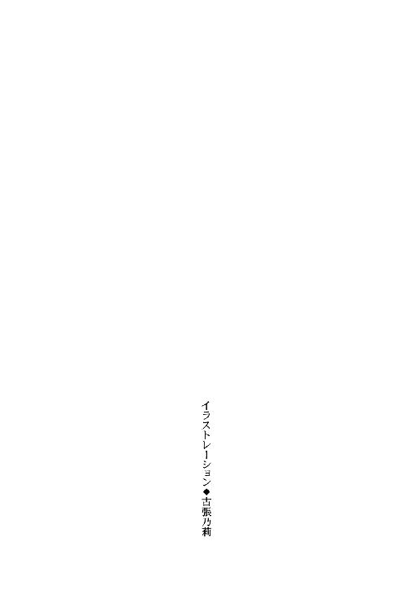
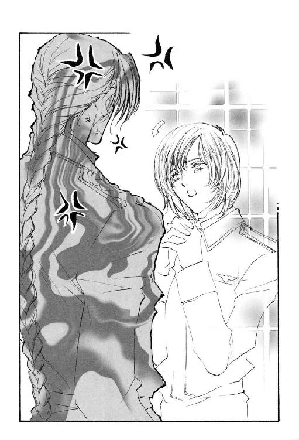

| 三千世界の鴉を殺し(7) (ウィングス・ノヴェル) | |
| 津守時生 | |

１
当の病院関係者でさえも、普段は銀河連邦宇宙軍立惑星バーミリオン・カーマイン市病院という長い正式名称を口にするものはいない。
軍病院もしくはカーマイン市軍病院と一般に呼ばれているそこの患者の大半は、同じ基地内に駐屯する宇宙軍兵士とその家族、さまざまな施設で働く従業員およびその家族で占められていた。
救急病院の指定を受けているために入院患者には基地外の人間もいる。特に外科は入院患者に外部の人間の占める比率が高いものの、それでも病室や見舞い客の歩く廊下では迷彩服と黒い軍服が目立つ。
その騒ぎが起こった時、外科主任医師サラディン・アラムートは精神科の医師マイケル・メジャーズと現在外科に入院している兵士の治療計画について、廊下で立ったまま話し合っていたところだった。
「──ということでよろしいでしょうか？」
「ええ、そのプログラムで結構です。私の時間が取れないばかりに、ご多忙のところを外科までご足労いただいて申し訳ございません。しかもこのような立ち話になってしまって......」
「いやいや、お気遣いなく。お美しいアラムート先生にこんな間近でお話しできて、しっかり目の保養をさせていただいていますから。逆に仕事のストレスも吹き飛びます」
恐縮するサラディンに対し、屈強な兵士を思わせる風貌のメジャーズ医師は、乱れなく整えた亜麻色の髪に手をやって破顔する。
小麦色に日焼けした精悍な顔と輝く白い歯が、見るものに押しつけがましいほどさわやかな印象を与える男だった。
仕事の合間をぬって基地内のジムに通い、力自慢の兵士たちと競うように肉体を鍛えているため、ほとんど身長差のないサラディンと比較して白衣の肩や胸のあたりが窮屈そうに見える。
三十代半ばで体力気力ともに横溢し、将来は精神科を背負って立つと目されている優秀なこの医師は、着任早々、同じエレベーターに乗り合わせた蓬萊人の外科医に一目惚れした。以来、接触する機会があるたび、かなり積極的にアピールしているつもりなのだが、思い人からは一向にいい感触は得られない。
それは他種族を警戒し、心を許さないサラディンの側に問題があった。
周囲の人間を個々に異なる内面を持つ個人としてではなく職種で認識し、彼らが自分に対して抱く感情は敬意と畏怖と好奇心のみだと思い込んでいる。
自分に寄せられる恋情を単なる好意と感じ、優れた医師への敬意から派生したものだと一元的に解釈するサラディンは、恋愛に関してルシファード・オスカーシュタインの鈍感さを責められる立場にない。
地球人が異種である蓬萊人に抱く恐怖は、本能的なだけに理性では克服しがたいが、それを同じ本能に属する恋愛感情で克服してしまうものもいた。
凄艶でありながら神秘的な透明感のある蓬萊人の美貌は、目にするものたちの心に強いあこがれと興奮を呼ぶ。周囲が恐怖しながら惹きつけられるのはそのせいだった。
加えて常に優雅な物腰は、高貴な出自をうかがわせる。優れた能力と財力によって築かれる一般的な支配者階級とは違う、血統で継承する貴族階級の存在を思い出させた。
爆発的に拡大し銀河系に多くの植民惑星を持つにいたった地球人のほぼ全部が、無自覚に拡散を続けた移民の末裔だった。血統を閉鎖的に維持することで価値を高める貴族とは対極にある。
銀河連邦から公式に滅亡を宣言されている蓬萊人に階級があったか否か、生き残りであるサラディンは知らない。彼は自分の血が教える種族の記憶以外、蓬萊人固有の文化も言語も受け継いでいなかった。
サラディンの自己評価は大変優秀な外科医だという以外、特記すべきものはなにもなかった。仕事のみに忙殺される毎日の中で、それは当然の結果だろう。
だが、地球人たちは外科医とは別のものを彼の上に見る。その意味で彼の不幸は蓬萊人に生まれたという一事に尽きた。
望むものをすべて掌中におさめなければ気がすまない強烈な上昇思考の持ち主であるマイケル・メジャーズは、サラディン・アラムートを目にするたび激しい征服欲をかき立てられる。自分の才能や努力では決して手に入らないものが、人間の姿をしてそこにいた。
もともと異種族間の混血は困難なので、同性であることは致命的な欠点ではない。地球人にはない幻想的な色彩の美しい容姿が、その欠点を充分おぎなってあまりある。
「ドクター・メジャーズは変わった方ですね。私の存在そのものが巨大なストレスだと言うひとが多いのに」
「私はそっちのほうが理解に苦しむなぁ」
精神科医は実に心外だという表情で明るく返した。
真珠の光沢を持つ白い肌を見ていると、所有のあかしに二度と消えない傷をつけてやりたくなる。自分の足元に這った彼を見下ろしながら、この形のいい唇からもれるすすり泣きと懇願の言葉を聞くのは、さぞ心地いいことだろう。
メジャーズは外科主任室に青緑の髪の麗人とふたりきりになれることを期待して、外科病棟まで出向いてきた。
自分の思いを受け入れる気があるのかどうか、その意思を確認したかった。もちろん否などと言わせる気はないし、その場で力ずくで関係を結んでしまうつもりだった。
人間も所詮はけものの一種であり、圧倒的な強者にねじ伏せられたあとは従順になる。
メスを繊細にあやつる優美な外科部長は、この基地にいる女性兵士より非力そうに見えた。
「だれか......ヘンリー！ 来てちょうだい、ヘンリー、サイモンッ」
ある病室の戸口から半身をのぞかせたナースが、悲鳴に近い声で衛生兵を呼び立てる。
「二十七号室の患者さんが飲酒を──きゃあっ！」
言葉の途中で強引に室内へ引き戻された彼女の体は次の瞬間、廊下に投げ飛ばされていた。
名前を呼ばれたもの以外にも衛生兵たちが小走りに集まってくる。その中のひとりが倒れたきりのナースに駆け寄って抱き起こし、手当てのできる部屋へと運んでいった。
ほかのナースたちは、何事かと顔をのぞかせる患者や見舞い客たちに病室へ戻るよう懸命に呼びかける。
二十七号室に飛び込んでいった衛生兵たちと何者かの争う怒声が上がり、すぐに途絶えた。
病室の扉が開き、赤ら顔の大柄な兵士が現れる。ひとりの衛生兵の首のうしろから太い腕を巻きつけ、のどを絞め上げていた。
灰緑色のＴシャツに迷彩ズボンをはいているが、入院している兵士の大半はパジャマなど着用せずにこの格好で通す。
半ば引きずられる格好になり、苦しんでもがく衛生兵の抵抗をものともせず、出入り口付近で遠巻きにするほかの衛生兵たちを睥睨した。白目の部分が赤くにごり、妙に目つきの据わった顔は表情が欠落して気味が悪い。
メジャーズ医師は、その巨漢が外科を退院した日から精神科に入院するはずだったアルコール中毒の伍長だとすぐにわかった。
まれにアルコール中和剤が効かない体質のものがいて、その人間が過度の飲酒を長期にわたって行なうとアルコール中毒になる。
この兵士は酔って暴れたあげく兵舎の三階の窓から落下し、数ヵ所の骨折と内臓をいためて入院した。その時の検査で発覚したアルコール中毒の治療を行なうべく、もうすぐ精神科への強制入院措置が取られることになっていた。
まさにサラディンと治療開始時期の相談をしていた患者が目の前にいる。
見舞った同僚が言語道断にも差し入れたのか、ナースたちの目を盗んで禁じられていた酒を飲んだのは、今の状態から見て明らかだった。
衛生兵たちはタイミングを合わせて一斉に飛びかかるため、目で合図をかわし合う。
彼らが身構えるより早く外科主任医師が口を開いた。
「気をつけ！」
耳にした軍隊関係者すべてに否応なく従うことを強いる鋭い号令だった。酔った伍長のみならず衛生兵たちまでが直立不動の姿勢を取る。
サラディンは静かな口調で尋ねた。
「ジョン・ウィルソン伍長。あなたはウチのナースに手を上げましたね？」
決して高圧的なものではなく、いつもの物静かな優しいとさえ言える声だったが、聞くものたちに鳥肌を立てさせるものが潜んでいた。
「ウィルソン伍長。あなたはウチのナースに手を上げましたね？」
再度確認のための問いかけをした外科医は、相手がかすかにうなずくのを見て微笑む。
伍長とともに見てしまった不幸な衛生兵たちが、今晩うなされるのは確実だと思った美しくも恐ろしい微笑だった。
「それほどお酒を飲みたいのでしたら、心行くまで飲ませてあげますよ。ただし私をこの場で殴り倒せたらです」
「アラムート先生。そんなことを言っては大変まずいことに......」と、メジャーズがかたわらで狼狽しながらたしなめる。
サラディンは精神科医の忠告を無視して続けた。
「どうしました？ 力自慢のあなたなら私ひとり叩きのめすことなど造作もないでしょうに。それともナース相手でなければ暴力をふるう勇気が出ませんか？」
優しく微笑む彼は、物柔らかな調子で周囲が青ざめるような挑発をする。
アルコールで低下しているウィルソン伍長の思考力は、医師への得体の知れぬ恐怖と聞き捨てにできない暴言への怒りとのあいだで空回りしていた。
そこでサラディンは、意気地なく迷っている男の背中を押す決定的な言葉を口にする。
「臆病者」
マッチョ信仰に毒された地球人兵士なら絶対に許さない一言は、本能が保身のために与えてくれた恐怖を吹き飛ばす。
野獣めいた咆哮を上げて突進してくる巨漢を正面から目にして、メジャーズは足がすくむ。エクササイズとしてボクシングは好んでも、顔面を殴られるのがいやで試合は経験してない。まして相手は、毎日肉体を鍛えて格闘の訓練を積んできた戦いのプロだった。
獰猛な殺気を正面から浴びる外科医は、小さく含み笑いを漏らして一歩を踏み出す。
殴りかかってきた男の右拳をかわし、その手首を軽くとらえてひねった。
サラディンの一・五倍は体重のありそうな巨体が宙に投げられて、腹から廊下の壁に叩きつけられる。
白衣の裾がひるがえり、神秘的な青緑色の髪が束の間虚空に広がった。
手首をつかまれたままだった伍長は、今度はあおむけに床へ叩きつけられる。続けて二度も受けた衝撃と激痛に息がつまり、わななくばかりで声も出せない。
相手の力を利用して投げる武術の技ではなく、大きなぬいぐるみのクマを振り回す子供のように超人的な怪力で兵士を壁や床に叩きつけた。
それでいながら医師の動きは、着飾った淑女をパートナーにしてワルツを踊るかのごとく優雅だった。
多少でも格闘の訓練を積んだものには、相手の苦痛を斟酌しない彼の非情さと余裕がわかるだけに戦慄を禁じえない。
サラディンは片足を盛り上がった兵士の胸板に乗せ、袖口から素早く取り出した鍼を次々とその体に打ち込んでいく。
いましがたまで感じていた激痛とは別種の耐えがたい痛みに襲われたジョン・ウィルソンは、顔を大きくゆがめて絶叫を放った。
しかし、それはまったく声にならない。そればかりか、床にのたうち回って周囲に苦痛を訴えるはずの肉体も、叩きつけられた時の姿勢で小刻みに震えるばかりだった。
外科医は瞳孔が縦に長い琥珀色の目をいかにも楽しそうに細める。
「苦しいですか？ あなたの肉体からアルコールが完全に抜けるまで、その苦しみは続きますよ。絶対禁酒の規則を守れなかっただけでなく、ナースや衛生兵に暴力をふるったことは外科主任として実に許しがたい。情状酌量の余地は一切ありませんね」
呆然と立ち尽くしていた周囲のものたちは、まるで死刑の宣告を耳にしたような気がして同時に身震いした。
「今の手応えですと肋骨が二、三本は折れているはずですし、ひびの入ったものもあるでしょう。入院は延長します。二度と酒など飲めないよう私が鍼で特別に治療して差し上げますよ。精神から根気よく治療をなさるドクター・メジャーズと違って、私は肉体がアルコールを受け付けないように改造する方法を取ります。メリットは短期間ですむこと。デメリットは今のように大変苦しいこと。......しばらく楽しませてくださいね。ふふっ」
今の間と含み笑いはこわかった──っと、傍観者たちは冷や汗をかく。
趣味で学んだ鍼を使い、魔法めいたさまざまな状態を人体にもたらすサラディンなら、彼の言うように二度とアルコールを受けつけない体にするのも可能なのかもしれない。
だが、治療と処刑が同義に聞こえるのはなぜなのか。いっそ殺してやったほうが伍長のためになるのではと思ってしまう。
「ミスター・ヘミング。皆さんで伍長を病室まで戻してください。苦しんでいるようすが消えないうちは鍼を抜かないように」
「アイ・サー」
〝苦しんでいるようすが消えないうちは〟などという発言は、患者を病気やケガから救うお医者さんらしくない......と思っても、そんな命知らずな指摘のできる衛生兵は外科にいなかった。
衛生兵たちに指示を出して事態を収拾した外科主任は、ずっと棒立ちで一部始終を見ていた精神科の医師を顧みる。言葉を失っている相手に対し、少しはにかむような苦笑いを浮かべて話しかけた。
「このような恥ずかしい光景をお見せして誠に申しわけございません。せっかく治療プログラムを作っていただいたのに、もう少し彼の身柄を外科であずかることになってしまいました」
「い、いや......それは構いません。まったく大変迷惑な患者で......そちらも持て余していらっしゃるでしょうに......」
「もう大丈夫ですよ、ドクター・メジャーズ。こわい思いをさせてしまいましたね。外科は私のテリトリーですから、ここにいる限り私があなたの安全を保証します。どうぞご安心を」
巨漢の体を片手で振り回して見せた白衣の麗人は、動揺を隠せない蒼白な精神科医を頼もしい言葉で励ます。
ナースの制止も聞かずにこの騒ぎを見物していた患者や医師、当のナースたちのあいだからも、アラムート先生ってカッコイイ、お美しい上にとっても頼りがいがあってステキ！ という言葉が次々に上がった。
自分の縄張りという発想も男性的だった。
本来ならば自分が浴びてもおかしくないはずだったサラディンへの称賛の言葉を聞きながら、マイケル・メジャーズは眼前の蓬萊人を手込めにしようとした場合、自分もあの伍長同様の目に遭う可能性に思いいたった。
力ずくで思い通りに嬲るどころではない。即座に叩きのめされ、悪心の報いを壮絶な苦痛とともにこの身と心に思い知らされるのが関の山だった。
悲鳴さえ許さない苦痛を与えながら、そのあいだも上品に微笑んでいるだろう。
自分が恐ろしい勘違いをしていたことに気づき凍りつく。
さらに血の気を失ったメジャーズのようすをいぶかしげに見る外科医は、口に出して気遣う前に胸ポケットに入れた携帯端末の呼び出しに応じる。
「はい、アラムートです。......え？ 申し訳ありません。もうそんな時間になっていましたか。今すぐそちらにうかがいます」
イヤホンを巻き戻すボタンを押しつつ、メジャーズ医師にわびた。
「すみません。内科主任と患者の治療計画について話し合う約束をしていた時間が来てしまいました。行かねばなりません」
「......それでは、こちらもこれで」
「またなにかありましたら、よろしくお願いいたします」
「こちらこそ」
サラディンはいつも通りに笑みを絶やさず如才なくふるまう。
だが、ようやく真実を知った男の目には、今まで支配欲をかき立てられた存在とは全然別のものに映る。
ゆがんだ欲望にとらわれていた自分は、普通の人間なら感覚的にすぐわかることすら気づけなかった。
メジャーズは強烈な敗北感に打ちのめされながら、自分ごときが決して手を出してはいけない人間がいるのだと恐怖をもって思い知らされた。
狙撃された傷は癒したものの衝撃から体調を崩して動けない水麗人を両腕にかかえたルシファードは、女傭兵から一瞬たりとも目をそらさずに出方をうかがっていた。
〝血まみれ〟レスの異名を持つ青鱗人の女は、頽廃的な色気を漂わせる豊満な美女だったが、物憂げな妖しい外見に惑わされていると命を落とす。
格闘になれば動きの速さもパワーも地球人の男を上回り、相手の急所をねらう執拗さには背筋を寒くするものがあった。
そして、捕虜や戦闘不能にした敵をできる限り生かしながら切り刻むという残忍な性癖が、おぞましい異名のもととなっていた。
かつてルシファードはナイフを持ったレスと戦い、かろうじてねじ伏せた経験から、都市警察の電脳刑事をかばいながら戦って勝てる相手ではないことを承知している。それどころか、隙をついてレッドを人質に取られる危険が高い。
そうなると自分をかばって撃たれたレッドを見殺しにできず、見捨てて逃げるわけにもいかなかった。
ルシファードにおばさん呼ばわりされただけでなく、悪意をもって体重と服装のセンスに言及されたレスは、最初に勝利を確信していた笑顔をこわばらせて言い返す。
「長年軍隊にいて男のような女ばかりを見ているあなたが、本当の女の魅力を理解できるとは思えないのだけれど」
「女ってそーゆートコが不思議だよなー。どんなブスでもナルシストなんだから。客観的評価なんぞ全然聞く耳持たねえしよ。自分的には幸せでＯＫなんだろうけど」
つねづね疑問に思っているといった調子でルシファードが答えた時、レスの背後に控えていた傭兵らしきふたりの男が、明らかに動揺したそぶりを見せた。
レスを不美人だと揶揄するルシファードの評価は正しくない。一般的な美的感覚の持ち主なら、単にレスを侮辱して不快がらせようという彼の意図はすぐわかる。
自分たちの隊長に向かって、とんでもない暴言を平然と吐く男が存在したことに男たちは驚愕したのだろう。
一度レスと敵対した人間なら、彼女がどれほど危険で恐ろしい女かを絶対に忘れない。知りながらこんなセリフを投げつけるのは、命知らずを通り越して自殺行為だった。
同時にテレパシストのレッドはおびえて、自分を抱く男の胸により強くしがみつく。
今の一言を聞いた瞬間、レスの全身から吹き出した炎のように熱く激しい感情は、憎しみや怒りといった当然の感情だけでなく、殺意に彩られた官能的な悦びが多く含まれていた。
その淫らで残忍な感情の昂ぶりが、感情の強弱に乏しい水麗人の精神には強烈な負荷となってのしかかる。
彼女は目の前にいるルシファードを犯して嬲り殺す至福の時を夢見ていた。現在の状況で自分がこの男を絶対に逃すはずがないという自信のせいで、部下たちが想像するより暴言に対する怒りは小さい。
確信するのも無理はないほどレスたちの立場は一見優位に見えた。
だが、ルシファード本人はこの状況をさほど悲観していない。服を着たまま水の冷たい川で泳ぐのはうれしくないとしても、逃げるだけならこの連中の射撃を防ぐのは簡単だった。
ルシファードは自分の考えを腕の中にいるテレパシストに読ませ、安心させるとともに早まった行動をとらないよういさめる。
レッドを手放して両手の自由を取り戻すより、人質に取られる可能性をなくすほうが最善の策だった。そうなっては、ふたりとも逃げられなくなる。
彼の冷静な思考に触れたレッドは緊張を解く。確かに今彼から釘を刺されなかったら、足手まといになるまいとして身を捨てる行動を取ったかもしれない。
インターネット犯罪の取り締まりを仕事にする電脳刑事は、現実世界でも実戦経験が豊富な男にすべてをゆだねた。
〝──すまない、ルシファード。あの女の考えを読んで君に伝えたいのだが、意志が強くてガードをはずせない〟
努力したことは伝えるテレパシーに対し、よけいに具合を悪くするから無理をするなと、言葉のない穏やかな応えが返る。
本気で恫喝するレスの声が低くなった。
「相変わらず身の程をわきまえない坊やだこと。この私にそんな口をきいて無事ですむとお思い？」
「けっ。なーにを偉そうに言ってるんだか。たかが、ちょっと腕のたつ傭兵ってだけだろう。しかも趣味でひとを切り刻むような変態じゃ業界でも三流以下と見なされるし、今や賞金首の連邦指名手配のオマケつき。そんなやつを雇おうって物好きは、金のためならなんでもする犯罪者集団くらいだな。薄汚いギャングの手先が、銀河連邦宇宙軍大尉さまになんのご用があるのかな～？」
傭兵の男たちが息を呑む。
女性としてのレスへの侮辱だけでも万死に値すると思われたはずなのに、それに飽きたらず傭兵としてのプライドも踏みにじるなど、敵ながらあまりの無謀さにその身の行く末が心配になってくる。
果たして青鱗人の顔から表情が消えた。
「虚勢を張るにしても、頭の悪い子は言っていいことと悪いことの区別もつきませんのね。よくわかるようにしっかりとお仕置きをしないといけないわ」
「ネトネト糸引きそうな口調で気色の悪いコトぬかすんじゃねーよ。三百年四百年生きていよーが、快楽殺人狂の変態ババァなんぞに仕置きしたり説教タレる資格があるか」
「そうかしら？ 四百年も生きてきたら、生きている人間がどんなに無価値で悪質な生きものか身にしみてよくわかるものよ。時々殺して楽しむくらい可愛いものですわ。──なんですの、そんな顔をして？」
スクリーン・グラスをした黒ずくめの大尉は子供のように口を開け、あっけに取られていた。
レスに言われて我に返り、
「四百歳ってマジ？」
「そんなにわざとらしく驚くのは芸がなくてよ。青鱗人の長命はご存じなのでしょう？」
「いや、知らなかった。うわ、ヤベェ......。ナシナシ！ 今のナシだから。年齢に関係する悪口は全部削除する。知らなかったとはいえ、ごめんなさいっ」
あわてて謝罪する男のようすにレスは眉をしかめる。新手の挑発とも思えないが、警戒しつつたずねた。
「......なにを言っているの？」
「ガキの頃からおふくろに、お年寄りは生きた宝物だから大切にしろって厳しく言われ──あっ、いや、決してあなたがお年寄りだなどと言っているワケではなくぅ、それどころか大変外見がお若くていらっしゃるものだから、ちょっとわかんないまま調子に乗って、つい失礼なことを申してしまいました。すみません、ごめんなさい。反省します。もう二度と言いません」
レッドが吹き出す。
「おいっ、なんでそこで味方のあんたが笑っちゃうんだ」
「だって......ルシファード、本当に困っている。いまさらそれは変だろう」
傭兵の男たちが歯を剝いて大げさな怒りの表情を作った。
一歩間違えば笑ってしまいそうになるのをこらえ、その表情を必死に維持する。ここでうっかり笑ってしまうと、あとでレスに八つ当たりで殺されかねない。
「本当にすみません。悪気はなか──いや、かなりあったコトはあったんですけどぉ、つい地球人を基準とした年齢が頭にありまして、まさかそこまでお年を召していらっしゃる方とは露知らず、大変な失礼を──あああ、どうしよう。なんだか、言えば言うほどまずいことになっていく気がするぞ。これってつまりが泥沼ってワケで......地雷原踏みまくり状態？」
頼む、もうやめてくれ──と目に涙を浮かべた壮絶な形相の男たちは、声にならない悲痛な叫びを上げた。
このままでは笑ってしまう。
目の前でモゴモゴと言い訳を続けている愉快な超絶美形と戦って死ぬのなら、まだあきらめもつく。が、心ならずも笑ったというマヌケな理由でレスに嬲り殺されるのは、あまりにも自分の人生哀し過ぎる。
哀れな彼らを救ってくれたのは、その苦しみの源である女傭兵だった。
頭痛でもするのか、ゆるやかに波打つメタル・ブルーの髪に片手を差し入れ、いらだたしげに相手の謝罪をさえぎる。
「──もうよろしくてよ。あなたの気持ちはよくわかりましたわ。だからと言って到底許す気にはなれませんけれど」
「もとより承知で踏んだ地雷ですし、誠意さえ通じれば結構です、レスお姉さま」
「なんてことでしょう。楽しみにしていたのにせっかくのイメージが大崩れして興醒めだわ。......こんなことならアルジャハル教授に譲ってしまおうかしら」
最初の意気込みがすっかり萎えたレスは、もはや本気なのか悪意でふざけているのかすら判然としないルシファードを無視し、不機嫌そうにあてつけ半分のひとりごとを言う。
「アルジャハル教授......？ サイード・ハダム・アリ・アル＝ジャアファル教授？」
黒髪の宇宙軍士官は、彼女の聞こえよがしな独白から気になる人名をひろい上げた。しばしば短縮形で呼ばれる姓を正しく発音したのみならず、フルネームまで口にして確認を求める。
即座に返った相手の反応に気をよくし、女傭兵は思わせぶりに男の全身を視線でなめ回す。
「そう。なつかしい名前でしょう？ 教授はあなたをずいぶん可愛がったようにおっしゃっていましたわ。今でもたいそうなご執心で、あなたの──」
「この惑星にいるのか？」
「ええ。あの方と私たちの目的は違いますけれど偶然──」
「どこにいる」
レスは何度も話をさえぎられて気色ばんだが、すぐに機嫌を直してほがらかに笑った。耳から毒を注ぎ込むような優しく甘い声にさらなる悪意をこめて言う。
「私たちと一緒においでになれば教授とお会いになれましてよ。さぞ喜んでくださるでしょう。ただし二度と基地には帰れませんから、そのおつもりでね」
ルシファードは答えなかった。
凝然と立ったまま思いがけずに得た情報をしばらく嚙みしめている。
やがて奇跡のごとく端整なその面にゆっくりと笑いが浮かび上がっていく。うれしくてたまらないといった表情だった。
しかし、それは決して見るものをなごませる明るい笑顔ではなかった。
残酷さでは人後に落ちない青鱗人ですら、その笑みの禍々しさに怖気をふるう。
「......ちょうど十年だ。そりゃあなつかしいぜ。世話になったなんてなまやさしいモンじゃねえしな。教授がこの惑星にいるなら、俺が是非ともあの時の礼がしたいと言っていたと伝えてくれよ」
「この......っ！」
ブラッディ・レスは激昂した。
サイード・ハダム・アリ・アル＝ジャアファルのほうが、レスよりはるかに重要人物なのだとルシファードは態度で告げている。
自分から見れば赤ん坊同然の若造の気迫に圧倒されただけでも腹が立つのに、彼女に対してその若造はずっと百パーセントの〝本気〟で対峙していなかったのだと、今悟った。
仇敵と思い、長い間再会を待ち焦がれていた男が自分を前にしながら、ほかの人間に気を取られている。
許せない。
具体的になにかを考えるより早く右手が動いていた。
『ルシファード！』
軍服の男の腕に抱かれた水麗人が、テレパシーで鋭く警告の叫びを発する。
それとほとんど同時にルシファードも軽く数メートルを飛びすさっていた。
レスの手にしたのがホルスターに納まった大口径の銃ではないのを一瞬で確認し、彼は本能的に危機回避の行動をとった。
それが銃だったら念動力で重力のシールドを発生させただろう。
だが、体が先に動いてしまった。
人間ひとりを抱えたまま軽々と跳躍したロング・コートの長身は、橋の欄干寄りの歩道に着地する。
レスの手から放たれたなにかは、まっすぐ伸びて今まで彼が立っていた場所を貫く。
『だめだ、来るっ！』
視力を持たない人魚は、弧を描いてこちらに向かってくる殺意の流れを超感覚の目でとらえていた。
顔の右半面に殴られたような衝撃と激痛が走り、ルシファードは大きくよろめく。
右半分の砕けたスクリーン・グラスと宇宙軍の制帽が高く宙を舞い、鮮血がレッドの大腿部から膝にかけて飛び散る。
「あ、ああ......──っ！」
細い悲鳴を上げたレッドはルシファードの首に手を回してしがみつく。
『目が......右目が......ルシファードッ！』
彼の感じている激しい痛みのもとを封じ、まだ危機の去らない今だけでも苦痛からまぬがれるように力を使う。
レスは男の顔面を打ちすえた携帯用の武器を手に戻し、勝ち誇って高笑いをした。
「ざまを御覧遊ばせ！ それが私を軽んじた報いというものですわ。ご自慢の美しい顔を台無しにして差し上げたのですが、具合はいかがかしら？ 気に入っていただけて？」
レスの使った武器は、重くて柔らかい金属を加工して作ったムチだった。一見細い銀色のワイヤーだが、目標に命中すると平たく潰れて打撃面を何倍にも広げる。彼女だから片手であつかえるが、地球人なら男でも重くて両手でなければ持ち上げられない。
右の頰骨から額にかけてをややななめの垂直に近い角度でえぐられたルシファードの傷は深い。噴き出す血はたちまち赤い流れとなってあごをしたたり落ち、コートの胸元やレッドのズボンを汚した。
ともに血の色の目立たない黒い服だったが、凄惨な光景に変わりはない。
おのれの流す血の匂いをかぎながら、うつむいて目を閉じたままルシファードは苦笑する。
「女って、どーしてそう嫉妬深い上にカンがいいんだかなぁ。ちょっとでも男の関心が自分からそれると、とたんにコレだ」
「あなたが悪いんですのよ、坊や。私が可愛がってあげようと言っているのに教授のほうを選ぶのですもの。だからお仕置きをしましたの。そろそろ本気にならないと、もっと痛いお仕置きをして差し上げましてよ」
手負いの獲物に抵抗を強いて、さらに楽しもうとする女が優しくうながす。
美しい半面を血まみれにした男が顔を上げる。
「そうかい。ならば出してやるぜ、その本気ってやつを──」
かっと見開いた隻眼の虹彩が、輝く黄金色に変化していた。
常にスクリーン・グラスをしている彼の素顔を知らなかったレスだが、予想以上の美貌とその異様な色の迫力に思わずひるむ。
そこへいきなり足元が大きく盛り上がり、何事かと身構えた時には路面が消滅し、体が空中に投げ出された。
連れてきた配下ふたりも短い叫び声を上げて宙を舞っている。
すぐに上昇から落下に転じるのを感じ、なんとか足が下になるよう体をひねった。肩や腰からぶざまに落ちた男たちと違って足から降り立ったものの、衝撃を充分に膝が吸収できず左足首に痛みが走る。
だが、足首の状態を確認している余裕はなかった。
また足元が盛り上がる。
ひび割れた路面のおびただしいかけらとともに再び宙へ投げ出される途中、ようやく巨大な橋が波打っているのだと気づいた。
地震を疑いかけて、すぐに直前の会話を思い出す。息を呑むほどに凄惨で美しい男の顔と大きく見開かれた異様な色の目──。
〝出してやるぜ、その本気ってやつを〟
──まさか......っ！
落下の衝撃から身を守ることも忘れ、黒髪の男の姿を横倒しになった視界の中に探す。
宇宙軍の大尉は相変わらず華奢な青年を両腕にかかえた格好で、空中に浮いていた。
レスたちのように投げ出されているのではなく、まるでその場所に透明な床でもあるかのように静止している。
翻弄される彼女たちを見下す表情のない黄金の目。
「......化け物......っ！」
彼女の口から嫌悪をこめた罵声がほとばしった。
その声が届いたのか、男の長い髪が生きもののように空中をうごめく。
「だめだ、ルシファード！ バーミリオンが砕けてしまうっ」
水麗人が必死でとめる叫びに鈍い音が重なる。
「う......ぐっ！」
背中から叩きつけられたレスは、自分の周囲から一斉に同じ音が上がるのを聞いた。
橋の亀裂が表面にとどまらず深部にまでおよび、互いに押し合う力で断面が上へと押し上げられる。路面の亀裂が深くなり大小の塊に分かれてひしめく音だった。
埋設されたケーブルがちぎれて垂れ下がり、上下水道から水が噴き出す。折れ曲がった鋼材が割れた断面からのぞく。
その光景がなにかを連想させる。
衝撃に息もできない状態のレスは遠のく意識を手放すまいとして、自分の抱いた疑問にしがみついた。
──ああ......手足のちぎれた人体だわ。
爆風で引きちぎられた人間の体の断面に似ている。
設計者の想像もしない未知の強大な力にゆさぶられ、大きくひび割れた橋は自重を支える限界を越えて一気に崩壊した。倒れたまま動けないレスや配下の男たちもろとも運河の中へと崩れ落ちていく。
水しぶきが高く上がり、橋を境に分かれた上流と下流双方に小さな津波が発生する。
ちょうど橋の下をくぐったばかりだった巨大な資材運搬船は、幸いにもふくれ上がる水面に乗り上げる形で一番大きな波をやり過ごした。
それでも積荷の鋼材はかなり水をかぶる。移動する水の力は強い。太いワイヤーで何ヵ所も固定されていなければ、合金の山は荷崩れを起こしたかもしれない。
積み降ろしを効率よくするために手すりが一切ない平らな甲板なのも幸いした。かぶった水が船の上にたまることなく運河に戻る。
念動力で空中を移動したルシファードは、その資材運搬船の上に降り立った。
これだけのことをしでかした以上、現場近くでリニアカーをひろって基地に戻るわけにはいかない。利用記録の時間と乗降場所を調べれば橋の崩壊との関係を疑うのに充分な証拠となる。
積み上げた鋼材の最上部はほとんど水がかかっていなかったので、足をすべらせる心配はないが、まだかなり揺れるため運河に転落する危険性は高い。
硬くて腰から体温を奪われていきそうな冷たい場所にやむを得ず腰をおろし、都市警察の刑事も左側に座らせる。
レッドは一連の騒ぎで残る気力も使い果たしたのか、すべてをルシファードに任せている。
周辺のビルに働くものたちが橋の崩落する音を聞きつけて、なにが起こったのかと窓から身を乗り出している。ビルを走り出て現場を見に行く物見高い人間もいた。
コンピュータ制御で航行する無人の資材運搬船は、次第に高くなっていく周囲の喧騒もかまわずに同じペースで進む。
この状況下で目撃者が出るのは好ましくないと判断し、レッドはこの船を目にしたものの記憶に自分たちの姿が残らないよう心理迷彩を三百六十度展開した。
「この船の最終目的地がどこかはともかく、橋から充分離れた場所まで移動してから車をひろうことにする。具合が悪いのにすまないが、もうしばらく我慢してくれ」
『ルシファードこそ、早くそのひどい傷の手当てをしなければ。痛みは抑えているが出血を止める力が私にはない』
水麗人は自分の上体を抱き寄せ、広い胸に寄りかからせてくれた男の傷の具合を改めて探り、その深さにおののく。
傷を負った当初ほど失血はひどくないが、あふれる血は相変わらずコートの胸元にしたたり落ちていた。
「痛まないのは、やっぱりあんたのおかげか。いつもだったら勝手に治るんだが......。目玉だから無理かな？」
『治る......？』
「治癒能力だよ。あんたの肩の銃創を治しただろう。意識がよそに向いていたせいかも──」
『違うっ。すまない、私はよけいなことをした』
レッドが珍しくあわてた調子のテレパシーを返す。
いきなり右半面の激痛が復活した。
「......いっ......てえぇー......」
息とともにルシファードは低いうめき声を絞り出す。
脈動に合わせて発生する殴りつけられるような痛みが頭の芯まで届く。手袋が血に濡れるのもかまわず負傷部分を片手で押さえた。
苦痛の復活と同時に右半面が熱くなる。この感覚には覚えがあった。
額から頰骨あたりにかけての痛みが急速に遠のき、出血が止まって深くえぐられていた傷口もふさがっていく。
自分に対する治癒能力の発現は痛みがきっかけになるらしい。レッドの気遣いで痛覚を麻痺させられていたことと、自身の意識が戦いに傾いていたために発現しなかったのだろう。
眼窩の奥に鈍痛は残っていたが、手袋越しに触れた感触ではどうやら顔面の傷はきれいに治ったらしい──と安堵したのも束の間。
「......マジかよっ！」
『ルシファード？』
心配するレッドの問いかけに答えず、眼窩に満ちた異様な感覚にうなった。
熱い。ただの穴に過ぎなくなった場所でなにかがふくれ上がり、それが別のなにかを押し出してくる。
歯を食いしばったルシファードは、手で半面を覆ったまま総毛立つ。中から押し出されてくるものについて、理性が考えることを拒絶していた。
完全に押し出されたものを手のひらで受け止めざるを得なくなり、それを包んで拳を作る。
おそるおそる手を離して閉ざした目蓋を開く。左右の目が違う角度のものを見ている視界の奇妙さにすぐ目を閉じた。
今の失敗で勝手に角度が調節される。再び慎重に目を開いた時には、いつもと変わらぬ状態で正常な視界が広がっていた。
もう痛みはどこにもない。
ようすを心配し超感覚で見守っていた水麗人が、完全に治癒した彼の傷を視て喜ぶ。
『すごい！ 治癒能力の発現を見たのは初めてだが、まるで奇跡のようだ。すばらしい。君が片目を失わずにすんでよかった』
歓喜と称賛のこめられたテレパシーに応えず、ルシファードは右手がにぎり込んでいたものを運河の水面へと投げ捨てた。
潰れた自分の眼球の残骸など見たい気分ではない。
『......どうしたんだ？ まだ痛むのか？』
レッドは両目蓋を閉ざしたままの顔を上げ、無言の男の横顔をうかがうしぐさを見せる。
傷を治したばかりか失った眼球まで復活させた男が、ひどくけわしい表情をしていた。
描いたようにシャープな線を持つ横顔の口元がわずかに歪み、幻の視線に対して苦い笑いを浮かべる。
「気色悪いよな。さすがに自分でも......ここまで化け物だと思わなかった」
『化け物？ とんでもない。君のその能力はだれもがうらやむ奇跡の業だ。私がよけいなマネをしなければもっと早く治せたし、これほど出血せずにすんだのに。すまない』
「いや。あの時、新しく目玉が生えてきたりしたら、戦意喪失してレスと戦うどころじゃなかったよ。どんなことをされるか想像すると失神しそうだが、今頃あの女の思い通りにされていただろうな。......それにあんたが止めてくれなかったら......俺は本当にバーミリオン星を砕いていたかもしれない。あんたを巻き添えにしてケガまでさせたのに、何度も助けられた。ありがとう」
話している間にも陰鬱なものになっていく彼の気分を救おうとして、レッドは発熱で思考がまとまらない自分の気力を懸命にふるい立たせた。
『具体的に何かを考えたわけではない。ただ君の力が一瞬無制限に拡大していく気がした。それで止めなければいけないと思ったのだが、どうして惑星が壊れるとまで言ったのか......。この惑星が君の力のおよぶ物理的な上限だからかもしれない』
「なるほどね。......アル＝ジャアファル教授の名前を聞いてから、俺のどこかにあったストッパーが機能しなくなった気がする」
『それも当然だろう。君がその男にされたことはひどすぎる。我を失っても仕方がない』
精神連結によって得たルシファードの情報は、決してこの男が順風満帆の人生を歩んできたわけではないことを教えてくれた。
特にアル＝ジャアファル教授が主犯としてルシファードに行なった脳科学研究所の犯罪は、実験対象にされた彼が社会復帰し現在もこうして生きているほうが不思議に思えるほどのものだった。
感情の大半が休眠しているという特異な状態が彼に幸いした。彼以外の人間なら途中で発狂していたか、その時のトラウマから一生立ち直れないで終わるだろう。
『君は......自分がその力を持って生まれたことを不幸だとは思っていないと言った。だが、君がどう思おうとその力は君を不幸にしている』
「不幸なのは俺じゃない。俺のまわりの人間なんだって、たった今気づいたばかりだ。親父の言った言葉の意味がようやく理解できた。実にありがたい忠告だぜ」
自嘲気味に半ばひとりごちる彼の気分は、相変わらず暗い。感情の振幅が少ない普通の状態と比較すると、彼の負った精神的ダメージが深刻なものなのは明らかだった。
『ルシファード。なにをそんなに自分を責めている？ 念動力の暴走は未遂に終わった。橋を破壊したことは半分正当防衛だ。ちょうどリニアカーの通行も途絶えていたから、人的被害もあの傭兵たちだけだ。物質的被害は賠償がからむと厄介にせよ、その程度の問題を思いわずらう君ではあるまい』
スペース・コロニー一基を使用不能に陥らせた損害と比べれば微々たるものだ──と、つけ加えるのはやめておく。容赦のないライラと違って、同性であるレッドは男心のナイーヴさに対する配慮がある。
「自分で自分が気持ち悪い。正真正銘化け物だ」
驚いたレッドがそんなことはないと否定する前に、いきなり別の超能力者からの呼びかけが頭の中で炸裂した。
『ルシファード！ やっと見つけた。無事か？ 君があんなに強い念動力を使うだなんて何が起こったんだ？』
「......っつぅ！ 頭が割れちまいそうなでっけぇ声で呼びかけるなっ。もう少しボリュームを落とせよ、ニコラルーン。基地からか？ この距離で俺の思考が読めるか？」
『残念ながら無理だね。今のように声に出してくれ。一緒にいるのはだれだい？』
「都市警察の電脳刑事だ。詳細を話している余裕はねえ。手強い敵に襲われて身を守るために橋をブッ壊した。探し出したなら俺の現在位置と状況はわかるな？ なんとか足がつかねえように迎えをよこしてくれ。携帯端末がイカレたんで、こうなった経緯はその迎えの通信機を使って説明するから」
やや間を置いて、今度は適切な強さになったテレパシーで返事が戻る。
『了解した。軍病院の救急医療用ＶＴＯＬを借りてケガ人の収容を装い、私が迎えに行こう。破壊された橋の調査のためにＶＴＯＬを宇宙港から飛ばし、その目くらましにする』
「アイ・サー。いい作戦だぜ、少佐殿」
『ケガをしているならＶＴＯＬの中で私が治療してあげよう。それじゃ──』
「ケガ、か......」
遠くにいる超能力者との会話を終え、小さくため息をついた男にレッドが言う。
『君の力が大きいからといって周囲が君を化け物呼ばわりするのなら、それは周囲が間違っているんだ。脳科学研究所の連中の行ないを正しいとはだれにも言えないだろう』
「ありがとう、レッド。だけど俺が落ち込んでいるのは別のコトだ。他人が俺の力をどう受け止めるかなんて問題は、人間の数だけ反応が違うんだから悩んだところで結論なんか最初から存在しねえよ。自分が気持ち悪いって言ったのは......いや、これも結局いくら自重しようと、念動力を使い続ける限り結論は出ねえな」
『ひとりで呑み込んでしまわないほうがいい。君とは能力が違うが、一応私も超能力者だ。話せば少しくらい楽にならないか？』
「自分が今だけ楽になるために、あんたにずっと俺の問題を背負わせる気にはならねえな。あんたは精神連結の影響で俺に入れ込んでいるだけだ。やめておけ。俺とあんたの生きている世界は違う」
ルシファードの態度は潔い。頑健な体質ではない水麗人を巻き添えにして重傷を負わせたことをとても後悔している彼が、これ以上自分のトラブルにかかわらせまいとする気遣いもわかる。
それでもレッドは悲しかった。好きな人間に自分たちは生きている世界が違うと拒絶され、その代わりに得た安全をどうして喜べるだろう。
だが、今はこの男をわずらわせたくないので反論しなかった。
「寒いのか？ さっきから震えているようだが」
『......少し』
本を胸にかかえた姿勢を変えず、ずっとテレパシーで会話するレッドの顔色はとても悪い。抱き寄せている左手に伝わる感触では、少し寒いと思っている程度の震えではなかった。
橋の崩壊にともなう波は沈静化し、資材運搬船の揺れはわずかなものになりつつある。代わって意識に昇るのは運河の水面を吹き渡る風の冷たさだった。
ルシファードは右手で相手の体温を確認しようとして、自分のしている血まみれの手袋に気づく。思わず顔をしかめると、今度は乾き始めた血のせいで皮膚が突っ張る。
──スクリーン・グラスと制帽もなくしちまったし、あんまりニコラルーンに見られたくねえ格好だなぁ。
情けない気分で立ち上がると、足元とバランスに気をつけながらコートを脱いで、レッドの体に着せかけた。
筋肉自慢の兵士たちより細身とはいえ、二メートル近い長身の彼は肩幅も胸の厚みも充分ある。彼のロング・コートは並みより華奢な水麗人の全身をくるんでしまう。
その上で手袋をはずし、ぐったりしているレッドの額に手のひらを当てて体温をはかった。
「暖かいっつーコトは、平熱が俺よりずっと低いあんたには高熱だよな。ショックのせいか被弾による感染症か......。後者だとマジにヤバイな。ひどい目に遭わせて本当にすまない」
『それはもういい。君が私を撃ったわけではないのだから。それより君が風邪をひく』
「ンなワケねえって。あんたも泳ぐほうが得意だという話だったし、いざとなったら運河に飛び込んで、泳いで逃げようと思っていたんだぜ。だけどあんたの大事な本がダメになっちまうのは確実だったし体調も悪かったから、そうならずにすんで正解だったな」
再び腰をおろしたルシファードは、レッドの上体を膝の上に半分乗せるようにして腕に抱く。
「硬い鋼材の上に横になっているよりは楽だろう？」
もちろん否やはない水麗人は、かすかにうなずいてその腕に身をゆだねる。
顔や頭の回りにモヤモヤと漂う核のない痛みがあった。それが熱のせいだとわかっていても、わずらわしくて吹き払いたくなる。
いらだちにうながされ、魚のひれに酷似したレッドの大きな耳がゆるやかに動いた。
日差しを柔らかくはじいて青紫色の蝶の片羽根が優雅に舞う。
目と鼻の先でその光景をながめる男は、ついに我慢できなくなって言った。
「......レッド。耳にさわっていい？」
『どうぞ』
好奇心を抑え切れない子供のはずんだ口調そのものだったのがおかしくて、答えるテレパシーに笑いの響きが混じる。
なぜなのだろう。感情の大半が封じられて強弱に乏しいはずの男なのに、矛盾が生じるほど多彩な顔を見せる。
ルシファードは最初に指の腹で、半透明の薄い皮膜部分を慎重になでた。薄くても見た目より固くて丈夫そうな感触に安心し、次に芯になっている軟骨の部分を指先でつまんで曲線をたどる。
指で触れて構造を細部まで理解することで、美しさの根源を解明できるとでもいうかのように強度と感触を熱心に調べた。
観察に夢中な彼は、元来表情に乏しい上に顔を彼の胸元へ埋めていた水麗人の異変を見逃す。
レッドはルシファードの指の生々しい感触に驚き、指紋の凹凸さえ即座に判別できる自分の耳の過敏さを初めて知って狼狽した。
おのれで触れる時にはまったく意識しなかったものを他人の手だとここまで鮮明に感じ取ってしまう。
丁寧だが執拗な彼の指は、鋭敏な感覚器官のあらゆるところをまさぐっていく。
唇を嚙んで危うく漏れかけた吐息をこらえた水麗人は、絶対相手に自分のようすを気取られまいと身を固くした。こらえても止められない体の震えは、発熱の悪寒のせいにできる。
生きる世界が違うと言い切った。
優しくて冷酷なこの男が自分を腕に抱き、そうと意識せず愛撫の指を這わせることなど二度とあるまい。悲しい確信が初めて知った我が身の官能を高める。
地球人たちは水麗人に孤独を意識させないよう、種の違いのもっとも明確な象徴である耳にだれも触れなかった。その事実がさらにレッドの悲しみを深くした。
２
ニコラルーンはＶＴＯＬの乗降口を開けてすぐ、都市警察の刑事の体を両腕に抱いて飛び込んできた男に内心で突っ込みを入れた。
──ホバリング状態とはいえ一応空中なんですけど。
とはいえ昇降用の担架を降ろしても、腕力のない自分がケガ人を機内に回収できるかどうか、はなはだ自信がない。
ドアの開閉はラフェール人に任せ、抱いていたレッドの体を治療台にベルトで固定しながらルシファードは言う。
「狙撃された。感染症の可能性がある。警察病院のメディカル・コンピュータにハッキングして水麗人のデータを引き出してほしい」
「私に精神感応でやれと言っているなら、残念ながらできないよ」
「××。命がかかっているのに違法行為もクソもねえだろ」
「こら、下品な言葉を使うのはやめなさい。私の力は機械との適性が大変悪いんだ。普通人で言うところのメカ音痴の類かな」
驚きの表情で肩越しに振り返った男に肩をすくめて見せる。
一口に超能力と言っても、個々の人間に個性があるように力も千差万別。種類も違えば力の強弱から発現する条件、ニコラルーンのような適性の問題がかかわる場合も多い。
いかなる状況にも左右されず、一定レベルの強い力を発揮できるＯ２やルシファードのほうが珍しい。
「役に立たねえな」
「迎えに来てあげた私にそれかい。機外にけり落としちゃうよ。──どうせ数分もかからず軍病院に到着する。もう止血済みなんだし感染症なら病院での治療がベストだ」
パイロットに回収作業終了を告げたニコラルーンは、医薬品ケースの中から取り出した冷却シートをルシファードに手渡しながらさとす。
包装を破ったシートを水麗人の額に貼った相手に向けて、洗浄用の蒸留水とタオルを投げる。
「きれいな顔が台無しだね。返り血？」
「違う。自分の治癒能力で治した。レッドの銃創も」
「うわぁ、ルーシーってばお役立ち。私がわざわざ来る必要はなかったかな」
「そんなことはねえよ。あんたには少しでも早く頼みたいことがあった。心理障壁をはずすから勝手に読んでくれ」
情報将校はルシファードの指示通り、濡らしたタオルで顔の血をぬぐい取る彼の記憶を瞬時に読み取った。
「狙撃者たちの始末は引き受けた。本部に戻り次第適切に対処する。君の外出を敵に連絡した基地内の内通者を割り出すのは少しむずかしいな。司令官殿には報告しておくから、刑事の彼を病院に任せて着替えたら出頭したまえ。君の計画に極力便宜をはかるよう〝後押し〟もしておこう」
「アイ・サー。役に立たねえと言った前言を撤回するよ、少尉殿」
「それはうれしいな。──貸してごらん。まだ血で固まってる髪の毛がある」
宇宙軍本部所属を示す緑色の軍服を着たラフェール人は、受け取ったタオルで丁寧に黒髪についた血の塊を取っていく。
「ねえ、ルーシー。キム中尉に本部まで来てくれるように連絡しようか？」
「なんで」
「なんでって、今のすさんだ気持ちを癒してくれるのは、全部の事情を知っている彼女しかいないだろう？ 強制的に感情を操作されてもかまわないのなら、私が沈静させてもいいけど」
「よけいなお世話だ。俺は戦場で泣きながらママを呼んでいる新兵じゃねえ」
不機嫌な面持ちのルシファードはぶっきらぼうに答える。
「実に男らしく見栄っ張りだなぁ。そんな強がりをほざきながら、意味もなく周囲に殺気をまき散らしている自覚はある？」
「しようがねえだろう。暴発しかけた念動力をとっさに抑え込んだら、不完全燃焼みたいになっちまったんだ。手前の感情コントロールくらい手前でするさ。──なにを楽しそうに笑っていやがる」
「そんな君が妙にセクシーなんだよ。危険な雰囲気に背筋がゾクゾクする」
ニコラルーンは相変わらず状況をわきまえない不謹慎なことを言ってのける。
うれしそうな笑顔を胡散臭げに見返したルシファードは、自身の中にその言葉で得心のいくものを見出した。
「ああ......そういうことか。破壊衝動は性欲と密接な関係があると言われているが、驚いたことにどうやらこの俺にも当てはまるみたいだな」
「ええっ？ 君がサカっているって！ そんな重々しい口調で言われても信じられない」
「そーゆー挑発的な言動で無用に刺激するんじゃねえ。警告なしで襲うぞ、ホントに」
ますます目を輝かせたラフェール人だったが、タチの悪いいたずらをする前に軍病院上空へ到達したＶＴＯＬは着陸態勢に入った。
壁を背にした簡易座席に座るふたりは、両肩から腰の両脇をＸ型に固定するシートベルトを着用する。
ルシファードは水麗人の体を固定するベルトの状況を目で再度確認した。
血の汚れをぬぐった彼の頰を隣からのびた手が優しくなでる。官能をくすぐる淫靡な感触をつとめて無視した彼は、性悪な天使の末裔を横目でにらむ。
「おい。この手はなんのつもりだ？」
「誘惑しているつもり。理性のシートベルトはしっかり君を固定しているようだし、この態勢では襲えまい～」
「なにが襲えまいだ。ガキの悪ふざけレベルのマネしやがって。昔、酒場で男に言い寄られたあんたが鳥肌を立てて怒っていたのをちゃんと覚えているぞ」
その酒場に子供のルシファードを連れていった悪い保護者は、そんな昔の話は忘れたねとうそぶき、今度はかすかに触れた指先で唇のラインをたどった。
「相手が君なら宗旨替えしてもいいけど。なにしろ君は私の理想の人間にもっとも近い」
「ファザ・コンでホモに走るなって。いい加減年下の男に甘える悪癖は直せよ」
「それはどういう意味かな？」
垂直に降下したＶＴＯＬの機体が、軍病院の屋上に無事着陸する。座席の下から突き上げるように伝わるかなりの衝撃に、ふたりの軍人は眉を寄せた。
シートベルトをしていなかったら空中に放り出されていただろう。
着陸方法がわからなかったドクター・アラムートよりマシにせよ、このパイロットの操縦も決してほめられたものではない。絶対安静の病人を搬送するのは、やめたほうが無難だった。
「×××っ」
「同感だ。患者を殺したくなければ訓練機で練習して、もう少し操縦の腕を上げろといっておこう。それから君が日常的に下品な言葉を使うのは感心しないよ。言ってはいけない場面で無意識に出てしまうからね」
珍しく不快感をあらわにしたラフェール人だったが、ルシファードの子供時代からずっと言い続けてきたお説教も忘れない。
豊富な罵倒語の語彙で兵士たちから尊敬されている不良将校は、当然ながら小言を無視し、まだエンジンが停止しないうちにベルトをはずして立ち上がる。
そして、まだベルトのロックをまさぐっているニコラルーンの軍服の襟元を両手で鷲摑みにするなり、嚙みつくようにキスをした。
乱暴に驚く相手が硬直しているうちに突き放す。
「ざまぁみろ」
「ヘタクソ」
「下手だとぉ？」
「口と口をくっつけるだけなら猫にだってできる。猫のほうが可愛いだけ幸せな気分にしてくれるよ」
即座に断じられてムッとする男にニコラルーンは意地悪く笑って言い返す。
ルシファードはラフェール人の鮮やかな青い目を見つめ、そこに宿る愉快そうな表情に肩を落とした。
「わかりたくもねえのに親父があんたをいじめる気持ちがわかっちまったよ。人間関係をゲームだと思っているだろ」
「そーゆー大人な態度はつまらないよ、ルーシー。ここはやはり挑発に乗ってくれないと～」
肩透かしに終わったニコラルーンは、意識のないレッドを運ぶべく固定ベルトをはずし始めた男の広い背中に抗議する。
ルシファードは駄々をこねる子供じみた主張に迷惑そうなしかめ面で振り返った。
「降りるんだからドアを開けてくれ。──挑発に乗った俺となにをしたいワケ？」
「そうだねぇ。とりあえずはキスのやり直しかな。せっかくキスするなら気持ちよく楽し──ん？ なに？」
肩に片手を置いた男が長身をかがめたので、淡い期待を抱いたラフェール人だったが、予想に反して何事かを耳打ちしようとする相手の態度に不満そうな声を出す。
ルシファードはニコラルーンの耳に軽く嚙みついた。
驚いて反射的に逃げかける体を押さえつけ、自分が嚙んだ耳にささやく。
「それだけじゃすまねえんだよ」
「......ふ、不覚......っ」
優しい中に剣呑な響きのある語調と低い声は全身に震えを走らせ、足から力を奪う。真っ赤になったニコラルーンは片耳を押さえ、ドアの近くにある座席にへたり込んだ。
「......不意打ちとは卑怯だぞ。見ていろ、あとで思い切り仕返しをしてやる」
「今の戦闘モードから脱したら、どんな仕返しをしてもいいぜ。その頃なら返り討ちにする危険もねえだろう」
「やる気が失せるというわけ？」
上品なラフェール人にしてはあけすけな言い方をされて、黒髪の大尉は苦笑する。
「他人の心を読むテレパシストのくせに危険を察知する能力はゼロなんだな。俺が懸命に抑えている力は、軽くカーマイン基地全部を吹き飛ばせるだけのパワーがあるんだぜ。それだけのものをひとりの人間に向けたらどうなると思う？」
恐ろしいことを淡々と説明しながら、自分のコートにくるまれた人魚の眠りを破らないよう慎重な手つきで抱き上げた。
半信半疑の面持ちで座るニコラルーンを金色の輪が広がりかけた日蝕眼で見下ろし、牙を剝く肉食獣そっくりな笑顔で告げる。
「あんたを殺すかもよ、俺」
凄絶な笑みによって現実感を得た言葉が、獲物になりかけた相手の全身にしびれを覚えるほどの甘美な恐怖を与える。
まさに人間の官能と死は背中合わせだと思い知らされた心地のラフェール人は、半ば陶然としてつぶやく。
「......いや......それも悪くないかもって......今、本気で思った......これは...結構まずい」
「あんたも懲りねえ男だな」
「そうでなければＯ２の部下なんぞやっていられるか」
その主張通り精神的にタフでなければつとまらない情報将校は、繊細な外見とは裏腹に意外な立ち直りの早さを見せて言い返す。
レッドをかかえたまま機内と高低差のある屋上に飛び降りたルシファードは、膝の屈伸で衝撃を吸収してから、背後にいる昔なじみの反論にうなずいた。
「まことにごもっとも」
外科の入院病棟から内科の外来病棟に移動したサラディン・アラムートは、約束の時間より数分待たせてしまった内科主任のカジャ・ニザリと患者の担当医のふたりに謝罪した。
「遅れて申し訳ありません。それからご連絡をありがとうございました。お知らせいただかなければさらにお待たせしたと思いますので助かりました」
「君も忙しいのだから仕方がない。患者の病状はドクター・チェンがくわしく説明する。わざわざ出向いてもらって悪いが、私はもうすぐ到着する急患で中座しなければならない。ドクター・チェンに一任するから私抜きで決めてくれ」
「急患をあなたが診るのですか？」
夕方近くのこの時間なら、まだ入院病棟や医局の研究室に医師たちは大勢残っている。急患に対応する各専門の当番医もいるはずだった。
手術の執刀でサラディンの高い能力を必要とする外科ならともかく、内科主任のカジャをあえて指名する意図がわからない。
カジャは外科医の抱いた当然の疑問に答えた。
「あの性格の悪いラフェール人が救急用ＶＴＯＬで患者を運んでくる。当番医に任せでもしたら、どんな嫌味を言われるかわかったものじゃないだろう？ ワケのある患者のようだしな。厄介事なら最初から主任の私がかかわったほうが対処は早い」
「マーベリック少佐が？ ......オスカーシュタイン大尉にもかかわりのあることでしょうか？」
「知らんな。どうしてそう思う？」
「今日、大尉が都市警察の刑事と会う約束をしたと言って外出なさったものですから。マーベリック少佐がご自分で動かれるほどの相手となると......」
患者がルシファード本人なら軍病院側に名前を伏せる必要はない。高い身体能力を有し、いたって健康そうだったあの男が、救急用ＶＴＯＬで内科に搬入される可能性はかなり低かった。
もしルシファードがらみなら──。
「顔がこわいぞ、サラ。そんなに気になるなら、あとで私の診察室までのぞきにくればいいだろう。君が心配するほどあの男はヤワにできていないと思うんだがな」
「え？ ああ、失礼。気にしているのは大尉の体ではありません」
カジャは揶揄のついでに〝心が心配だなどとは嫉妬深い妻のようだ〟と言ってやろうかと思ったが、なんだか笑えない気がして思いとどまる。
コンピュータを操作していたチェン医師が、患者の病巣の立体映像を立ち上げたので、サラディンの関心は仕事に向いた。
データを直接相手の科のメディカル・コンピュータに送り、担当医同士が画像電話で話し合えば移動時間を短縮できる。実際、その方法を採用している科もあったが、内科と外科の方針は直接のコミュニケーション重視で一致していた。
雑談中の何げない言葉が、専門医には治療に重要な意味を持つこともある。
前触れもなく頭の中にラフェール人の〝声〟が響いた。
『ドクター・ニザリ。今到着した。私は別にやることがあるので、ルシファードが患者を運んでいく。どんな物でもいいが通信できるコンピュータを用意してほしいそうだ』
声と同じくテレパシーにも当人の個性が色濃く現れる。優しく華やかで明るさを感じる波長は、いかにもあのラフェール人らしい。
受信能力に比べて発信能力がいちじるしく劣るカジャは、相手の能力の高さに頼る自分のテレパシーにひそかな屈辱を感じながら応える。
『患者の容態は？』
『狙撃されて被弾したが、銃創はルーシーが治癒能力で完全に治した。現在高熱が出ているのは、被弾のショックか感染症と思われる。問題なのは、患者が水麗人という絶滅種族の生き残りという点だ』
『そうなると患者の主治医が保管している基礎データを......ああ、それでコンピュータが必要なのか』
『データの入手はルーシーが引き受ける。医学的な問題以外でなにか面倒な事態が生じたら、対処はみんな彼に押しつけるといいよ。水麗人の刑事はルーシーの命の恩人だそうだから』
旧知のルシファードをルーシーと女性名の愛称で呼ぶ情報将校は、カジャの劣等感など知らず軽やかに笑う。
『了解した。君に報告は必要か？』
『いや、結構だ。本部でルーシーと会うから彼に聞く。甘えて申し訳ないが、文句はルーシーに言ってくれ。よろしく頼む』
始まった時と同様に終わり方も唐突で、なんの余韻もない。
カジャは一抹の寂寥感を味わった。
精神感応での会話は思考の早さで行われるため、短時間で非常に密度の高い情報交換が可能になる。バーミリオン星に来てからは超能力者であることを極力伏せていることもあり、この独特な充実感は久し振りだった。
断じて同胞の白氏たちが恋しいわけではない。
ただカジャが孤独なだけだった。
３
血液検査の結果を待っているカジャの背後で、コンピュータを操作していたルシファードが鋭く舌打ちする。
内科主任の個人的備品であるノート・パソコンを借りて操作していた男が、画面をにらんで考え込んでいた。
「私の言った通りメディカル・コンピュータへのハッキングは無理だったろう。うちと同様に大事な治療データは、改竄や破壊をされないよう外部のネットワークから完全に切り離してあるはずだ」
「そうは言うが何か手はあるだろう」
半分上の空の男は医療秘書の机から顔を上げ、医療コンピュータの端末とその周囲に視線をさまよわせる。
スクリーン・グラスをしていない彼の素顔を目にしたナースたちが、予想をはるかに超えた美貌に見惚れ、手にした物を取り落としたり診察台の角や検査機器にぶつかるなどのささいなトラブルを引き起こす。
医療過誤にいたらないうちに内科から立ち去ってもらいたいものだと、カジャは怒りを抑えて切に願った。
──片目だけでも眼帯をさせてやろうか、こいつ。
いわゆる〝ものもらい〟の患者用の眼帯が、ガーゼや消毒薬と一緒の棚に置かれている。
ルシファードに治癒能力がなければ、今頃眼帯どころの騒ぎではなかったことを内科主任は知らない。
状況を打開できる名案でも浮かんだのか男はひとりでうなずき、眼帯案に固執しているカジャを顧みた。
「イヤフォンでもなんでもいいんだが、これの規格に合うシールドを貸してくれ」
「そこの山の向こう側に埋もれている。勝手に探せ」
カジャの机の半分はプリント・アウトされた書類の小山が占拠している。
「こんなにため込んでヤバくねえのかよ」
「捨てさえしなければ必要とされた時に探し出せる。それで間に合うからかまわん。要は病気を治すか転院させるかして、生きてこの病院から患者を追い出せば医師のつとめを果たしたことになる。腐敗するわけでもない書類をいじるくらいなら、嫌気性ウイルスの増殖実験をしていたほうが有意義だ」
日々書類仕事もこなさねばならない軍人は、堂々と言い切って胸を張った内科主任をうらやましそうに見遣った。
「ドクター・アラムートに対しても時々感じるけど、医者ってドコか突き抜けてないとできねえ仕事？」
「サラと一緒にするな、失敬な」
「一緒だ一緒。俺の目から見ればみんな同じだって」
「貴様の目が腐っているだけだ」
「いいえ。少なくとも右目は、生えたてで新鮮ピッチピチですぅ」
「はぁ？」
自分で言ったジョークのブラックさに少し落ち込んでしまったルシファードは、一見美少年風内科医相手に冗談を言っている場合でないと気を取り直し、席を立って机の上の探索を開始する。
乱雑に積み重なった紙の山を下手に傾けると雪崩が発生しそうだった。急がば回れとばかりに適当な量をつかんでは、多少スペースの残った机のすみを利用して縁をそろえ、垂直に書類を積み上げた山に作り直していく。
ほどなく目的の物を見つけ出し、紙の山の再構築はそこで中止する。持ち主は現状で満足しているというのに、わざわざ整理整頓をしてやる義理はない。
パソコンと接続したシールドを幾重にも左手にからめ、それをにぎり込んだ拳に右の手のひらを重ねる。
カジャは祈るような姿で目を閉じた男の肩越しに画面をのぞき、めまぐるしく変化する表示に視線をそらしかけた。が、日頃目にする機会の多い表示が現れ出して見入ってしまう。
「......レセプトはダメか......薬局は......×××......ずいぶん遠いじゃねえか......」
背後から見られている意識はないのだろう。ルシファードはうめくようにひとりごちる。
診療報酬請求書や投薬指示書から、意味のわからない数字や記号が羅列された画面を経て、いきなり患者個人の医療データを検索する画面に切り替わった。
思わず歓声を上げかけた医師は、警察病院のメイン・コンピュータに侵入しているハッカーの気を散らさないように声を呑み込む。
水麗人ツインメーア・デ・エラ・レッドの個人データと過去の治療記録が全部ダウンロードされてきた。このデータがあれば時間のかかるいくつもの検査をはぶき、すぐ治療に取りかかれる。
安堵しかけたのも束の間、頭の芯に走ったおなじみの痛みにカジャはうなった。
「......おまえ、また......っ！」
「頭痛薬をくれ、一番キツイの。......このくらいならそれで治まる」
「右の一番上の引き出しに入っている。二錠だぞ」
カジャは飲料ディスペンサーの前に行き、水を入れたマグカップを持って戻る。ルシファードが錠剤を嚙み砕く音を聞いて渋面を作ったが、すぐに頭痛が治まってほしい気持ちは同じなので黙って水を渡す。
黒髪の大尉が水を一息にあおるのと、医師が一シート全部空になった頭痛薬に気づくのとは同時だった。
「この......ばかっ！ 吐き出せっ。適量は二錠だと言っただろうがっ。一度に十二錠も飲むバカがどこにいる！ 胃壁が溶けるぞ」
「大丈夫だ。何度か経験済みだし......」
「だめだ。私はそんなおろかなマネを見過ごしにはせんぞっ。吐く気がないなら胃洗浄だ！」
「胃が溶けよーが目玉が潰れよーが、俺はまた新しく生えてくるんだよ、ドクター」
自分を引きずり立たせようとするカジャに、ルシファードは暗い笑みを見せて言った。
「ふざけるな！」
「ふざけている場合じゃねえだろ」
逆にたしなめられて戸惑った医師は、この男が運び込んできた患者の状態を思い出す。
「そうか......。確か治癒能力、だったな？」
「そうそう。......ああ、さすがにすぐ効いてきた。頭痛は薬で抑えるしかねーもんな。助かったぜ。ほら、レッドのデータ。あっちでも血液検査の結果が出たようだ」
もめているふたりの姿にどうなることかと心配していたナースたちが、緊張を解いた笑顔でうなずく。
カジャは、相手の無謀な薬の飲み方を許したわけではないと渋面で告げつつ、不承不承にノート型パソコンを受け取った。現在の血液検査の結果が表示されている医療コンピュータの端末と、パソコンに入っている過去のデータを照合する。
「安心しろ、感染症ではない。被弾のショックによる発熱だろう。もともと貧血気味で体力がないのも体調悪化の遠因だな。一般的にはあまり効果がなくて使用頻度の低い薬だが、何種類か投与可能なものがある。──よし、薬局に在庫があるのも確認した。大事をとって三日の入院というところだ」
「ありがとう、ドクター」
カジャは端末を操作して薬局に薬の指示を出し、調合完了の知らせがきたら取りに行ってくれるようナースに頼んだ。
「おまえの精神安定剤も一緒に出すからな。ここですぐに飲め。病院内で殺気をまき散らすなど言語道断だ。きさまも戦闘のプロならうまく気分を切り替えろ、バカ者」
「やっぱりベンにもわかっちまう？」
「残念ながらな。きさまと同じ部屋にいるだけで背中がウソ寒い。落ち着かなくて気にさわる」
「そいつはすまないが、不完全燃焼で終わった念動力を抑えるだけで精一杯なんだ。早々に退散するから勘弁してくれ。精神安定剤もかねて鎮痛剤も飲んだし」
そこまで意図した行動だと考えなかったカジャは、軽い自己嫌悪を覚える。
「お話し中失礼いたします。このコートと本は大尉のものですか？」
脇からナースがルシファードにたずね、医師は気まずい沈黙を続けずにすんだ。
「コートは俺のものだが本は患者の私物だ。彼にとっては命の次に大事な本だから、可能な限りそばに置いてやってくれ」
「わかりました。万が一にも汚すようなことがないよう、袋に入れて枕元に置かせていただきますので」
「ありがとう。それから患者が目覚めて俺に会いたいと言ったら、すまないんだが連絡をくれないか。都合がつき次第必ずくるからと伝えてほしい」
コートを受け取る男に間近で話しかけられたナースは、夢見心地の表情で聞いている。
カジャは見かねて言った。
「大尉。君の希望は私が責任を持って申し送りをする。特殊な種族でもあるし、急変があった時のためにしばらく私が様子を見ていよう」
「そこまでしてもらっていいのか？」
「貸しにしてやる。患者が病院内でねらわれる可能性はあるか？」
「それはねえだろう。俺のとばっちりだからな。天涯孤独の身だという話だ。入院手続きやその他の面倒はみんな俺が引き受ける」
ニコラルーンから聞いた〝命の恩人〟という言葉と考え合わせると、これほどルシファードが気を遣う理由もわかってくる。
「頭痛程度は我慢して当然か。君は色々と変わった芸が出来るんだな」
「やっぱり超能力って芸......？」
「以前に君が頭痛で倒れる原因になったブレイン・ギアなどいらないのではないのか？」
「いや。ブレイン・ギア抜きでは俺の感覚が届く距離に限界がある。今のようにネットワークを通じて遠いビル内のコンピュータに侵入するのは本来無理だ。ＰＣリングをはめていないのと、いわば戦闘モードで超能力のレベルが若干上昇しているんだろう。......ダメもとでやってみたが、こんなムチャは滅多にやりたくねえな」
コートに袖を通したあと頭に手をやってつぶやくようすから、よほど頭痛には懲りているらしい。命をかけるか頭痛を覚悟するかという選択の場合、迷わず命を選びかねない。
機械に対して精神感応が一切通じないカジャは、また劣等感を刺激されて気持ちが暗くなった。
類稀な美貌に加えて念動力は超Ａクラス、機械に限定されるが精神感応力も若干あるとは、なんと恵まれた男だろう。子供のように屈託がないのも当然だった。
これだけの力が自分にあったら一族の笑い者にされることも、こうして銀河系の端の惑星でひとりで生きることもなかった。
大きな手が降りてきて、いつの間にかうつむいていたカジャの白い前髪を乱暴にかき乱す。
「どうした、ベン。疲れているのか、元気ねえな」
「......っ！」
無意識のテレパシーで男の手のひらから読み取ってしまった情報がにわかに信じられず、頭ふたつ分は背の高い黒髪の男を呆然と見上げた。同調したのは一瞬だけだったが、相手の耐えているすさまじい精神的負荷に鳥肌が立つ。
「......おまえっ！ こんな......っ」
自分のものとは思えないほど動揺した甲高い声を耳にして一度言葉を切り、精神状態をカジャ・ニザリ個人から患者を診断する医師に戻す。瞬間的に陥ったパニックからは脱したものの声の震えは止められなかった。
「こんなひどい無理をしていたら、すぐに精神が焼き切れてしまうぞ。自分がそんな状態なのに頭痛を誘発するハッキングなんかして......っ！」
「だから、こんなムチャは滅多にやりたくねえって言ったじゃん」
のんびりと言い返されるカジャのほうがじれて地団駄を踏みたくなる。
「飢えて暴れる猛獣を素手で抑え込んでいるようなものだぞ。気力が尽きたら──」
ルシファードの手が素早く白氏の口をふさぎ、それ以上の言葉を封じた。
ナースたちの耳目がある場所で口走ってはまずい内容だったと遅まきながら気づく。
「部屋に戻ればＰＣリングも一個あるし、なんとかなるさ。いつでもなんとかしてきたから大丈夫だって」
そう言って笑う顔に強い既視感がある。
〝大丈夫。心配ありませんから、そんな顔をしないでください〟
そう言って笑った彼も黒髪で背が高く、いつも他人を低い声で優しくなぐさめたり、はげます側にいた。
だが、なんでもないような顔をして、彼が無理ばかりしていることに一体どれだけの人間が気づいただろう。
つねに努力し、時に苦悩する姿を決して他人に見せないがゆえに、彼がやり遂げた結果を彼にはたやすいことと受け止めたものは多かった。
「おまえ......スクリーン・グラスをはずすと......似てる」
「だれに？ わっ、どーしてそこで泣くんだよっ」
「やせ我慢して......笑った顔がそっくり......いつだって......大丈夫だなんて......っ」
オレンジ色の目から大粒の涙をこぼし、しゃくり上げながら切れ切れに言うカジャを前にして、ルシファードはうろたえた。
「ちょっ、ちょっと待ってくれよ。俺がだれかに似ているからってなんで泣くワケ？ なんか俺、マズイこと言ったのか？」
「大丈夫だなんて......ちっとも大丈夫なんかじゃ......ないくせに......笑って......っ」
「俺のことなら本当に大丈夫なんだってば。経験的にこの程度ならなんとかなりそうだってわかるんだ。......ああ、もう。頼むから泣くなよ～」
ナースたちの目を気にして困惑する男は、少年の外見をした医師を胸に抱き寄せると頭をなでてなだめる。
なんの力であろうと──そして自らはそれを望まなくても、力を持つものは持たないものより多くの重荷を背負わねばならない。持たないからこそ重荷からまぬがれるという幸せもある。
力を持つものの不幸、期待されるものの苦悩を身近で見ていたはずなのに、いつの間にかおのれを卑下して哀れむだけの人間になってしまった。
「私は......マリリアードに......恥ずかしい」
「あ、そーかそーか。俺も黒髪だし長いもんな。血のつながりもあるし......自分じゃ全然自覚ねえけど、どこか似ているかもなぁ」
自分がだれに面影を重ねられたかを知ったルシファードは、王子との血縁関係が半ば公然の秘密だったＯ２の息子である自分が、血のつながりを口にしても不審に思われないことを逆手にとって言う。
亡きラフェールの王子が交流のあった人々の心に残した強い印象とその影響は、ＭＭ──男性形マリリアードを直接知らない彼にも容易に想像がついた。
ＦＭ──女性形マリリアードを母に持ち、十五歳になるまで彼女に育てられた自分が、マリリアード王子と似ていると言われても不思議ではない。本当に自覚はなかったが、長い黒髪も相まってどこか似たところがあるのだろう。
そこに薬局から薬や点滴を受け取ってきたナースが戻ってくる。
「精神安定剤をくれないか」
「はい。......あ、すみませんっ」
彼女は吸い込まれそうな深い色をたたえた相手の双眸に見惚れ、手元がお留守になった。小さな紙袋が手からすべり落ちる感触で我に返る。
ごく軽いそれを美貌の大尉は素早く空中で受け止めた。
「情緒不安定はお互いさまだな。ほら、あんたにも一シート」
「......適量は二錠だぞ。いいな」
「へいへい」
袋ごと医師に押しつけた男は、最初から飲む気のない薬を軍服のポケットに突っ込む。
カジャが目をこすっているところへ打ち合わせを終えたサラディンが現れた。
「あれ？ どうしてドクターが内科に？」
「今まで手術を必要としている内科の入院患者の治療計画で、担当医と打ち合わせをしていたところです。──どうしました、カジャ？ オスカーシュタイン大尉がなにか？」
サラディンは科の違う診察室に入ってきた彼を見て驚く男に説明した後、泣いたあとが歴然としている内科主任にたずねる。
「いや......ちょっと死んだ友人のことを思い出して、情緒不安定になっただけだ。大尉には驚かせてすまないことをした」
「なんで俺がベンになにかしたって考えるんだよ、ドクター」
「あなたにはすでに前歴があるでしょう。カジャを泣かせることができるのは、この基地ではあなたとタマネギだけです」
疑いに対し心外だとばかりに抗議した大尉は、医師からきっぱり言い返されて悩む。
「俺、タマネギと一緒？」
「ところで、あなたのワイシャツの右襟に血がついていますが、どこかおケガでも？」
「え？ ああ、これはもういいんだ。──それじゃ、ベン。レッドのことを頼むな」
診察台の脇に移動して治療を始めていた内科医は、ベンという呼び名に対して決まり文句となっているクレームをつけてからうなずく。
「落ち着いたら入院手続きの代行に来い」
「アイ・サー」
ロング・コートに袖を通しただけで着ているルシファードは、軍人らしく答えて内科主任の診察室を出た。
サラディンは診察台に横たわる水麗人に目を走らせ、少しためらってから大尉のあとを追い長い髪の後ろ姿に声をかける。
「大尉。一体なにがあったのですか？」
「こんな場所で話せることはなにもない」
ちらりと肩越しに横顔を見せた男は、足も止めずににべもなく言ってのけた。
その言い方に違和感を感じる。軍医であるサラディンやカジャに対し階級を気にしない無礼な言動はいつものことだが、普段ならこんなとりつくしまのない態度は取らない。
張りつめたこの雰囲気といい襟に付着した血といい、外出先で相当深刻な事態に遭遇したのは確かだろう。
このまま事情を聞かずに別れてしまうと、ずっと気にしながら仕事をすることになり、ミスを誘発しかねない。
話す気のない相手にどう持ちかければ話してくれるのか、考えているうちにエレベーター・ホールまで来てしまった。
まだひとの移動が多い時間帯だが、サラディンの姿を見るとみんなあわてて脇にのく。そして、大尉の横顔を目にすると驚きに声を失い、陶然とした表情でただ見惚れる。
外科医は周囲の異変によって、ようやくルシファードがいつもは極力隠す素顔をさらしているという重大な事実に気づく。
声をひそめて問いかけた。
「スクリーン・グラスと制帽はどうなさいました？」
「出先でなくした」
あまりに順当な答えに目を怒らせたサラディンがなにかを言うより早く、男の人差し指がさりげない動きで外科医の唇に押し当てられる。
沈黙を強いた手は医師の唇からおのれのコートの内側に移動し、軍服の左胸のポケットに納めた携帯端末を抜き出した。
両脇にいる病院関係者には、並び立つふたりの体が邪魔になってルシファードの胸元は見えない。
携帯端末の表示画面中央に広がったクモの巣状の亀裂が何を意味するか、即座に悟った蓬萊人の顔から血の気が引く。
黒髪の大尉は一言も発しないまま、何事もなかったような無表情で携帯端末を戻した。
下りエレベーターの到着を告げるベルが鳴り、金属的な音の余韻が耳に残るうちにベージュ色の扉が開く。
この階で降りる予定の人間が自分の顔を見て放心し、降りそびれてしまわないように配慮したルシファードは、広げた片手をうつむいた顔にかざす。
地球系の人間が九十八パーセントの基地の中にあって、異種族である蓬萊人の青緑の髪はいかなる時も非常に人目を引いた。降りるつもりのない人間も含めて幻想的な色の髪に視線が集まる。
サラディンは全員の目が自分に向けられる瞬間を見計らい、だれにともなく微笑んだ。
地球人は本能的に蓬萊人を恐れる。意識的に蓬萊人独特の雰囲気を全面に出した凄艶な医師の微笑は、地球系の乗客たちの心臓を恐怖で鷲摑みにした。
わっ、ひっと口々に短い悲鳴を発した乗客たちが先を争ってホールに飛び出してくる。そうなると同じ下りを待っていたものたちもさらに腰が引けて、到底一緒のエレベーターに乗り込む気にはなれない。
「さあ、大尉」と、外科医はルシファードの背中に軽く触れてうながした。
無人のエレベーターに乗り込むと、待っているだれかが気を変えないうちに扉を早く閉めるボタンを押す。
「ドクターまで下りに乗っていいのか？」
閉まっていく扉を見ながらたずねる男ののんきな問いかけに腹が立ち、コートの腕を乱暴につかんで詰問した。
「だれに撃たれたのです！ 都市警察に待ち伏せでもされたのですか？」
「俺を狙撃したのは〝イヴル〟って組織だ。特別任務で改造したパワード・スーツを出してきた連中と言えばわかるな？ 狙撃者どもは即座に始末した。ただそのあと、そいつらに指示した女傭兵が出て来て厄介なことになった」
「指示した女傭兵？ 厄介なこととは？ ──どうしました、大尉？ やはりどこかケガをしているのですか？ 私を見てちゃんと答えなさ──......っ！」
自分と目を合わせようとしない男の態度に不安がつのり、問いつめる口調がより厳しくなる。そこへ半ば突き飛ばされる形で壁に背中をぶつけた。
ルシファードは医師の口を片手でふさぎ、もう一方の手で右手首をとらえて壁に縫い止める。さらに体を密着させて抵抗を抑え込むと低くうなった。
「喧嘩腰でものを言うのはやめてくれ。相手があんただと、よけいに刺激される」
間近に迫る双眸の黒い瞳孔と虹彩をへだてていた黄金の光輪が、その幅を広げ虹彩の闇を侵食している。金属の輝きを帯びた異形の目とともにロング・コートの長身から漂う気配がとても猛々しい。
何度も見ている素顔なのに見知らぬ男と向かい合っている気がするのは、雰囲気が違うせいなのか。
いつも彼の立ち居振る舞いや表情にある泰然とした余裕と、どことなく子供の可愛らしさに通じる愛敬が今はない。
精悍で危険で色気のある男の顔だった。
そんな男にこんなマネをされて、サラディンははしなくもときめいてしまった。
「不完全燃焼の念動力をＰＣリングなしで抑えるだけで、今の俺はいっぱいいっぱいなんだよ。会う人間ごとになにが起こったのかを説明して、そのたびに戦闘時の記憶を呼び起こすのはヤバイんだって」
自分に追いつめられて敵に飢えているという奇妙なねじれが、緊迫感のある危うい雰囲気につながっている。
彼の状態がなにに似ているのか、サラディンの体に流れる蓬萊人の血が本能的に知っていた。おのれの血が命じるまま天性の誘惑者である蓬萊人の衝動に従う。
瞳孔が縦に長い焰色の目が笑い、まなざしで誘った。狂おしく求めているものは、おまえの腕の中にあるのだと視線だけで語りかけた。
自由な左手が上がってルシファードの頰に優しく触れる。乾いた肌の触れ合う生々しい感触にたじろぐ彼を驚かせないよう、魔術師と呼ばれる外科医の指は繊細に動く。
親指の先が目の下の輪郭をたどると、そこに負った傷と衝撃の記憶が甦った男はきつく眉根を寄せた。
自分の苦しげな表情を身近で見て、逆に医師が笑みを深くしたのを押し当てた手のひらでわかったルシファードは、いとわしげに口元を覆った手を離す。
自由になったサラディンの唇が開き、声なく名を呼ぶ。
ますます苦悶の色を深くした相手に凄みのある微笑を向けた。おのれの魅力を承知で相手を惑わせる蓬萊人の微笑みだった。
ためらいと求める気持ちの相克が現れた硬い動きでルシファードの右手が医師の腰に回り、ゆっくり白衣の体を引き寄せる。
ふたりの唇が重なりかけた時、一階への到着を知らせるベルの高い金属音が響いた。
蓬萊人の呪縛からのがれた男は飛びすさり、拳をにぎって吐き捨てる。
「タチ悪いぜ！ あんたもニコラルーンも......っ」
開いていく扉が開き切るのを待たずにすき間をすり抜け、黒衣の姿は外へ飛び出す。
ちょっと待て、とサラディンは思う。
自分の質の悪さは否定しない。が、ここで同様の存在としてニコラルーンの名前が出たのはどういうわけなのか。
優しい笑顔の奥にある本音の読めないラフェール人は、どこか愉快犯的な態度を取る。確かに質の悪い天使の末裔の白い優美な面立ちが頭をよぎる。
放置できない問題だった。これはまったく断じて放置できない。
エレベーターを降りると、怒りにまかせた早足で先行する男の後ろ姿はかなり遠い。見舞い客たちが顔をしかめるのもかまわず中央ホールを走って追いすがった。
「大尉......！ 待ってください、大尉っ」
ルシファードは一向に足取りをゆるめず返事もしない。
いきなりニコラルーンとのあいだに何があったのかと問いつめたりしたら、もっと機嫌を悪くするに違いないので、とりあえず別の方向から和解の糸口を探る。
「襟の血は誰のものですか？ ずっと気になっています」
「俺にかまわないでくれ」
「いやです。あなたが心配で手術なんてしていられません」
回答を得るまでは一歩も引かないという気概を感じさせる外科医の即答に、大尉はうんざりしたまなざしを投げて言う。
「俺のだ」
「胸以外にも撃たれたのですか？」
「いや」
「それでは、どこがどうされて出血したのでしょう」
「しつこいな。もう大丈夫なんだから放っておいてくれ」
食い下がる相手を突き放そうとする男に外科医は言い返す。
「医者に向かって、素人が大丈夫だなどと言う言葉を使うものではありません」
「──......そう言えば大丈夫、なんとかなるって言ったらベンに泣かれたっけな......」
ふと白氏の涙を思い出した男の声音が優しく変わる。
「お友達のことで泣いたと聞きましたよ」
「死んだ友達の口癖だったんだ」
再び疑いの目で見られたルシファードは、そんなことまで説明しなければならない状況に軽くいらだっているのがわかる口調で言った。
「それではあなたも大丈夫だと強がりを言って死なないように、どこをどうケガしたのか私におっしゃい」
「どうやら俺は、頭を吹き飛ばされない限り死なねえようだぜ」
「大尉。私の心配は迷惑ですか？ そんな風にふざけた誠意のない言葉を聞かされると悲しくなります」
ルシファードがカジャの話にだけ態度をやわらげたことから、理屈で主張する正攻法をあきらめて、情に訴える泣き落としに切り替える。
どうやら現在の精神状態には、感情的に揺さぶるほうが効くらしい。
軽く眉根を寄せ、興奮を抑えようとしているのか熱のない平坦な口調で話し出す。
「ブラッディ・レスって女傭兵にワイヤーのムチで顔面をブン殴られたんだよ。俺のほうが血まみれにされたぜ。スクリーン・グラスは砕けるわ目玉は潰れるわ骨までえぐられた顔面の傷は流血の大惨事だわ、で危機一髪の一大事。ともかく逃げるために、念動力で橋を壊し──......チッ。ヤバイ」
鋭く舌打ちをした男は足を止め、目を閉じてうつむく。その長い髪が風もないのにぞわりと揺れ、ゆっくりと宙に広がる。
サラディンは大尉を中心にして周囲の空気が動くのを感じた。体が本能的に危険を察知して鳥肌が立つ。
余裕がないと言っていた彼を追いつめる危険と、それの意味するものにようやく気がつく。
「大丈夫だ......大丈夫だ......大丈夫だ......」
片手で顔を覆ったルシファードは呪文のように小さくつぶやき続ける。やがてそれが功を奏し、見えない力の昂ぶりは静まった。
大きく息を吐き手をのけて顔を上げた彼の表情から、おのれとの戦いでひどく消耗したのがわかる。
「申し訳ありません。一番まずい状況を思い出させてしまったのですね。浅はかでした」
「いいよ。こうなる危険をわかっていながら、くわしく話した俺の責任だ」
「あの......でも傷が見当りませんが......？」
当然の疑問にルシファードは沈黙し、周囲に目を走らせて声の届く範囲にひとがいないことを確認してから歩き出す。
「言っただろう。俺は頭を吹き飛ばされない限り死なねえようだって」
「まさか......組織が再生したのですか！」
「そう。念動力の一種で治癒能力っていうのがあってな。細胞の賦活力を急速に高めて失った組織を再生させる。念動力系の超能力者でも全員にある力じゃねえが、たまたま俺にはそれがあったってワケだ」
彼は自嘲の笑いを浮かべて続けた。
「新しい目玉なんか、潰れた残骸を押し出して生えてきたんだぜ。自分でもさすがに気色悪いよ。あの感じは当分忘れられねえだろうな」
「でもそれは──」
「わかっている。恩寵だって言うんだろ。その通りだって頭じゃ理解しているさ。だけど乏しい俺自身の感情ですら、自分の化け物っぷりを嫌悪する」
今までとは変わって冗舌になった男に対し、サラディンは硬い声で言う。
「そんなことを自分に認めてはいけません。私はあなたのような超能力を持たない普通の人間たちが、心におぞましい化け物を飼っているケースに山ほど遭遇してきました。あなたがご自分をあの連中と一緒にするなど、私が絶対許しません。絶対に──」
母を奪い、綾香を奪い、幼い頃から何度も自分を捕らえようと追ってきた〝狩る者たち〟は、蓬萊人の力を使って相対したサラディンを化け物と呼んだ。
異能者の血を奪うために手段を選ばない人間たちの歪んだ精神のほうが怪物だろう。
蓬萊人の血と誇りにかけて、そんな言葉は絶対に認めない。ただ蓬萊人として生きているだけで──存在しているだけで化け物だなどとは、だれにも言わせない。
地球人とは異質の美貌を持ち、媚香や暗示効果を持つ邪視で時に他人の心を翻弄するにせよ、それは種族独自の生態ゆえだった。
老化を知らない肉体が、手足を引きちぎられようと即座に再生してしまうのも生命力の強さにほかならない。それと引き換えに生殖能力は極めて低い。
蓬萊人の悲劇は、自分たちの血液が他種族の人間に不老長寿をもたらすことにある。
管牙によって限りなく蓬萊人と同じ体質にする〝伴侶〟ほどではなくても、いつまでも若く長生きしたいものには充分過ぎる効果を発揮した。相手の意志の自由を束縛しないだけ〝伴侶〟より好ましいかもしれない。
途中でサラディンは隣を歩く男に対し、なにか心に引っかかるものがあるのに気がついた。大切なことなのに正体がつかめなくて、もどかしさがつのる。
ルシファードは医師の言葉の裏になにかを感じたらしいが、わずかに笑みを浮かべて礼を述べる。
「ありがとう、ドクター。今の言葉でちょっと救われた気がする。自分が気持ち悪いのって重苦しくていやな気分だな」
「自分が気持ち悪いという奇妙な言い方は普通しません。あなたの体験した感情には〝自己嫌悪〟という立派な名前がついています」
「なるほど。これが自己嫌悪かぁ。なんだか新鮮な響きがあるぞ。珍しい体験をしたな」
「それを人前で言わないように。出来過ぎた人間のイヤミな自慢だと誤解した人間に刺されても知りませんよ」
「んー？」
自分の感情にうといがゆえの大ボケ発言だと解釈するには、この男はハンサム過ぎるし有能過ぎた。キュートな副官が大抵の場合はフォローしてくれるにせよ、一応注意しておくにしくはない。
忠告が効を奏する可能性は限りなく低いとしても。
４
ふたりは中央ホールを通り抜けて、軍病院の玄関にたどりつく。
入院患者の大半は軍の関係者だったが、救急車で搬送されてきた一般人もいるため、パープル・タウンでの仕事を終えてから見舞い客として訪れる勤め人も少なくない。
終業時間までわずかに間のあるおかげで、ルシファードは短時間に大勢到着する見舞い客から好奇の目を向けられずにすんだ。
サラディンは先程から心に引っかかる問題の糸口をつかんだ気がして、ふと思い出したことを口にする。
「そういえば先日大尉が頭痛で倒れた時のことですが......。ＰＣリングを切断した際、誤ってあなたの腕まで傷つけてしまいました。深くてかなり出血もありましたが、止血しようとするより早く傷口がふさがって、完全に治ってしまったのです」
「ああ、それで破れた戦闘服の袖に血がついていたのか」
「その時はあなたを苦しめる頭痛に気を取られていましたから、体質的なものだろうと思ってそれきり失念していました。ＰＣリングはその前に鳴り出していましたし。今にして思うとあの傷は、ご自身の治癒能力で治していたのですね」
「覚えてねえが、そうなんだろうな。自分の苦痛には自動的に発現するらしい」
ルシファードは外科医との会話を続けながら、リニアカーを呼ぶためのスタンドがある車寄せの端へと移動していく。
今は珍しく一台も停車していないが、病院という利用者の多い場所柄から、呼び出すとほとんど待たずに無人の車がやってくる。
呼び出しボタンを押し光学式パネルで目的地をおおまかに選択したルシファードは、サラディンを顧みて狼狽した。
「ドクター......？」
「......すみません。あなたには私が必要ないんだなと思ったら......なんだかうれしくて......」
こらえきれずにあふれた涙をぬぐって、サラディンは泣き笑いの表情を作る。
傷を負っても自分で即座に治してしまう軍人には、蓬萊人の血など必要ない。頭部に致命的なダメージを受けると再生できないのは蓬萊人とて同じだった。
そして、この男なら老いていく自分さえ楽しめる。
ルシファードは忌まわしい〝狩る者〟にならないのだという確信が、ずっとその疑念に苦しめられていたサラディンの心を不信の檻から解放する。
この男は自分を裏切らないだろう。
綾香を失ってから、自分が信頼し愛してもいい人間に出会えるまで本当に長かった。
「そりゃ外科の先生のお世話になる前に自分で治せるから、必要ないっつーたらそうなんだろーけど......」
「すみません。私も情緒不安定ですね」
「ベンに続いてドクターまで泣かせちゃった俺って、もしかして最強のタマネギ？ ......ちょっとイヤかも」
気づまりな状況をやり過ごそうとする男が苦笑して冗談を言う。
車寄せにルシファードの呼んだリニアカーが入ってくる。そのすぐ後ろに客を乗せた車が三台続いていた。
パープル・タウンからきた一般人ならかまわないのだが、服の迷彩柄が見て取れることから軍関係者だとわかる。
ルシファードは顔をしかめた。
サラディンの名誉のためにドクター・サイコが泣いていたというウワサが立つのは好ましくない。まして自分が一緒とあっては、どんな恐ろしい尾鰭がつくことか。
それに加えて今の自分はスクリーン・グラスをしていない。目撃者に下手に吹聴されると、素顔への好奇心を無用にかき立てられてしまう。
自分の素顔を見たいがためにスクリーン・グラスを取れと周囲に無言の圧力をかけられるのは大嫌いだった。
迷いは一瞬だった。
白衣の片腕をつかんで到着した車の助手席側に引っ張っていく。
「大尉？」
「ドクター。大事な話があるんだ。サボリついでにもうちょっとつき合ってくれ」
「しかし......」
「頼む。話が終わったら途中でＵターンするからさ」
ドアを開けると当惑する外科医の体を強引に中へ押し込む。
続いて運転席に乗り込み、あわただしくリニアカーを発進させたルシファードは、三人の兵士たちがこちらを指差し何事か話している姿をバック・ミラーで確認し、自分の予想通りの展開に眉根を寄せた。
戦いの余韻をいまだに体が引きずっているせいで、ささいなことにも攻撃的な気分になる。
半ば拉致するように助手席へ乗せられたサラディンも空気でそれを察したのか、しばらく沈黙を守った。
病院の敷地から軍本部の敷地に移ったことを告げる看板を通り過ぎ、練兵場の一角に面した森の中に入る。
直線の道路に対向車はなく、両脇は基地の造成とともに植樹された常緑樹が等間隔に並んでいた。
「それで、大切なお話とはなんでしょう？」
本部と病院のほぼ中間に達したところで医師が口を開いた。
「なにも考えてねえ。後ろから来た連中によけいな詮索をされるのがいやだったんで、ついドクターまで連れてきちまっただけ」
「私のほうからお聞きしたいことはたくさんあるのですが、またあなたを怒らせたくありませんし、今回はやめておきましょう」
「たとえば？」
「ガーディアン・レッドとなにやら退っ引きならない事態に陥ったのではないか、とか」
「レッドとじゃなくてレスとだよ。レッドはそのとばっちり」
いきなりストレートの豪速球をド真ん中に投げ込まれたルシファードは、全然気づかずにファウルを打ち、
「レッドがかばってくれなかったら、狙撃者に頭を吹き飛ばされていたところだったんだぜ。マジにやばかった。命の恩人だから大事にして、元気になったら都市警察に送り届けてやらないと」と、スッポ抜けたバットをピッチャーにぶつける始末。
ドクサー・サイコはとりあえず我慢し、もうひとつ気になっていた点を問いただす。
「ニコラルーン・マーベリック少佐とのあいだになにがあったのですか？」
「ニコルの悪ふざけはタチが悪いんだ。ヤバイからやめろっつーのにＶＴＯＬの中でセクハラしやがって。最後に思い切りやり返してやったけどな。へっ」
「そうなんですか」
危険球による退場も辞さずにデッド・ボールをくらわせてやる覚悟を決めたサラディンは、にっこり笑って相槌を打つ。
もっとも戦闘モードなだけあって、ルシファードも危険に対する勘だけは鋭かった。
「ドクター？ なんだか笑顔がこわい気がするんだけど......俺の気のせい？」
「なにか心当たりでも？」
「いや、全然」
鋭い回転でえぐり込むようにスナップも効かせてやろうと医師は決意する。
だが、サラディンが一発キツイ制裁を加える前に黒髪の大尉は車の自動運転を解除し、ハンドルを切って対向車線へと鮮やかにＵターンさせた。
「待ってください、大尉。このまま目的地まで行ってくださってもよろしいですよ。今のところ手術の予定は入っていませんし」
「でも俺は宿舎に帰るんだぜ」
「それでは車のひろえる本部近くで降ろしてください。本部に出頭して報告しなければならないあなたのほうが急ぐのでしょう？」
基地の兵士が外出中トラブルに遭遇した場合、すみやかに上官へ報告し指示を仰がねばならない。
携帯端末を破壊されて連絡手段のなかったルシファードは、通常の段階を一気に飛ばしてニコラルーンに司令官への報告を頼んでしまった。
正当防衛とはいえ超能力を使った殺人を犯し、カーマイン市の管理する橋を破壊した以上、事実をそのまま報告したら宇宙軍刑務所行きになる。
ニコラルーンの精神感応による情報操作に頼るのが一番無難だった。こんな場合、あの情報将校以上に適任者はいない。
──そう言えば口裏を合わせておく必要があるんじゃねえかなぁ。......ま、いーか。ニコルがその場でなんとかしてくれるだろう。
そんなことより最も切実な問題は、今も気力で無理に抑え込んでいる念動力だった。
車を止めた運転手を外科医はいぶかしげに見遣る。
「どうしました？」
「こんな状態で報告できねえよ。下手すると本部を吹き飛ばしちまう」
「......それは......困りましたね。神経の興奮を静めるツボに鍼を打って差し上げましょうか？」
ルシファードはコートのポケットからカジャに処方された精神安定剤のシートを取り出す。
「確率は五十パーセント」
「なにがです？」
「こいつで俺の闘争本能が眠りにつくか、気力だけが萎えて念動力が暴走するか──。ドクターはどっちに賭ける？」
「私は賭事を好みません。どんな手術でも必ず事前にスキャナーをかけて状態を把握します。取り返しのつかない命を賭けの対象にするのは不謹慎というもの。別の方法を考えましょう」
魔術と見なされるほどの技術を持つ外科医の仕事に対する謙虚さを垣間見たルシファードは、薄く笑って薬のシートを戻す。
「昔は......あの一件があるまでは、ＰＣリングなんぞに頼らなくても、もう少し自分の力をうまく制御できていたんだ」
「最初からＰＣリングをはめていたのではないのですか？」
「士官学校に入学するときの条件だった。それまではＰＣリングの存在すら知らなかったよ」
「あの一件とは......連邦軍の脳科学研究所に拉致された事件ですか？」
サラディンは被害者の心情をおもんぱかって遠慮がちにたずねた。
ルシファードの不快な記憶を刺激するのは危険なのだが、彼が語ろうとしている内容に興味がある──というより、知りたいという気持ちが抑え切れない。
以前過去のこととして彼が語った時には、あまりの気軽さに深刻な印象を持たなかった。この男なら他人と物事の受け止め方が違うのかもしれないと、そう思ってしまった自分のおろかさに腹が立つ。
軽く組んだ腕をハンドルに乗せ、フロントガラスを通り越してはるか彼方に目を向けたルシファードは、彼が士官学校にいた十七歳の時の出来事を語り始める。
「普段は実習も教科も士官学校の敷地内で指導を受けるんだが、二年目から毎月一回五日間、郊外の山林で実地演習があった。敵味方に分かれてサバイバルしながら戦うワケで──つまりが戦争ごっこだな。ある時、終了日が過ぎても監視役の教師から演習終了の連絡が入らず、だれも学校に戻ってこないという事態が発生した。調査に派遣された連中は、意識を失って山中に倒れている生徒たちを発見し病院に搬送した。教師の中に専門家がいたおかげで、検査の数値と症状から使用された神経ガスの種類を推定できたそうだ。解毒剤をすぐ投与できれば後遺症の程度もだいぶ違う」
「あなたひとりを誘拐するために全員を？」
「いや。行方不明になったのは俺を含めて十三人。とある惑星大統領の息子や巨大財閥の一族の娘、有名音楽家の甥など全部親族がなんらかの方面でのＶＩＰだ。俺だって一応は連邦軍高官──特に捜査に乗り出すと思える情報部の部長の息子だしな」
「実行犯たちは効率のいい営利誘拐のつもりだったのでしょうか？ だとしたら信じられないほどおろかな連中ですね」
士官学校に手を出された銀河連邦宇宙軍は、メンツにかけて犯人をつかまえ生徒を取り戻そうとするはずだった。
武力と人材を豊富にかかえ、銀河系に広く展開している組織に公然と挑戦状を叩きつけるなど、正常な判断力がある人間の行動とは到底思えない。
「誘拐に関係したと思われる運送会社の社員や宇宙港の職員たちの死体が発見された。家族への事情聴取で、彼らの家族のひとりが人質に取られて犯人グループへの協力を強要されていたことがわかった。その人質たちの死体も後日発見されたが、死亡推定時間は連中が士官学校の実地演習場を襲う前だった」
「最初から生かしておく気がなかったというわけですか。よくもまぁ、そこまで人でなしに徹することができる」
「自分と自分の仲間たち以外の人間の存在価値を認めていない連中なら、当然の行動だろう」
「そこまで徹底的にやるからには、相当大きな犯罪組織だったのでしょうね」
誘拐された生徒たちの背景を考えると、身の代金目当てと政治的取り引きという二種類の目的に大別できるように思える。
「いや。組織は大きくなるほど、組織を維持しようとする方向にエネルギーが使われるようになる。連邦宇宙軍を敵に回せば組織の壊滅を招くのは確実なわけで、そんな狂気の所業を規模の大きな組織のトップたちが許すはずはねえよ。軍の捜査によってあぶり出されたのは組織とも呼べないチンケなチンピラどもの集団から一匹狼のテロリスト、テロ組織などの集まった群棲体だった」
「つまり利害の一致という名目で、個人商店がテナントのように集まった仮想の犯罪デパートということですね」
「実に的確な比喩だぜ、ドクター。人質たちは実行を担当した連中から注文を出した各商店に相応の代価をもって引き取られ、各自の目的のために利用される。個々の商店をつぶしても全体には影響がねえし、いつの間にか別の商店が店子に入っちまう。組織は頭をつぶされると終わりだが、群棲体には頭も尻尾もねえ。互いに利用し合うあたりは、共棲関係にあるとも言えるな。政敵との取り引きに使うつもりで注文を出したものの、人質が士官学校から誘拐されてきたと知ってビビッた連中が自首してきたおかげで、短期間に全貌がつかめたわけだが──」
運転席に座る男は他人事のように淡々と語り続けた。当事者である彼は、捜査の経緯を父親から聞いたのだろう。
正直なところサラディンに興味があるのはルシファードにかかわる部分だけだったので、話を切り上げるためにも率直にたずねる。
「あなたのお父さまには捜査に手心を加えるよう、圧力がかかったりしませんでしたか？ つまり、あなたを誘拐した連中からだけでなく、身の代金目的で誘拐された人質の身の安全を心配する政治家や組織から」
小さく吹き出したルシファードは、失笑した非礼を短くわびたあとにつけ加えた。
「俺の親父が何者かを承知で脅迫する度胸のある人間は、白氏族のごく一部と俺の母親くらいだぜ。だから親父は最初から誘拐された十三人のうち、俺だけは俺自身の価値のために誘拐されたと判断し、その方向で捜査を進めた」
「あなた自身の価値ですか？ それを美貌と考えるか能力と考えるかで捜査の方向は違ってくると思いますけれど」
「最初から超能力目的にしぼっていただろう。それが間違いで捜査をやり直すことになったとしても、顔目当てなら即座に殺されるはずもねえし、野郎がレイプされたところで孕むわけもねえからな。そもそも自分とほとんど同じ顔をした息子が、その顔目当てに誘拐されたなんて発想自体Ｏ２にないと思う」
ルシファードは楽しげに言って笑みを浮かべる。
自身も男である以上、なんとなくわかることがあった。自分の遺伝子を優れたものとして後世に残すために、より美しく、さまざまな意味で価値の高い女に我が子を産ませること。その願いは男の本能の中にあり、行動に影響を与える。
いかに類稀な美貌であろうと、男であるルシファードに自分の子を産ませるのは不可能だった。ならば自分の娘と娶せて──という品種改良のような計画では本能にかられた衝動と違い、やる気が著しく低下する。第一、子供がほしいだけなら、強引に誘拐せずとも娘をルシファードに近づけて誘惑させるという手段のほうがはるかに面倒がない。
本能とは無縁の男色家がどこかでルシファードを見初め、力ずくでも思いを遂げたいと考えたなら、相手の肉体を切り刻むことで興奮する変態性欲の持ち主でない限り、とりあえずルシファードの命は安全だった。
最初から腕力で大人に対抗できない子供ならともかく、自分で貞操を守れない非力な同性に対し、男たちは非常に冷淡だった。弱肉強食も本能に刻まれたオスの世界の掟であり、戦いに負けたオスは食われても文句が言えない。
軍人のＯ２が息子の超能力利用に捜査対象をしぼったのは当然だった。
だが、サラディンは人間の肉体と精神の健康の維持回復を仕事とする医師であり、Ｏ２が無視した問題を真剣に考える。
「レイプは深刻な精神的外傷になります。周囲の無理解はさらにダメージを大きくしますよ」
顔をしかめたサラディンの言葉にルシファードは首をかしげる。
「さて......俺の場合はどうなんだろうな。うれしくないのは間違いないが......。相手が野郎ならあとでブッ殺せばチャラだ。どちらにしても仮定の話は無意味だぜ」
「あなたのお父さまが、そんな息子の性格を承知していらしたのはよくわかりました。それで、お父さまは賭けに勝ったわけですね」
「一月だ。十二人までは十日以内に全員生きて取り戻した。だが情報部部長のＯ２が直接乗り出したにもかかわらず、最終的に俺の身柄を買い取った組織を突き止めるまで一ヵ月かかった。個人を含めていくつもの組織を中継させるあたり、敵がいかに慎重にコトを運んだかがわかる。つきとめてみたらなんと身内。軍の脳科学研究所のひとつだったというんだから、軍の御偉方にも相当な衝撃だったらしいぜ。超能力を生み出す脳の仕組みの解明を目的として、俺以外にも多くの超能力者を誘拐し人体実験を行なっていた。そんな最低のマネをしていたんじゃ、俺を取り戻す時にＯ２がド派手な精神災厄を引き起こしたって、全部不問にするしかねえよな」
「先程あなたは、あなたのお父さまが何者か承知で脅迫できる度胸のある人間は、ごく少数の限られた人間だとおっしゃいました。それほど恐れられている方の息子と承知で、同じ軍に所属する脳科学研究所がそこまでの行為をするなど......。どうしてなのでしょう？ 私には理解できません」
しばらく沈黙が続く。
今までよどみなくどんな質問にも答えていた相手の沈黙は、外科医の不安を招いた。彼の心の傷に触れるような質問だったのだろうか。
ようやく口を開いたルシファードの声は、これまでの報告めいた淡泊な調子から変化して、初めて感情らしきものがわずかながら混じっていた。
「サイード・ハダム・アリ・アル＝ジャアファルという男がいる。発音の関係でアルジャハルと呼ぶものが多い。地球系混合種で年齢不詳。銀河連邦警察レベル１手配。容疑は拉致監禁、傷害と殺人および死体遺棄、薬物取り扱い法違反、そのほか山ほど。具体的に言うなら不老不死や超能力だのといった一般的に胡散臭いエセ科学と思われているジャンルの研究者で、人体実験を含む違法な実験と研究をくり返し行なっているマッド・サイエンティストだ。一時期とある学都の教授だったせいで、プロフェッサーという半分あだ名の呼称もある。なんでも超人思想とやらの信奉者で、自分の手であらゆる種族の能力を凌駕する超人を造り出すのが夢らしい。先ラフェール人の俺も格好のサンプルだったわけだ。そいつが俺を実験材料にしやがった研究所の所長だった。レベル１の犯罪者を所長に据えた件には、軍の高官がかかわっている。逮捕された高官のほうは一生刑務所暮らしになった」
「いまだに首謀者がつかまっていないのですか？」
「やつ自身に予知能力でもあるのか、何度逮捕されそうになっても鼻の差で逃げやがる。Ｏ２の力でも逃走経路を途中まで解明するのがやっとだった。一度逃がすと次の悪事が発覚するまでなかなか消息がつかめない。実に新鮮味のないクソッタレな結論だが、やつがいつでもパトロンに事欠かないあたり、他人さまのたったひとつしかない命を実験台にしてでも、自分は若いままで長生きしたい金持ちが腐るほどいるっつーコトなんだろう。連邦警察の無能ばかりを責められねえよ」
聞くだに怪しい男だが、なにか他人に研究の可能性を信じさせる力を持っているのだろう。ある程度まで達した研究成果なのか、単なる天才詐欺師並みの弁舌か。
ルシファードを見舞った災厄の話を聞きながら、次第にサラディンはそれを我が事として聞くようになっていた。
蓬萊人の自分がアル＝ジャアファル教授に拉致されても、なにも不思議はない。教授は最初から〝狩る者〟だった。
「お父さまが間に合って本当によかったですね」
「ぎりぎりで手遅れじゃなかったってところだな。次の日に生きたまま脳を解剖して、反応を直接計測するとか連中が話していたから。それでも投与された薬が完全に抜けるまで丸二ヵ月かかった。テレパシストのＯ２が精神連結して何度も俺を正気に引きずり戻してくれなかったら、確実に治療中に発狂していただろう。いや、それ以前の問題か。錯乱した俺が念動力を暴走させる危険は高い。Ｏ２が居合わせて俺の精神を安定させ、安全を保証してくれなかったら、暴走を危惧した軍にきっと研究所で射殺されていたな」
救出されてから病院に軟禁されていた最初の一ヵ月間の記憶が、ルシファードにはほとんどない。
血液の中から投与された薬の成分を除去するため、特殊な装置と管でつながれていたことは少し覚えている。たぶん治療が長時間にわたったせいだろう。
治療が始まる前、研究所で投与された薬の副作用と実験の後遺症に苦しむ息子を、Ｏ２は一度だけ見舞って告げた。
〝おまえに選ばせてやろう。すべてを忘れることで暗示による後遺症も消滅させるか、暗示の後遺症に悩まされても記憶を残すか〟
〝ボケたコトぬかすんじゃねえぞ、親父。今回の借りを百倍返しするのに、記憶を消したら相手がわからなくなるじゃねえか。暗示の後遺症がでたら、その分も仕返しすりゃいいだけだろ。俺の記憶をいじるなんぞ、でっけえお世話だ〟
四肢を寝台に拘束されたルシファードは、別人のように荒廃した表情のまま物憂く答える。
乱れた黒髪の狭間からのぞく双眸の強い光を見下ろし、Ｏ２は微笑む。
その笑みを目にしたものを慄然とさせずにはおかないほど、残酷な意志をあらわにした恐ろしい表情だった。
〝よくぞ言った。それでこそ私の息子だ。今の状況を乗り越えるために力を貸してやろう。いつの日にか今回の仇を見つけたら、心行くまで仕返しをしてやるがいい〟
あんな笑顔を父親が見せたのはあの時一度きりだったが、ルシファードはそっくり同じ表情を別人で見たことがある。
母親と小型宇宙船に乗って放浪し、犯罪者を狩る賞金稼ぎを生業にしていた時期。手足をもぐように手下を殺して追いつめた宇宙海賊と対峙したフリーダムが、突然マリリアードと人格を交代させて言った。
〝私たちはあなたをここで殺す気はありませんから安心しなさい。あなたには生きて犯した罪を償ってもらわねばなりません。ですが、少々反省が不足していらっしゃるようですから、警察に引き渡す前に今までしたことを充分後悔する程度の思いをしていただきましょう〟
女神のように美しい母は、そう言って笑った。
テレパシストによる発狂を許さない精神攻撃がどのようなものか、我が身で体験してみたいとは思わない。
警察に引き渡された中年の宇宙海賊の首領の頭髪は真っ白に変わり、百歳の老人のように年老いた容姿に変貌していた。わずかな物音にもおびえる姿には、自分たち親子に追いつめられてもふてぶてしく毒づいた悪党の面影は微塵もない。
息子は彼女の美しくも恐ろしい笑顔を思い出すたびに、ＦＭを心から怒らせるようなマネは絶対にするまいと誓いを新たにしたものだった。
──マリリアードと親父って他人に対する価値観は違うけど、根本的な判断や行動はすげえ似ているんだよな。
あの時、ＦＭが残りの一生を刑務所で送ることが確実な宇宙海賊の首領に対し、さらに個人的制裁を加えたのにはわけがある。
あの宇宙海賊は補給に寄港したとある惑星の宇宙ステーションで一度、宇宙警察につかまる寸前までいったところをのがれた。
緊急手配が回り、それから逃げるために係留していた桟橋から管制官の制止を振り切って強引に発進した海賊の宇宙船は、閉ざされていたゲートを爆破し、おのれの進路上に存在し逃走の障害となるほかの宇宙船を次々と粒子砲で攻撃したのだった。
着船態勢に入っていた大型客船も砲撃の犠牲となった一隻だった。
水や食料の補給を保証するため、宇宙ステーションやスペース・コロニーには一定の交戦禁止宙域が設けられている。銀河連邦法に定められているという以前に、すべての宇宙船乗りが守らねばならない掟だった。加えて破壊したのは非武装の客船。
ＦＭはそういう非道な連中を容赦しない。
先程カジャはルシファードを亡きＭＭ──男性形マリリアードに似ているといったが、本人はやはり自分が父親似であることを意識する。
マリリアードの怒りは義憤であり、Ｏ２や自分のそれは私憤だった。やられたからやり返すという、いたって個人主義的な発想しかない。
我が身に起きたおぞましい事件を淡々と語り、冷めた思いでおのれの内面を断じる男の横で、ようやく話の内容に実感が追いついたサラディンは小さく身震いする。
「......あなたがこうして生きて私の隣に座っているのも、正気で私と話をしているのも奇跡に近いことだったのですね」
「いや。偶然や奇跡なんぞというなりゆき任せの結果じゃねえな。努力なくして成果なし。全部親父の頑張りだ」
「ならばお父さまは命の恩人ではありませんか。自分でもそう承知しているからには、二度とお父さまを悪く言ってはいけませんよ」
「それはどうだろう。親父が軍人でなければ俺は士官学校に入学していなかったんだぜ。フリーダは生きた破壊兵器として狙われかねない俺を保護させる目的で宇宙軍と親父に預けたのに、軍が安全を保証した士官学校にいたせいで誘拐されちまったのなら、親父の立場として救出に全力を尽くすのは当然だろ。──それに俺がいつも親父について語る話は単なる事実であって、悪口じゃねえよ」
「それでは悪行を広めるのはおやめなさい」
「ドクターってば悪行だなんてひでえ！ 親父はナチュラルに悪党なんであって、親父にしてみれば当然の行動を悪行って言ったら悪口になるんだぞ」
Ｏ２の息子のふざけた切り返しにサラディンは笑ってしまった。
こんな親愛の情にあふれた言葉を悪口とはだれも受け止めない。
「私の負けです、大尉。それにしてもあなたが人間のクズどもにやられ放題だったというお話は意外でした。十年前のあなたと現在のあなたの差は、私の想像以上に大きいということでしょうか」
「ガキの頃から身を守る術を親たちにみっちり仕込まれてきた俺が、理由もなくあそこまで追い込まれるもんか。薬が切れて目が覚めた時には、もう首にデッカイ首輪がはめられていたんだよ」
「あなたに首輪......っ？」
サラディンの胸を妖しくときめかせる単語だった。
この美しい男に首輪。すばらしい取り合わせのような気がする。その姿をぜひ見てみたい──というか、自分の手ではめてみたいという欲望が抑えがたくわき上がってくる。
「ドクター？ なんだか今、妙にうれしそうな声を出さなかったか？ 変なコト考えてない？」
「いいえ。あまりに意外で驚いただけです。その首輪がどうかしたのですか？」
「最高感度に設定したＰＣリングだったんだよ。ちょっと物を動かしただけでも、しばらく全身がしびれて動けなくなるほどの電撃を発生させるヤツ」
いつも彼が腕にしている白い樹脂製のものと同じ仕組みの首輪なら、外見は医療用ギプスと大差がない。そんな無粋な代物をはめさせてなにが楽しいのだと、つい口に出してしまいそうになる。
黒革も黒ずくめになって上品だが、ワンポイント効果で暗赤色のほうが視線が集まってより扇情的だった。バックルつきのベルトは最低でも二本。鎖がアクセサリーとしてついていて、時折響くその音がこう──。
「楽しい？」
「え？ なんのことでしょう？」
ハンドルに腕を預けた姿勢のまま、ルシファードがこちらをじっと見つめている。
心の中の妄想が表情に出たはずはないと自分に言い聞かせても、真っ直ぐな視線にドギマギしてしまう。
「みんなドクターがサドだってほとんど確信しているから大丈夫。俺も気にしないよ」
「誤解しないでください。あなた以外の人間にそんな格好をさせて、なにが楽しいのですか」
憤然と反論してから実は全然反論になっていないことに気づく。それどころか反対に自分の趣味を暴露している。
黒髪の大尉はにっこり笑って言った。
「俺としては、ドクターが患者に拘禁服を着せて遊んでいてくれるほうがうれしいなぁ」
「少し想像しただけです。その程度はよろしいでしょう。──話を続けて下さい」
「念動力には脳のどの部分を使うかの実験だった。だれよりも力が強い分、明確なデータが取れると期待したのかもな。首輪型のＰＣリングをはめているのに何度も念動力の発動を強要されたから、うまくコントロールできなくなったんだ。パブロフの犬じゃあるまいに。首輪にいい思い出なんかあるか」
超能力を使うたびに強い電撃を受けたのでは、元凶の首輪がなくなっても条件反射で身構えてしまうのは当然だろう。無意識下の混乱が、コントロールする部分に影響を与えているという彼の推測はおそらく正しい。
「申しわけありませんでした」
「俺だって薬の影響がなければ連中の実験に絶対協力なんぞしなかったさ。途中からまともに思考できず、言うなりに動く人形同然になっていた」
今より十歳若いルシファードに首輪をつけて、自分の言うなりにする。
──なんだか......なんだかドキドキしますね、そのシチュエーション。
言うなりではなく、少しいじめがいのある程度が望ましいと思う。まだ表情はあどけなさが残っているのに反抗的な眼差しで、ちょっと生意気な口をきいたりして──うーん、可愛いかも。
「ドクター......。なんだか、また車内の空気が不穏になったんだけど」
「怪しいことはなにも考えていませんよ。十年前のあなたは、さぞ可愛かっただろうなと思っただけで」
「今の俺で想像されなかったことを感謝するべき？」
「大尉。あなたは想像と妄想を混同していませんか？ ちゃんと聞いていますから話を続けて下さい」
不純な想像と純粋な妄想。両者の違いがわからないルシファードは、現在の自分に対してサラディンが想像だか妄想だかを実行しないよう切に願う。
「──あいつらは最初から俺を殺す気でいたんだ。なまじ人道的に扱って正気に戻られたら反撃をくらうし、Ｏ２の捜査の手がおよぶ前にデータを取るだけ取って証拠湮滅をはかり、全員がケツまくって逃げなきゃならん。短期間で使い捨てにするつもりなら、どんな強力な薬や違法な薬でも平気で投与できるよな」
「その指示を出していたのが、例の教授なわけですね？」
「そうだ。だが、研究だけじゃなく、あの変態野郎はさんざん俺を嬲って遊びやがった。あの屈辱は百倍返ししても飽き足らねえよ」
内容に反して淡々とした語り口は変わらず、視線を彼方に向けた端整な横顔も憂いを帯びた表情に変化はない。
同様の態度を保つためにサラディンは極めて強い自制心を必要とした。
誘拐された当初についての会話から、今の嬲られたという言葉がレイプを意味するものでないのはわかる。
だが、この自由で誇り高い男にとって、されたことがレイプよりマシだったとは言えないかもしれない。
「お話をうかがっていて思ったのですが......ひょっとして、あなたは大変不幸な方なのではありませんか？ 望んで得たものではない力のせいで不幸になっている」
蓬萊人の私並みに──という言葉は呑み込む。
「ドクターもレッドと同じことを言うんだな。そーゆー不毛な考え方はよせよ。長所と短所は表裏一体だ。嫌だからって捨てられるわけじゃなし、最初から持って生まれたものに怒ってもしようがねえだろ。この力のおかげで何度も命びろいした。今日だってそうだ。力もひっくるめてこれが俺なんだから、一生つき合うさ」
「その力のせいで愛するひとにまで恐れられ、憎まれても？」
ルシファードは蓬萊人の血を求めないと思う。
だが、蓬萊人がどんな生きものか知ったら、怪物として排斥するのではないかという疑念はまだ残っている。
「ドクター。相手がどう思うかは俺の側の問題じゃねえ。相手の心は相手のもの。たとえ俺が他人の意志を変えることのできるテレパシストだったとしても、相手の心の自由は保証する。俺が自分のために愛する人間の心を歪めるなら、それは相手を愛しているのではなく、自分しか愛していないということだ」
「まったく......おっしゃる通りです」
サラディンは臆病で猜疑心の強い自分を恥じた。
この男の潔さはどうだ。決して揺るがない真の誇りとはこういうものかもしれない。
「俺がこわいのは化け物である俺自身だ」
「自分が化け物だなどと自分に認めてはいけないと、私は言ったはずです」
「ブラッディ・レスからアル＝ジャアファル教授がこの惑星に来ていると聞かされた。その時にどこかでタガがはずれた気がする。直接戦った相手はレスだったが、俺の心のどこかはあの男を求めていた。──それが念動力を暴走させかけた原因だ。俺の頭の中には、ライラもニコラルーンもあんたもベンも上官たちも部下たちもいなかった。ためらいもなく、大切なもの守るべきものを一瞬で消滅させる力を解放しようとした。あの時の自分が恐ろしい。あれは親父が忠告してくれた通り、化け物だ」
「忠告？」
「俺がガキの時になんの脈絡もなくポツリと言ったんだ。気をつけろ、おまえは化け物だからな、と。しかも十年前には自らその実例を見せてくれたというのに間抜けな俺は気づかなかった」
十年前の話ならＯ２が脳科学研究所から息子を救出した時のことだろう。超能力にからんだ話はひとつしかない。以前にカジャが耳にしたという──。
「サイコ・ハザードですか？ 大層被害が出たそうですね。ご自身も超能力者で、ご子息が人体実験の道具にされていた光景を目の当たりにしたら、多少我を忘れてお怒りになったとしてもしようがないと思いますが」
「きっとそう言って、軍の上層部も最終的には情報部の隠蔽工作に同意したんだろうな。あとで知った話だが、Ｏ２自身、教授に貸しがあって探していたそうだ。寸前で取り逃がした上に研究所全部のありさまを見て、最後が薬漬けで狂いかけている息子とご対面ってコトで激怒した彼の力が暴走した。さすがに眼前の俺だけはかばったが、研究所内に拉致されていた俺と同じ立場の被害者たちも、周辺に展開していた連邦軍の兵士たちも、同じ町に住んでいた無関係な民間人も──全部巻き添えで狂死した。自業自得だったのは研究所の連中だけだ」
「いたましい話です。でもそれであなたのお父さまに責任を取れというのは酷ではありませんか？ これはもはや事故の一種と考えるしかないと思います」
理性という安全装置の故障した銃が、衝撃を受けて暴発したようなものだ。
まるでその考えを見抜いたようなことをルシファードが言う。
「武器の暴発やコンピュータの故障なら許される。だが意志と理性を持つ人間が、感情に負けるのは許されない。そのために造り出されたＰＣリングだし、深層心理への暗示だ。事故だなんて言い訳は通用しねえよ。──あの時、だれもまさかＯ２が感情に負けるとは思っていなかったんだろうな。俺も本気で怒った親父を初めて見た。......すげーカッコよかったけど」
最後の言葉は父親を愛し、誇りに思う息子のものだった。全能力と権限を使って息子を死地から救い出した父親は、息子の尊敬を得るに充分値する活躍をした。
Ｏ２の息子は、ついもらした自分の不謹慎な本音に苦笑する。
「最後は大チョンボだったが、あの人は自分の失敗を連邦軍上層部に突っ込ませるほど甘くはねえからな。おそらく主立った連中全員の弱みをにぎっているはずだし、あらゆる手段を使って不問にさせただろう」
「そもそも士官学校の警備態勢の不備が原因です。その話に加えて、被害者のあなたが軍の研究所にされた行為が表沙汰になったら、関係機関の責任者すべての首が飛ぶこと確実な大スキャンダルです。逆に上層部は進んで取り引きに応じたはず」
「おかげで俺も士官学校を三ヵ月休学したのに留年はまぬがれた」
「苦労なさったでしょう？」
「俺より苦労したのは周囲だよ。時々薬の後遺症が出て、念動力で教室を壊したり寄宿舎を壊したりしたからな。そのたびにライラは猛獣使いよろしく俺をなだめすかし、正気に引き戻してくれた。何度かひでえケガをさせたりしたんだが、そのことであいつが怒ったことは一回もない。俺と一緒に誘拐された十二人も、クラスの違うやつも含めてかばってくれたり陰で色々支えてくれたよ」
戦友や男女という既成の枠に収まらないルシファードとライラの絆の深さは、今までのふたりを見て知っていたつもりだったが、こんな話を聞いてしまうと嫉妬もできない。
「そのＰＴＳＤ（心的外傷後ストレス障害）の症状はいつまで続いたのですか？」
「違う」
短い返事の意味が理解できずにサラディンは戸惑い、その謎解きを求めて隣の男を見遣る。
それをあらかじめ予想していた男は、少し困ったような笑みを浮かべて外科医の視線を受け止めた。
「それは、ない」
「ないとは？」
「入院二ヵ月目の後半、だいぶ落ち着いた俺をカウンセリングした三人の精神科医は、みんな名の知れたドクターだった。なまじ地球人と外見が似ているから、あまりにも違い過ぎる俺の内面にどうしていいのかわからなくて三者三様にキレたぜ。ベンだって俺がどんなに変か言ってただろう？」
「待ってください。そんなひどい体験をしながら、あなたはトラウマを負わなかったと言うのですか？ 私だって信じられません、そんなこと！」
自制を越えて語気が荒くなる。今のルシファードを感情的に揺さぶるのはよくないとわかっていても、そんな話は到底納得できなかった。
「薬の後遺症ってのは、つまりがフラッシュ・バックなわけでさ。なにかの拍子に超能力を発現するよう命令された状況が再現されて、その命令に従ったために──ドッカーン。一応腕のＰＣリングが多少抑えてくれたから、人死にが出る規模にはならなかったけどな。俺の発作は単なる条件反射だとＯ２は最初から言ってたんだぜ。まんまパブロフの犬とは情けねえよな」
「フラッシュ・バックはあるにせよ、ひとの心はそんなに単純なものではないでしょう。だってあなたは今日、その教授が同じ惑星にいると知り、条件反射ではなく念動力を暴走させそうになった。それはどうしてですか？ 専門外の私にＰＴＳＤの正確な定義はできませんが、それが復讐心からのものであったとしても、あなたの力の暴走は自然な心の動きのように思えます」
決して自分が異常だと思い込まないようにと熱心に語るサラディンを、ルシファードはとても申しわけなさそうな表情で見つめる。
「......ごめん、ドクター。復讐心にうらみや憎しみという感情が必要なら、俺、それもない」
「憎んでいない？ 人体実験をされて殺されそうになって？ あなたのように誇り高いひとが人間性を踏みにじられて、怒っていないとでも言うのですか？」
「そりゃ好き勝手やり放題だったあの野郎に結構ムカついているし、絶対百倍にして仕返ししてやるつもりだけど......それだけなんだよな。どんな時であろうと、やられたら最低でも倍返しがオスカーシュタイン家の家訓だし」
「家訓？」
オウム返しにつぶやいた医師のあきれ顔に対し、自分でも説得力が欠けると思った男は急いでつけ加えた。
「家訓って言っても親父の代からの話で、原因が自分にあろうと倍返しというのは単に親父の主義なんだ。俺はガキの頃からこんなだから、同じ幼稚園のガキになにされてもキョトンとしていてさ。殴られても相手がどうして殴ったのかわからねえんだ。なんだか痛かったなぁで終わっちまう。あんまり殴られると何度も痛いからよそに行く。だけどいじめっ子って犬と同じで追いかけてくるだろ？ で、ある日親父に痛くなくするのにはどうしたらいいかって聞いたんだよ」
「......それで最低でも倍返しの家訓を持ち出したのですか？」
その主義には個人的に共感を覚えるにせよ、幼稚園児の息子に父親が教える処世訓として最適なものなのか、大いに疑問が残る。
「だけど殴られて気持ちよかったり、うれしかったりするなら、お父さんは家訓よりおまえの趣味を尊重するぞ──とも言った」
「......かなり......かなり個性的なお父さまですね」
「おくゆかしい表現をありがとう」
サラディンは額に片手を当てて懸命に思考をまとめようと努力する。会話の内容がどんどん奇妙な方向へすべっていき、一向に問題の核心に迫れない。そもそも核心が存在するのかすら怪しかった。
つかみどころのない部分のある男だとは思っていたが、人間関係において理解し合うために必要な感情の共通事項が少な過ぎる。
これでは高名な三人の精神科医たちが混乱したのも無理はない。何時間もカウンセリングして判断材料にする話が増えていくほど、分析できなくなっていく。
こちらが考えてもわからないものは、直接本人に聞くに限る。
「それでは大尉。こまかな点まで質問して申しわけありませんが、教授と呼ばれる男に対しなにを思って念動力を暴走させてしまったのですか？」
「うれしかった。アル＝ジャアファル教授にやっと仕返しができそうで、うれしくて我を忘れたんだよ。あまりタチのいい喜びじゃないのは認めるけど、十年前の借りを返してスッキリしたいとはずっと思っていたからな」
たぶんこの男の感情はどこかにあるのだ。自分が納得できなければ〝仕返し〟という概念にこれほどこだわるはずがない。
怒りや憎しみという強い負の感情は、ルシファードの念動力の制御に悪い影響を与える。だから封印されているのだろう。
サラディンは根拠がないのを承知でそう考えた。
それは奇しくも、ガーディアン・レッドが精神感応で読み取ったルシファードの内面と一致し、さらにレッドには到達できなかった原因にまで洞察はおよんでいる。
生まれて初めて自覚した深刻な自己嫌悪から脱していないルシファードは、半分懺悔に近い告白を続けた。
「そんな理由でライラやドクターたちを殺すところだったなんて最低なオチだろ。おまけに新しい目玉は生えてくるし。いるとすげー迷惑で気色悪い人間だよな。なんだか自分の存在の正当性に疑問がわいてきた」
「なにをバカなことを！ たかがはずみで失敗しそうになったくらいで、くだらないことを考えないでください。私たちは無事に生きているのですから、それでいいではありませんか。結果オーライはあなたの得意分野でしょう？ 自分の力が暴走するのを恐れてだれも人間のいない惑星に住んだり、宇宙船にひとりだけ乗って銀河系を放浪して一生を終わりたいのですか？ そんな無意味で不毛な人生を送るつもりがないなら、つまらないグチを言うのはおやめなさい。今のあなたは、あなたの時間も私の時間も無駄にしています。いつものあなたらしくない。まったくもって全然あなたらしくありませんよ、ルシファード・オスカーシュタイン！」
ついに自己否定にまで走った宇宙軍の英雄に対し、怒った外科主任医師は容赦のない口調で説教を始めた。
強大過ぎる念動力、それをコントロールできない自分、他人とまったく異質な精神と肉体。自分自身が一番、大切に思う人々にとって危険な存在である可能性は、おのれの居場所を見失わせる。
ルシファードの苦しい気持ちは理解できたが、すべてを放棄すると言うに等しい自虐を許す気にはなれない。
「こんな場所でブツブツうっとーしい事を言っていないで、さっさとアルなんとか教授を探し出してブチ殺し、スッキリしてしまいなさい！ また明るく楽しく少し退屈な軍隊生活が戻ってきますよ」
ルシファードは目を丸くして聞いていた。
ブチ殺せなどという人命を救う職の人間にあるまじき剣呑なセリフを吐き、日頃の上品かつ優美な物腰を裏切る烈しさで言ってのける。
ドクター・サイコの過激な長広舌をあっけに取られて聞いていた男は、妙に幼い顔で目をしばたたいてから破顔し明るく答えた。
「アイアイ・ドクター！ ルシファード・オスカーシュタインはさっさとアル＝ジャアファルを探し出してブチ殺し、明るく楽しい毎日を取り戻します。心温まる励ましと素敵なご教唆をありがとうございました」
「わかればよろしい。以後自己嫌悪はつつしんで前向きに生きるように」
宇宙軍の英雄に気合いを入れた軍医は、実に幸せな気分で微笑む。素直で聞き分けのいい坊やは好きだ。
だが、あわてて顔をそむけた相手の態度に気を悪くする。
「まだなにか？」
「やっぱりマズイよ。勘弁してくれよ」
「ですから、なにがです？」
「そんな風にドクターから笑いかけられると、今の俺には非常にマズイんだって。信じられないくらいにすげぇキレイで、どこかおっかない感じがまた刺激的で......うー、もうクラクラきたぞ。マジにやばいって。一瞬、理性が飛びかけた......」
ハンドルに腕を載せて突っ伏したルシファードは、きわどいことを正直に告白した。
いつもの鈍感ぶりがウソのような発言は大いに蓬萊人の機嫌をよくしたが、あまりうれしそうな態度も取れずに緊迫感のない返事でごまかす。
「そうですか、その問題はいまだに解決していませんか。困りましたねぇ」
「ドクターとこれ以上一緒にいるのは間違いのもとだ。悪いけれど、さっき言ってくれたように本部近くで降ろすぜ」
がばと上体を起こしたルシファードは余裕のない口調で言い、リニアカーのエンジンを始動させようとスイッチに手を伸ばす。
その手に真珠の光沢を放つ医師の白い手が重なって行動をはばんだ。
性懲りもなくからかう気かといらだった表情で軽くにらむ相手に謎めいた笑みを向け、サラディンは提案する。
「媚香を使いましょう」
「......ばかなことを......っ！ 自分がなにを言っているのか本当にわかっているのか？」
「ふざけてこんなことは言いませんよ。あなたの念動力に基地ごと吹き飛ばされるより、ずっと前向きな解決方法でしょう？」
「やめてくれったら！ 俺はヤダよっ」
子供じみた言い方で激しくかぶりを振ったルシファードは、シートベルトをはずし密室状態の車から外へ出ようとした。
しかし、医師の手は彼の腕を強い力で捕らえて離さず、
「どうして逃げるのです？ 良心がとがめずにすむのですよ」
「......なに？」
「なにが起こっても媚香のせいにできますよ。今までだってあなたの本意とは無関係に行動したでしょう。この際、危険な状態から脱するためなら多少のことは私も我慢します」
ドアにかけていた手を離し、ゆっくりと顧みた男の虹彩は黄金一色に変わっていた。
表情が一切消えている。が、黒衣の全身に満ちた怒りがこちらの肌に食い込むような気がするほど、すさまじい威圧感だった。
普段は喜怒哀楽の強い感情を持たない彼が、戦闘モードとも言うべき状態で見せた怒りは、明らかに殺意をはらんでいる。
フロントガラスから豊富に差し込む陽光はまだ明るく、夕方の時刻を感じさせないのに車の中はとても暗い。
それは目の前にいるルシファードの存在感があまりに大きくて、彼の髪と服の闇色に心理的な視界を支配されたせいだった。
かすかに震えている自分の指先に新鮮なものを感じ、サラディンは楽しくなる。心ではなく体のほうがおびえている。〝狩る者〟たちとの戦いにおいて一度たりともひるんだことのない蓬萊人の自分が。
身に迫る危機に血が昂ぶり、それが蓬萊人の本能を心地よく目覚めさせる。相手を魅了し屈服させよ、と。
誠実な彼を怒らせると承知でひどいことを言った。
挑発し、誘ったのだ。
座席に片膝をついたルシファードは、のぞき込むようにサラディンに身を寄せる。肩から長い黒髪が流れ落ち、フロントガラスの陽光と医師とのあいだをさえぎった。
悪魔王の名の通りに強大な力で災厄と破壊をもたらす男。
伸びてきた両手が首にからみ、周囲を包む闇の中でふたつの黄金の太陽が輝く。
心を灼き尽くされそうな強い光を見据えて蓬萊人は笑った。一瞬殺意の宿った長い指が結局力を入れあぐねて首筋をまさぐる快感に吐息が漏れそうになる。
やがて大きな手は首から顎、頰へと這い上がっていく。
なすがままになっている蓬萊人の縦長の瞳孔は、逆にルシファードの視線を捕らえ決して逃がさない。
この身になにをしようが、彼の気がすむようにすればいい。その代わり必ず手に入れる。体も心も命も、髪の毛一筋すべてにいたるまで永遠に自分のものにする。
それが蓬萊人の伴侶。
さあ、ルシファード──と、焰色の双眸が揺らめき甘く誘いかける。永遠に燃える焰の中に堕ちてくるがいい。
快楽と暴力。ふたりは今、背中合わせに存在するそれらを我が身で体現していた。
どちらに天秤が傾くか──。ふたりの意志が視線を通じて激しく争う。
サラディンは片手を相手の広い背中に回し、手のひらをすべらせた。おのれの体の存在を思い出させ、触覚が互いの肌を意識させる。
ルシファードは軽く眉をしかめ、厳しいまなざしが揺らぐ。
これほどの怒りをみせながら、まだ彼には正気が残っていた。本気になって医師を傷つけるわけにはいかないと懸命に自制する心が、蓬萊人の誘惑に対抗する力を弱める。
目の前にある、もう手に触れている甘美な存在が思考を侵食していく。
相手の苦しげな表情におのれの勝利を確信したサラディンは、笑いを含んだまなざしでさらなる行為へとうながした。
触れ合う寸前まで間近に迫った唇に互いの吐息がからむ。
突然、まるで殺し合っているかのように張り詰めたふたりのあいだに、日常が割り込んだ。
互いへの集中力が、その音の正体を失念させる。執拗な連続音によって、やっと医師の白衣に入っている携帯端末の呼び出し音だと気づいた。
極限に達していた緊張が一気にゆるむ。
「ルシファード！」
サラディンが引き止める細い声は、乱暴に閉められたドアの音にかき消された。
５
束の間、呆然としてしまう。
手に入れたも同然だったルシファードをあまりにもくだらない邪魔で失った。
携帯端末の呼び出しを切っておかなかったのは一生の不覚。こんなことならダメ押しに媚香を使っておくのだったと思っても、あとの祭りでしかない。
八つ当たりでにぎり潰してやりたい衝動をかろうじてこらえながら、しつこい呼び出し音を切る。蓬萊人の握力では本当に壊してしまう。
さすがに応答しても平静なやり取りのできる自信はなかった。第一、今のサラディンには患者の命などより、はるかに優先順位の高い問題がある。
素早くのがれ去った男を追うため、シートベルトをはずしてリニアカーを降りた医師は、ロング・コートの姿を求めて周囲を見回す。
運転席側にある森の奥へと向かう後ろ姿があった。
「ルシファード！」
名を呼ぶ声に振り返った大尉は両拳をにぎって怒鳴った。
「なんで俺にそんなちょっかいをかけるんだよっ。最低だ、あんたもニコルもっ！」
「なんでって......。スキあらばモノにしたいからに決まっているでしょうが」
怒鳴って木立の陰に消えた男に対し、憮然とした面持ちでサラディンはひとりごちる。
またラフェール人の名前を一緒に出されたのが気にさわった。ニコラルーンが自分と同じことをルシファードにしたという事実と、自分がニコラルーンと同じことをしたとルシファードに思われている事実の両方に腹が立つ。
マーベリック少佐とは後日話し合うとして、ルシファードとは今すぐに多少なりとも関係の修復をはかっておかねばならない。次の機会を待つにしても、顔を合わせるたび遠くへ逃げ出されては困る。
道路側に立っていた医師は車の前を回って、森の中に初めて足を踏み入れる。
カーマイン基地の軍病院に赴任して四十年。病院と本部との往復でこの道路を数え切れないほど通ったのに、一度として車を止めて森を散策したことはなかった。最近では道路の両側が森であるということすら忘れていた気がする。
そして常緑樹だけだと思っていた森が、奥に進むと落葉樹に変わっていることも初めて知った。おそらくリニア・システムを埋設した道路に落ち葉が積もることを危惧したのだろう。
ならば全部常緑樹にしておけばよさそうなものだが、厚く積もった落ち葉の上を歩くと上質の絨緞に似た感触があるのを知って、森に落葉樹を加えた人間の気持ちが少しわかる気がした。
ただし、濡れた落ち葉のせいで足元がすべりやすくなるのには閉口する。
──鳥の鳴き声が全然しないな......。
初期の惑星改造ならともかく、ごく最近の部類に入るバーミリオン星なら生態系も充分計算されているはずだった。
木々は半ば以上葉を落としている。身を隠すところが乏しいせいかもしれない。
色とりどりに紅葉した木の葉が風に揺れつつ淡い日差しに透ける。
一陣の風が、落ちたばかりの葉を巻き上げてサラディンの足元を吹き過ぎた。
違和感を覚える風の強さに視線を上げると、数メートル先に空を見上げている男の後ろ姿があった。
声をかけるより早く、ひとの気配に気づいたルシファードが振り返る。
「近づくなっ！」
激しい拒絶の言葉に立ちすくむ医師をけわしい目でにらみつけた顔が、すぐに途方に暮れた気弱な表情に変わった。
「どーすんだよ、もう！ あんたが面白がってからかったりするから、抑え切れなくなっちまったぞ。全部ドクターのせいだからな」
哀れっぽく抗議する彼の長い髪やコートの裾が、風の動きとは関係ない不自然な流れで波打つ。
その足元から急に落ち葉が舞い上がり、再び発生した一陣の風が周囲の落ち葉を巻き込んで、かたわらを吹き抜けていく。わずかの時間でその現象は何度も起こっていた。
「大尉......これは......」
「こうなったら一か八かだ。歩きながら必死で考えた方法をためしてみる。だけど少しでもバランスを崩すととんでもないことになるから、声を出さないでくれよ。ドクターはなるべく太い木の陰に立って、ここからの風を直接浴びないように。真空状態が生じて鎌鼬が発生したらまずい」
カマイタチとはなにかわからなかったが、ひどく気がせいているようすの彼に質問するのは遠慮した。
ルシファードは肩の幅に両足を開いて立ち、両手を無造作に両側へ垂らした楽な姿勢を取って目を閉じる。
彼が念動力の暴走をどう静めるのか見当もつかない。なにも手助けできない身は傍観者に徹することにして、吹きつける風の盾にできそうな太い木のそばへと移動する。
突然、木が一斉にきしみを上げた。
まるで悲鳴を発したように聞こえる音に驚いていると、おびただしい木の葉が散る。赤、黄、橙のグラデーションに彩られた葉が惜し気もなく降りしきる。
それが本来見えない空気の流れを視覚化してくれた。
ルシファードのまわりの空気が、彼を中心に至極ゆるやかに渦巻いている。直径はつねに変化を続けて安定していない。
しばらく時計回りに渦巻いていた気流が急に外側へ大きく膨らみ、幾筋かの螺旋を描き出した。
華やかな色を帯びた螺旋は、時折陽光を黄金色にはじきつつ天に昇っていく。
十メートルほども上がっただろうか。一点に合流する螺旋は落ち葉の球体を形作り始めた。それも最初の渦と同じく形が安定せずに歪み、波打ち、収縮をくり返す。
両手で拳を作ったルシファードは、ずっと目を閉ざしたまま眉を寄せている。
不意に球体が完全に形を崩した。
風が獰猛なうなりを上げ、すっかり葉を落とした木々の枝が音を立ててへし折られていく。定まらぬ方向に舞い狂う木の葉のせいで前が見えにくい。
──来る......！
なぜそれを感じたのかわからない。サラディンは本能的に危険を感じ、木の陰へと飛びすさった。
次の瞬間、目に見えない刃が樹皮をえぐった。青緑色の髪が一房断ち切られ、無意識に目をかばってかざした右腕の袖口を大きく切り裂く。吹き出した血を風が虚空に奪い去った。
幸いにも透明な凶器による襲撃は、その一度きりで終わった。
傷口は蓬萊人の回復力がまたたく間にふさいだものの、前腕の半ばから切り裂かれた白衣とワイシャツの袖を調べてみる。
風に切りつけられたとしか思えない。樹皮についた傷の位置を確認して嫌な気分になる。下手をするとのどをかき切られたかもしれない。
関心を自分からルシファードに戻したサラディンは、集中を乱すなという戒めを忘れて危うく声を上げそうになった。
彼が鎌鼬と呼んだ風の刃は、念動力のコントロールを失いかけた彼の体を何ヵ所も引き裂いていた。
前かがみで自分を抱きしめる格好になった彼は、二の腕をきつくにぎり歯をくいしばっている。ざんばらに乱れて舞う黒髪にも血飛沫が容赦なく飛び散った。
だが、彼は気力で持ち直す。それに呼応して、でたらめな方向に吹き荒れていた風とそれに翻弄されていた木の葉が同時に天を目指した。
逆しまに吹き上がる錦の滝は水音ならぬ葉ずれの音を上げ、超自然の力が生み出す華麗な光景にサラディンは見惚れてしまう。
その滝が消えた時、ルシファードの頭上に完全な球体が出現していた。木の葉に包まれたそれは回転を続け、急速に大きさを縮小していく。
果たしてそれでいいのだろうかとルシファードのようすをうかがう。
肩で息をしていたが、目を閉じた表情は平静だった。腕や肩、大腿部に負った切り傷は治癒能力で治したのだろう。服を濡らす血のしみがそれ以上広がる気配はなかった。
そうしているあいだにも球体は縮まっていき消えてしまう。
──あの大量の木の葉はどこに......？
いまだに念動力の制御を続けている彼となにもないように見える空間を交互にながめて考える。
あの球体を彼が念動力で造り出したのは間違いない。
中に多量の木の葉を吸い込んだにしては透明なのが納得できないし、質量による空間の屈折もない。
ならばすべてを目に見えないほどの大きさにすり潰してしまったのか。
気流や木の葉自体を念動力で操っていたのではなく、それらに影響を与える根源、つまり重力そのものに彼の力が働きかけていたのだとしたらどうだろう。
すぐに考えるのをやめる。念動力で空間を歪め、高重力を部分的に発生させているのだとしたら、それは恐るべき生きた破壊兵器になる。そういう目で彼を見たくなかった。
薄く唇を開き、わずかに眉をしかめたルシファードの顔と体のまわりに広がった黒髪が、ゆるやかにうねっているさまは、どこかなまめかしい。
空気が激しく震える。
また制御を失ったのかと身構えたサラディンの危惧をよそに、顎をそらせたルシファードは固く拳をにぎって一声吼えた。
そして目を開け、肩で大きく呼吸をしながら周囲を見回す。彼の表情が放心から安堵、歓喜へと変化していき、半信半疑で見守っている蓬萊人と目が合って破顔した。
「やったぜ、ドクター！ 大成功～。スッキリサッパリすげー爽快っ。これからこの手でガス抜きすれば暴走なんかこわくねえぞ」
はしゃぎながら駆け寄ってこようとした彼は、濡れ落ち葉を踏んであおむけに転ぶ。
表面の乾いた落ち葉は全部舞い上がってしまったあとだった。
「なんだよ、歩きづら──おっ、木の実見ーっけ！」
転んだ場所で喜々として木の実をひろい始めた彼を見ながら、サラディンは脱力感を覚える。
サギだろう、これは......と心の中でうめく。背筋に震えが走るほど危険でセクシーだった男はどこへ消えてしまったのか。
目の前にいるのは、寄ってきたリスに手の中の木の実を取らせて笑っている、いつものなりだけは大きな坊やだった。
「おまえ～。六つもいっぺんに口に突っ込むなって。欲張りなやつだなぁ」
本当に動物好きらしい無邪気な彼の笑顔が、なんともやるせないやら安心するやら。
鳥のさえずりが聞こえる。
急に色々な木の梢で鳴き始めたのは、危険が去って安心したのだと思い当たり、ルシファードの殺気に反応して身をひそめていた森の生きものたちの敏感さに感心した。
立ち上がった男は体についた落ち葉を払い、今度は慎重に足元を確かめながらサラディンのもとに戻ってくる。
「心配をかけてごめん。もう大丈夫だから」
「なにをしたのですか？ マイクロ・ブラックホールでも作ったのかと思いましたけど」
冗談めかして探りを入れるが、あっさり否定された。
「そんな危ないモン作れませんよ。周囲の空気まで吸い込んじゃうでしょ。表面だけ重力を歪めた球形の閉鎖空間を作ったんだ。ともかく拡大して広範囲に被害を出しかねない念動力を一点に集中させる必要があったから」
「最後にどう処理したのです？」
「思い切り上にブン投げた。俺の力のおよぶ範囲を脱したら消滅したから問題ねえよ」
説明も受けて納得したことでもあり、これ以上この問題を深く考えないことにする。
「なんだか、ますますボロボロになりましたね。外出する前は士官のお手本のような姿でしたのに」
「んー。一式全部ダメにしたな。新規支給申請書になんてウソ書けばいいんだろ」
鎌鼬に大きく裾を裂かれたコートをつまんで悩んでいた彼は、医師の右袖に気づいて顔色を変える。
いきなり強い力で手首をつかまれたサラディンは顔をしかめた。
「痛......っ！」
「傷はっ？ ......ああ、服だけか。よかった。外科医の手を傷つけたりしたら始末書じゃすまねえもんな。ましてドクターの右手だなんて、いくら図太い俺でも卒倒しちまうよ」
「治癒能力で他人も治せるのでしょう？」
「できるよ。でも治せるからといって、痛い思いをさせていいワケじゃねえだろ。ショック死することだってあるんだし」
「私はそんなに弱い人間ではありませんよ」
何重もの意味をこめて告げる。
ルシファードの優しい気遣いはうれしかったが、彼の心配におよばない蓬萊人の身では複雑な心境だった。
「そんなこと最初から知っているさ。ドクターが強いのは目を見ればわかる。必要な時には戦う覚悟のある男の目をしている」
「......少し驚きました。そんな風に言われたのは初めてです」
「こわくて言えないだけですね、それは。でも本来戦うのは俺たち軍人の仕事だよ。ドクターの仕事はひとの命を助けるお医者さん」
サラディンは衝動的に相手の体に手をかけ、いつもの黒に戻っている目をのぞき込む。
「私は最初からとてもあなたに不愉快なことを言っていました。すみません。謝罪したからと言ってその時の不快感を取りのぞけるものではありませんが、心から申し訳なく思います」
「ああ、頭蓋骨のこと？ 全然気にしてねえよ。不快どころか面白かったぜ。あの研究所のクソ野郎たちとドクターが違うのはわかってる。あいつら俺のことをタンパク質の塊としか見てなかったぜ。ドクターは人間の肉体がキレイだから解剖が好きなんだろう？ そんな感覚はだれにでもあると思うよ」
あきれるほど鈍感で始終見当外れの返事をするくせに、ちゃんと大事な部分はわかっているところが切なくなる。
「ルシファード。手術ならともかく、私は生きているあなたを解剖したいだなんて絶対に思いません。生きているあなたはだれよりもなによりも美しい。あなたが化け物だなんて、とんでもない話です。山ほどの人間とその内臓まで見てきた私が保証します」
「......いやぁ。俺の知っている中で一、二を争う超絶美人のドクターに真顔で言われると照れますね。結構......猛烈に」
こら。一、二を争うというからにはもうひとりはだれだ──と、サラディンは心の中で突っ込みを入れる。
あのラフェール人だとしたら、今回のセクハラ問題も含めて少々厳しい話し合いをする必要がある。
微妙に葛藤している外科医の気も知らず、おもはゆそうにしていた男はいきなりサラディンの体を抱きしめて言った。
「ありがとう。俺、あんたが大好きだよ」
サラディンの欲しかった〝好き〟とは違う種類の〝好き〟だったが、抱きしめる腕も受け止める胸もささやく声も大変心地よくて、とりあえず目先の幸福で充分満足する。
この男の信頼と敬意も得がたい勲章には違いなかった。
途中で外科主任医師を降ろしたルシファードが士官の独身者用宿舎に着く頃には、沈む夕陽があたりの風景をオレンジがかった薔薇色に染め変えていた。
建築学的に美しいデザインのものを建てようという意図が皆無な箱型の宿舎を見上げ、妙ななつかしさと安心を覚える。
転任の多い彼にしても初めての地上勤務だった。我が家だなどとはかけらも思わないにせよ、一ヵ月半毎日出入りをくり返しているうちに見慣れて、少しは愛着もわいたのだろうか。
しかし、彼は自分がそんな感傷とは無縁の人間なのを知っていた。
──疲れているんだな、俺。出血量もトータルにすると笑えない気がする。
思い当たる疲労の原因は多かった。特に普段の喜怒哀楽が狭い幅に収まる彼は、感情を大きく揺さぶられると疲れる。
たとえ一個でもＰＣリングをしていたら途中のどこかで昏倒していた。そして、この調子だと再装着の時期の延期を〝監視者〟に申し入れなければならないだろう。
背後で一台のリニアカーの停車する音が聞こえた。
今の自分の格好が、だれの目にも強い関心を引くこと間違いなしのありさまだったことを思い出す。あと三十分到着が早かったら、日勤を終えた士官たちの群れに遭遇していただろう。
宇宙港警備から戻ってきたにしては早いので、本部で残業してきた士官かもしれない。見とがめられるより早く部屋へ入ってしまうに限る。
たった三段しかない玄関の階段を一気に跳躍した彼の背中に声がかかった。
「ルシファ！」
疲労のせいなどではなく、長年耳になじんでいる声を聞いて振り返る。
戦闘服にベレー帽をかぶった副官のライラ・キムが軽く手を上げて彼に合図した。
小さな箱を片手に持った彼女が追いつくのを待って、ともにエレベーター・ホールに入る。
「あなたが女性士官だったらだれかにレイプされたのかと思われたわよ」
「第一声がソレ？ ライラさんって本当に心優しい方ね。あのままレスお姉さまにつかまっていたら、今頃冗談ではすまない状況になっていたでしょうけれど。──どうしてここに？」
「マーベリック少佐殿にうかがったから、練兵場の外れで乗っていたＶＴＯＬから降りたの」
非番の自分の失態で勤務中の彼女をわずらわせたくなかったルシファードは、お節介なラフェール人に腹の中で悪態をついた。
「乗っていたＶＴＯＬって？」
「あなたが壊した橋の調査に行ったのは、私が指揮した特別任務の実行部隊なのよ。少佐殿からマオ中佐殿に話が通って出動したの。橋の破壊は流民街でパワード・スーツをくり出した組織と同じものの手による疑いありという名目でね。あなたの〝監視者〟として被害状況を確認する義務もあったんだから、少佐殿に文句を言っちゃダメよ」
「へーい。それで俺は橋を壊したお仕置きをされるの？」
「制裁の暗示が発動していたら、あなたを認識した時点で銃を抜いているわよ。さっき少佐殿から詳細な説明も受けたし、正当防衛と見なすべき事情なのは承知しているつもり。──都市警察がうるさくて徹底調査はできなかったけど、レスはあれで死んだと思う？」
ドアの開いたエレベーターに副官を先に乗せた男は、盛大なため息をついてから乗り込む。
「心から死んでいて欲しいと願っているよ。でもまぁ、そーゆー時に限って最悪な結果になるのが常だよな。それでなくても四百歳以上というヴィンテージ物のお姉さまだから、そう簡単におくたばりくださらないと思う」
「四百歳？ どうりで気持ち悪いはずだわ、妖怪じゃあね」
どうして女って同性にキツイんだろうと思いつつ階数指定のパネルを押すと、いきなり背後からライラに髪を引っ張られて天井を見上げるはめになった。
「なにすんだよ！ ムチ打ち症になったらどうする」
「どうしたの、こんなところで切断されて。あら、ここもこっちも。長さの違う部分が混じって変よ。なにかの塊もたくさんついているし......これ血？」
「念動力の暴走を気力で止めたあと、病院からこっちにくる途中の森でガス抜きしてきた。一回コントロールのバランスを崩しかけた時、鎌鼬が発生してザクザク刻まれたんだが、不揃いな髪もそれのせいだな」
「すごいわ。ずいぶん苦労したでしょう。ＰＣリングをはめていたら暴走までの心配はなかったけれど、レスにつかまったかもしれないし......難しいものね」
普段から念動力の制御に苦労している彼を見ているライラは、ルシファードの努力を高く評価してくれた。
「それでどうするの？ 部分的に伸ばせるほど器用じゃないって言っていたわよね。一度適当に切りそろえてから伸ばしたほうがいいかも」
「そうだな、先に切るか。シャワーで血を流してから伸ばすと楽だろう」
知らない人間が耳にしたら混乱するような会話を交わしながら、ふたりは目的の階でエレベーターを降りる。
ライラはずっと手にしていた緩衝材製の小箱を上官に差し出す。
「需品科に寄り道して新しい携帯端末をもらってきたわよ。これがないとなにをするにも不自由でしょう」
「うわ。助かるよ、ありがとうっ！ ちょうど部屋に戻るところだから、早速ネット上に保存してあるデータも取り込める。おまえって、いつもながら本当に有能な副官だよな。第一等勲章をもらうより、おまえが副官でいてくれるほうが百倍もありがたいぞ」
「どういたしまして、中隊長殿」
手放しで喜ぶルシファードにほめられて、副官もにっこり笑顔で応えた。
仕え甲斐のあるこの上官は、ほめ上手の部下タラシでもある。
「別れたのは今日の昼間だったのに、おまえに会うのは十年ぶりぐらいの気がするなぁ」
「疲れているのね。無理もないけれど。初めての外出でここまでの目に遭うひと、ちょっとほかにはいないと思う。災厄の王のふたつ名はどこへ行っても通用すること」
「顔の広い俺が悪いの？」
だれに対して顔が広いのか不明のままたずねると、歯切れのいい返事が返った。
「いい悪いではなく、超絶美形に平凡な人生が送れるはずがないのよ。あなたには野に咲く可憐な花の人生は似合わないわ」
「可憐なお花さんのように生きろと言われても困っちゃうけど。いくらだって整形できる世の中なのに、顔の造作で人生が決まってたまるか。顔面差別反対」
「顔に性格に能力。そこまで芸達者なくせに平凡に生きたいだなんて言ったら、ひとに笑われるから黙っていなさいね」
「また芸って言う～。違うもん。俺ただの軍人だもん。超能力はただの特技だもん」
「はいはい。アルヴ・ストレナーゼ大勲章の略綬を三個胸に飾って、ＰＣリング二個腕につけた、スクリーン・グラスなしではまともに外を歩けないただの男なのよね。──すねていないで入って」
自分が設定した暗号を部屋の電子錠に打ち込んだライラは、コートのポケットに手を突っ込んで暗くつぶやいている上官の袖を引いた。
ルシファードは着用に耐えなくなった服を処分するため、各ポケットに入っていたものを全部机の上に出し、略綬や兵科章などを手早く外し始める。
ライラは被弾した跡の残る携帯端末の残骸を手に取り、クモの巣状に亀裂の走った画面を指先で優しくなでた。
主人の身を守って使命を終えたそれをそっと机に戻し、早くも多くの略綬をはずす手間にうんざりしている親友を見上げる。
「ルシファ。私のいないところで死なないでね。殺されるなら私の見ている前で死んでちょうだい。だれがあなたの仇か私にわかるように。必ず仇を討つから」
「うん、そうする」
男は手も止めずにあっさり答えた。そして、情緒のない言葉をつけ加える。
「戦艦勤務の時はきっと一蓮托生だけどな」
「一蓮托生なのは別にいいのよ。残された副官には生き甲斐が必要だっていう話」
「復讐したら結婚して、生まれた息子にルシファードってつけて可愛がるわけか。おまえの子供ならたぶん黒髪だろ」
「一応その予定」
「その子にはぜひとも可憐なお花ちゃんの人生を歩んでほしいなぁ」
「そんなホモみたいな人生、お母さんお断りよ」
ルシファードは笑いながら、かたわらの親友を見下ろす。
「このアマ。死んでゆく男のメルヘンな夢を無残に打ち砕きやがって。──さっき言ってたように髪を切ってくれよ」
「アイ・サー」
即答したライラは男の背後に回って長い黒髪をつかみ取り、腰のホルスターから万能ナイフを抜き出すと無造作にそぎ始めた。
床に落とさないよう慎重に足元のゴミ箱に切った髪を入れる。それを三回くり返して散髪が終わった。
ちょうど全部略綬を外した男が、頰にかかる髪をわずらわしげに片手で梳いて耳にかける。
「さすがに頭が軽い感じだ」
「こんなに短くしたのは士官学校以来ね。男らしくて新鮮だわ。しばらくその長さでいればいいのに」
「俺は髪の長さなんぞどうでもいいが、力を使うためにいきなり伸ばすことがあったら、やっぱりみんな驚くだろ？ よけいな騒ぎは面倒だからな。おまえこそ、もう士官学校時代みたいに伸ばさないのか？」
必要に迫られて長く伸ばしているだけの男は、自分の容姿への影響には頓着しない。
「あなたと違ってすぐに毛先が傷むんだもの。任官したら髪の手入れどころじゃないわ。こんなに長くして、しかも放ったらかしなのに傷まないだなんてルシファはズルイわよ。髪の毛も持ち主の神経と同じで図太いんだから憎ったらしい」
「野郎の髪に空しいジェラシー燃やすなよ。前髪を切り揃えて長くしていた時のおまえって、いかにも優等生のお嬢さん風で可愛かったぞ。今とは全然印象が違うな」
実際、全寮制のお嬢さま学校の中等部を優秀な成績で卒業したライラには、男女共学の士官学校はカルチャー・ショックの連続だった。
身勝手な父親の思い通りになるまいという固い決意がなかったら、一ヵ月もたずに退学していただろう。
家業を継ぐ婿養子を迎えるために十五歳で結婚させられて、一生家の付属物でしかない人生を送るのだけは死んでも嫌だった。
「シャワーを浴びに行く前に少し休憩しなさい。自分じゃわからないでしょうけれど、ずいぶん疲れた顔をしているわよ。ひどい目に遭ったことをアピールするにはいいけれど、今後の対策を話し合うのに頭が働かないと困るでしょう。着替える時までに略綬をつけ直しておいてあげるから」
「すまん。......やっぱりおまえがそばにいてくれると、すげえ助かる。あとでニコラルーンに礼を言っておこう」
上着も脱いでソファの背にかけたルシファードは、ネクタイをゆるめながら肘掛けイスのひとつに座る。腰を下ろす時に実感した体の重さで疲労の度合いがわかった。
この疲労感は失った血のせいではなく、体力的な問題でもない。
互いに気心の知れたライラの存在が、今はなによりのやすらぎになった。
副官は寝室に行ってクローゼットから新しい彼の上着を手に戻ってくると、一度それを机に置いて、今度は飲料ディスペンサーからコーヒーを入れたカップを運んでくる。
そこまでいたわられるほど情けないようすなのかと思わないでもなかったが、彼女の思いやりにはありがたく甘えた。
改めて手に取った上着に兵科章や特殊技能章などを付け替えながら、ライラはさきほどの話を続ける。
「あなただって変わったわよ。あれほど長いあいだ団体生活に適応できなかった一匹狼が、現在左遷されているとはいえ連邦宇宙軍の英雄なんだもの。特に新米士官だった最初の頃なんて、よく我慢していると思っていたわ。軍人になりたがっていたわけでもないのに」
「卒業する時、ひとりだけ学長室に呼ばれて特別講義をくらったんだよ。いわく──軍人の義務を突き詰めて言えば、極力味方の損害を少なくして戦いに勝利することだ。個々の兵士がいくら優秀でも団体戦には勝てない。上官の命令がどんなに理不尽だと思えても、経験のないおまえにはわからない意図があるのだと思って、とりあえずは全部従え。集団での戦いの経験を充分積んだあと、こうしたほうがいいと思ったら上官にバレない範囲で自分の好きにしろ。でなければ突っ込まれても言い訳がきくように命令を合理的に拡大解釈しておけ。その際の行動には、自分だけではなく部下の命もかかっていることを念頭に置くように。ともかく勝手をしたいなら上官にバレずにやれ。その上でひとりでも多くの部下を生き残らせるように戦って勝て」
バレなきゃ結果オーライでなにをやってもいい。そう言っているように聞こえる。そして、ルシファードはその通りにして今日まで生きてきた。
子供の頃から多くの実戦を経験してきただけあって、学生時代の彼は問題行動をのぞいて極めて成績優秀な士官候補生だった。実技とともに情報分析や作戦立案といった理論面でも優れていた。
例の事件のために三ヵ月の休学を強いられたものの、大半の教科では出席日数不足を不問にされ、残りもわずかな補習で単位を取得している。
次々と好き勝手なマネをする同級生に苦労したライラは、学長の教育者にあるまじき処世訓を初めて聞かされて感心した。
「実に現実的かつ有意義なお言葉の数々だわ。でもペーターゼン学長って、そこまでさばけた方だったかしら？」
「こんな美学のない教育は自分の信念にそむくけど、俺用にカスタマイズした軍隊生活の送り方講座だそうな。今日俺がここにあるのは、ペーターゼン先生の特別講義のおかげだぜ。仰げば尊し我が師の恩」
「本当よねえ。おまえは軍隊に絶対向いていないから、軍人になるのはやめろって言ったほうがはるかに面倒ないのに」
「だよなぁ？ 卒業にあたって俺の進路指導をどうするか、教官を全部集めて話し合ったんだとよ。んで、その時に出た結論が〝面白いから連邦軍に送り込んじまえ〟」
ライラは遠い目をしてため息をつく。
そういう発言をしそうな教官の顔を今でも十人は思い浮かべられる。彼らとて入隊時には、連邦宇宙軍に忠誠をつくすと宣誓したはずなのだが。
ルシファードの服につけるアルヴ・ストレナーゼ大勲章の略綬を手のひらで転がす。
恩師たちが面白がって軍に送り込んだ男が、結果的に三個もこれをもらったのだから、彼らは教育者として先見の明があった。──たとえそれが結果オーライの産物であったとしても。
毎日だれかがなにかしら騒ぎを起こし、必死に勉強して課題を片づけ、多くの訓練をこなし続けた。目が回るほど忙しい日々だったが、過ぎてしまえば愉快で充実した学生生活だったと言える。
思い出し笑いをこらえつつライラが手を動かしていると、ルシファードが今までとは違う平淡な口調でたずねた。
「ニコルからアル＝ジャアファル教授がこの惑星にきているという話は聞いたか？」
「いいえ......！ こちらはそばに部下もいたし、長く話していられる状況でもなかったわ。その情報はどこから？」
「レスが言った。一体どーゆー理由で組んだのか全然わからねえが、バーミリオン星に巣くっている連中の一味のようだぜ」
空になったカップの底に視線を固定して話す男のようすに、副官は上着を置いて歩み寄る。
包むようにカップを持っていた彼の両手から取り上げてテーブルに乗せ、今だけ短くした黒髪を優しく片手で梳く。
ルシファードはなにも言わないライラを見上げて言った。
「あいつに仕返しができると思ったら、うれしくて歯止めが効かなくなった。レッドが途中で止めてくれたから橋だけで終わったけど......俺、またおまえを──」
「おバカさんね。なにも起こらなかったのに、そんな顔でなにを気にしているのよ。髪の毛を切って昔のことを思い出したせい？ あの時だって、あなたはすぐに治してくれたでしょう。あの時も今もたいしたことじゃないわ。私が言っているんだから信じなさい」
笑顔で力強く言った彼女は、途方に暮れた表情で自分を見上げる男の頭を胸に抱きしめる。
十年前、誘拐された生徒の中で一番遅く救出されたルシファードが三ヵ月ぶりに学校へ戻ってきた時、緊張して迎えた同級生たちは彼の変化のなさに拍子抜けしたものだった。
少しやせたのと新型に替えたＰＣリングの色が灰色から白に変わったくらいで、教官から説明されていたように薬の後遺症による記憶の混乱など、普通に話している分にはまったくわからない。
今にして思うとルシファードはなにも変わっていないのだと、自分たちがそう思いたかったのだろう。
みんなが彼を好きだったから、救出されるまでのあいだに彼の身に起きたことなど聞きたくなければ想像もしたくなかった。
心配された記憶の混乱は、超能力の暴走という最悪の形で現れた。
強力な抑制力のある新型のＰＣリングが、自分たちを教室ごと吹き飛ばす危険から救っているのだと知った生徒の中から、彼を退学させるべきだと主張するものが出てきた。
恐怖は超能力者への偏見を助長する。
退学を要求するグループが同調者を求めて周囲の不安をことさらにあおり、一緒に誘拐された十二人の生徒やライラのように彼を擁護するものまで非難するようになった。
学長の提案で話し合いが行なわれようとした矢先、ルシファードは今までで最大の発作を起こした。
超能力者は脳に欠陥があるに違いないのだから、解剖して研究すべきだ──と、退学派のリーダーが彼に向かって暴言を吐いたことが原因だった。後日学校側の調査でそれが判明し、リーダーのほうが士官不適格者として放校処分になっている。
禁忌の言葉によって忌まわしい時間に引き戻されたルシファードの発作は、ＰＣリングの執拗な電撃にも収まらない。
壊れた机やイスが規則性もなく飛び交う教室のすみで頭をかかえている彼をなんとかして正気に戻さなければ、やがてＰＣリングの電撃は彼の心臓を止めてしまう。
戦場の猛者として名をはせた教官ですら、入室をためらった惨状の教室に飛び込んだのはライラだけだった。
イスの足に額を切り裂かれ、激突してきた机に右肩を砕かれた彼女は、それでも彼のもとにたどりつき、ＰＣリングのアラームを止めて話しかけた。
〝寝穢いわよ、ルシファード。いつまでも寝ぼけていないで早く目を覚ましなさい〟
悪夢の時間は終わり、あなたは仲間たちのもとに無事に帰ってきたのだから──。
彼女の半ば揶揄するような優しい口調の言葉は、狂気に満ちた研究所での時間に引き戻されて茫然としていたルシファードの心に届いた。
宙を乱舞していた机やイスの残骸が唐突に落下し、残骸の上に残骸のぶつかる不快な音と震動が空気を揺るがす。
その震動すら響いてつらい骨折の激痛に歯をくいしばって耐えながら、ライラは親友が自分の呼びかけに応えるのを待った。
うつろに開かれた双眸の黄金色が見る間に色を変え、落ち着いた夜の色に戻っていく。それとともに人形じみた精緻な美貌が人間の暖かな表情を甦らせる。
虹彩が漆黒という稀有な目に、血まみれの女の姿が映り込んだ。
えぐられた額の傷から流れる血は涙のように片頰を伝い、細い顎の先でせわしなく赤いしずくを作っていた。うしろでひとつにまとめていた髪止めを壊され、頰に乱れかかった黒髪が血に濡れる。骨折の激痛に血の気が失せた浅黒い肌は灰色に変わり、無理に微笑む唇が震えて歪んでいた。
ルシファードの片手が緩慢な動きで上がり、自分を見つめる彼女の折れた右肩にふれる寸前で止まる。
念動力の発現を感知したＰＣリングの警告音が再び鳴り始めた。が、教室の床を埋めた残骸はなにも動かない。
ライラの額に口を開けた裂傷の血が止まり、すぐにふさがった傷口が跡形もなく消える。同時に熱くうずき始めた右肩の骨折の痛みもすぐに感じなくなった。
今までも彼はそうやって傷つけた彼女を癒してきた。
彼の発作は周囲を破壊の渦に巻き込む。正直なところライラもこわい。それでも渦の中心に飛び込むのは、必ず彼が自分の呼びかけに応えて戻ってくるからだった。
正気の彼は戻ってくるなり彼女を癒す。
自分の声を必要とするルシファードを信じているから、恐怖も苦痛も乗り越えて彼のもとにたどりつく。
彼女の傷を癒した彼が口を開いた。
〝すまない、ライラ。......もういい......俺はもういいよ〟
なにをいいと言っているのか、すぐにわかったライラは、すべてをあきらめると言う親友の言葉を強く否定する。
〝だめ！ あきらめたら負けてしまうのよ。あなたはなにも悪くない〟
〝これ以上、おまえを傷つけるのに耐えられない......。俺のためにおまえをこんな......こんな風に犠牲にしてまで......っ〟
小さく、だがこの上もなく悲痛な声で言ったルシファードの黒い目が不意に潤むと、閃くように光を弾いたしずくが両頰を駆け抜けた。
もう一度あふれた涙が、頰に残された光る一筋の跡を素早くたどる。
美貌の男が涙を流すさまを見つめるライラには、映画の一シーンを観ているような現実感の欠落と芸術的な感動があった。
男の涙を見たのは初めてではない。士官の適性がないと判断され、挫折し学校を去らねばならない無念、望むほどに力を発揮できない自分への歯がゆさにくやし泣きする男たちの姿を何度目にしたことだろう。
同じ士官を目指すものとして彼らに共感し、切なさに唇を嚙んで彼らの姿を見送った。
だが、ルシファードの涙は違う。
自分を襲った理不尽な事件について彼が口に出して憤ったことは一度もない。だれも責めず怒りもせず、今までと変わらず自由にふるまう問題児だった。
彼は理不尽な力に屈服する心の弱さをおのれに絶対許さない。その心根はいくつかの言葉で表現できる。曰く──強情、見栄張り、美学持ち、やせ我慢。
やんちゃ小僧の超絶美形は、恐ろしいほど誇り高い男だった。
そんな男が、自分のために耐える彼女の痛みを思って涙を流すのだと知り、ライラは衝動的に彼を抱きしめずにはいられなかった。
〝大したことじゃないわ、ルシファード。私がケガをしても、あなたはすぐに治してくれるでしょ。だから全然大したことじゃないのよ。本当よ。今だって、もうどこも痛くない。私の言うことを信じなさい。一番苦しんでいるあなたが、気にすることなんてなにもないの──〟
不思議なことにその日を境にして、ルシファードは発作を起こさなくなった。
彼の退学を強硬に要求していたグループのリーダーが処分されたこともあり、問題を起こさなくなった彼の処遇を声高に口にするものも消え、いつしか士官学校は誘拐事件前の平穏な日常を取り戻していった。
ライラは男と女の違いを思う。
体力と腕力の劣る女は損だと何度もくやし泣きしたけれど、男も結構損をしているのだと気づいてからは、あまりそのことで泣かなくなった。
時に男は、女には思いもよらない部分が信じられないほど傷つきやすい。しばらく立ち直れないほどの痛手を負っても表に出さず、黙って耐えている。どうやら本気の泣き言や弱音を吐けない精神構造らしい。
そんなありさまでは逆境になるとストレスがたまる一方だろう。第一、言葉や態度に出さないと、まわりは何を考えているのかわからず、下手をすると誤解する。
ルシファードは特に不器用だった。
容姿も頭脳もずば抜けて優れた男でありながら、感情面では三歳児程度の部分が多々あり、それがトラブルを招き寄せる。
戦闘時には緻密な計算をしながら、同時に図々しいまでに大胆な戦い方をする指揮官だった。この男についていけば間違いないと部下たちが惚れ込むのも当然のカリスマがある。
軍人としてのライラは上官に従う。そのかわり人間関係のこととなると、自分でもどうしていいのかわからず立ちすくんでいる彼の手を引いて、望んでいる場所へ連れて行くのが彼女のつとめになっていた。
彼は彼女がいいタイミングで差し出す手を待っていて、その手をなんの疑いもせずににぎる。
そうしてつなぐふたりの手には、互いに対する無言の信頼があった。
ライラが十年前の事件の全貌を知る立場になった今でも、ルシファードは自分が軍の脳科学研究所でされた行為の詳細は話さない。
自分を思う彼女がそれを知って傷つき悲しむのが嫌で、話さないのだとわかっていた。
あの時の彼に今の自分がなにかをしてやれるはずもないし、今の彼がライラの涙を見るのは苦痛だろう。
だからなにも聞かない。
ライラは大変形のいいルシファードの後頭部をなでて言った。
「昔のことなんか思い出すより、とっととあのクソ野郎をブチ殺して十年前の借りを返しましょう。山ほど銃弾を撃ち込んでミンチにしてやるといいわ」
「ドクター・アラムートにも似たようなことを言われたよ。さっさと教授を探し出してブチ殺し、明るく楽しい軍隊生活を取り戻せって」
「よくわかっていらっしゃるじゃない。この惑星の問題は複雑そうだけれど、売られたケンカは高く買ってやりましょう。なんたって楽しめそうだもの」
まさに自分の心情と同じことを言う副官の好戦的な言葉に笑って、ルシファードは彼女の戦闘服の背中に両腕を回す。
今は甘えさせてくれるのを知っている。
親友とは喜びをわかち合い、困難な時に励まし力づけ、悲しみを癒してくれる存在だった。
ライラがライラの性格をしている限り、ルシファードは出会った士官学校で性別に関係なく親友になっただろう。
ただし同性だった場合、絶対にこの柔らかな弾力のある胸に抱きしめられる感触を味わえなかった。その損失はかなり大きい。
この至福の感触を上回る男のメリットをいくら考えても、結局思いつかなかったほど大きかった。たとえ相手が親友であろうと、男の堅い筋肉質の胸に正気で顔を埋めたいなどとは断じて思わない。
だからこうしてライラは、時々女性であることでルシファードを幸せにしてくれる。──もちろん女性であるがゆえに痛めつけてくれることもあるが、ほとんど一方的に迷惑をかけている自覚はあるので文句を言える立場ではない。
本当に必要としている時だけ、優しくしてくれれば充分だった。
６
略綬をつけ替えたばかりの真新しい上着に袖を通し、特殊圧着ファスナーをロックした上にベルトを締める。
「はい、証拠物件」
ライラの差し出す壊れた携帯端末を受け取り軍服のポケットに入れたルシファードは、好奇心と期待に大きな目を輝かせている副官を低い声で牽制した。
「見せモンじゃねーぞ」
「見物じゃないの～。ね、どうやって髪の毛を伸ばすの？ ズルズルって、頭の中から引き出されてくるみたいなの？ ねえねえ？」
「そんな伸ばし方をしたらオカルトじゃねえか。ンなロコツに面白がるんじゃねーつってんだよ。ひとの神経バリバリに逆なでしやがって」
彼は超能力の使用に対し、まだナーバスになっているが、士官学校の同期だった彼女は本気で不思議そうな顔をする。
「あら。どうして逆なでされるのよ。おめでたいことでしょ」
「おめでたい？」
「あなたの髪の毛が今から一本残らず抜け落ちるというのなら笑えないけれど、伸びるならおめでたいことじゃないの。ビバ・ふさふさ！ あなたの隠し芸を見たら、毛髪の総量問題で常に不満と不安をかかえている男たちの何パーセントかは、嫉妬で悶死しかねないわね」
「いくら自分がハゲる心配がねえからって、おまえなぁ......」
相変わらず超能力を芸呼ばわりされる男は、もはやその点に抗議する気力もなく、なんだかライラの物言いが自分と似てきたなとぼんやり思うにとどめた。
しかし、彼女の軽口のおかげでこだわりが消え、気が楽になったのも確かだった。
「今までに一回やったきりの隠し芸だからな。失敗しても笑うなよ」
ルシファードは慎重に前置きをして、おのれの力が働く方向をイメージする。
細胞の賦活能力を高めて再生する治癒能力の応用だが、苦痛の発生している場所を再生するのと単に髪の成長を早めるのとでは切実さが違う。それが能力の繊細なコントロールに難があり、大抵の場合やりすぎる傾向にある彼には問題だった。
──長く伸ばしすぎたら、ちょうどいいあたりで切ればいいんだしな。
一抹の不安を抑えた彼の内なる声に呼応したのか、髪の先が大きく震える。
次の瞬間、闇色の髪が見物人のライラの視界を覆いつくさんばかりの勢いで宙に広がっていた。
いくつかの房に分かれ、虚空を払うように優美な弧を描く。髪の触れ合う音なのか、かすかに涼やかな音がする。
一瞬で伸ばされた黒髪は最初の勢いを失い、めまぐるしく光沢の位置を変化させながら軍服の肩や背中を流れ落ちていく。
ライラは眼前に躍ったつややかな黒髪の奔流に声もなく見惚れていた。広がった髪の描いた優美な曲線が残像となって目に焼きつき、しばし彼女の正常な思考を奪う。
ただの不精な男の長髪だった。モップ代わりに床掃除をして気にもせず、支給品のシャンプーで洗うだけで手入れもしない。なのに──。
──なのになんで、こんな世にも美しいパフォーマンスになっちゃうのよぉ──っ！
「あれぇ～？ なんか変だな」
感動さめやらぬライラが忘我の境地をさまよっているところへ、不精な超絶美形が間の抜けた声を出す。
いつも通り膝裏までの長さはちょうどいい。危惧していた長さの調節では失敗しなかった。いつも力の調節でしくじっている自分としては実にめでたいことである。が、どう見ても絶対量が多すぎた。
ルシファードは顔に乱れかかるうっとうしい髪を両手でかき上げて、ばつが悪そうに笑う。
「失敗しちまったよぅ」
「失敗......ってどうしたのよ、そのたてがみみたいにゴージャスな頭はっ！」
夢見心地から我に返った副官は、野生的な相手の髪型を目にして、毎度ながら親友がまた面倒な事態に陥ったことを即座に悟る。
「ずいぶん前に一回やったきりだから問題点を忘れていた。これって抜けたばかりの部分やまだごく短い毛も含めて全部伸ばしちまうことになるんだよな。......こんな風になるなら短いほうがまだマシだったかも」
「まったくだわ。この量はいくらなんでも不自然よ。しかも金髪と違って黒髪は見るからに重量感があるから、視覚に強くアピールするし。いまさら短く切っても軽くなったせいで逆にふくらんじゃうわね。強力なムースでガチガチに固める？」
整髪剤どころかシャンプーの香料も嫌いな男は、仮定の話にすら顔を引きつらせた。
「ヤダヤダッ。そんな臭いモン頭に塗るのなんか絶対にごめんだっ。古い毛が重さで抜け始めるから一ヵ月もすればだいぶ落ち着く。それまで我慢すれば──」
「一ヵ月の我慢？ ただでさえあなたの非常識な長髪を快く思っていらっしゃらない上官の皆様が、その暑苦しい獅子頭を一ヵ月も見逃してくださると本気で思う？」
「ちくしょう。あの連中を喜ばせるのは業腹だが、こうなったら坊主頭だ。もはや短く刈るしか道はねえ」
顔に乱れかかる髪を無造作に片手でかき上げ、いかにもくやしそうにうなる。
たかが髪をかき上げるだけのしぐさが、見ているこちらの魂を幽体離脱させそうなほどに悩ましく美しかった。
彼が髪自体にはなんの未練も持っていないことがわかるだけに、ライラは美の神様を心の底からうらむ。
素顔を見慣れている彼女でさえ、この顔と見事な黒髪の取り合わせには理性が飛びかける。
なのに本人は自分の美しさに感動もしなければ興味もなく、それどころか面倒だから十人並みの容姿に生まれたかったと本気で思っている無粋な男だった。
──ああああ、もったいない～。あまりのもったいなさに涙が出そう～。
少しくらいナルシストになって容姿に見合った言動をとって欲しい。そうなってくれたら一緒にいる毎日がどんなに楽しいことか──などと空しい夢を描いても状況は改善しない。
ライラは覚悟を決める。結局、この男の不始末を全部尻ぬぐいするのが自分の運命なのだ。
「その案は却下するわ。あなたに坊主頭なんてさせたら、私が多くの女性士官たちから突き上げをくらうこと確実だもの。宇宙港に戻る途中で販売店に寄って、髪にシャギーを入れるハサミを買ってくるから、とりあえず三つ編みにして今を切り抜けましょう」
軍隊内部での販売店という呼称は、衣料品や日用雑貨などあらゆる生活必需品を売る店を指す。カーマイン基地内にある販売店は、街の百貨店並みに大きく品数も豊富だった。ほとんどの買い物はそこですむ。
幼い子供はとにかく同じ場所でじっとしていることが苦手だった。子供が小さいうちは床屋に連れて行く面倒をさけ、母親が子供たちの散髪をしてやる家庭が多い。
多少仕上がりに気を使う母親なら、シャギー用は二本目のハサミとして必ず購入するものだと、独身のライラにも見当はつく。
「シャギーってなんだ？」
「実際にやればわかるわ。あなたには必要のない知識よ。それより三つ編みにしてあげるからうしろを向いて」
士官学校に入学する前の九年間、全寮制の女子校で学んだ彼女は短時間で髪を三つ編みにするのが得意だった。友人たちと互いの髪を使って、さまざまな髪型を考え出したものだが、まさか自分の未来に男のロングヘアーを編む日が待っていようとは。
すっかり副官を母親代わりにしている男は、いつもと違うきつい編み方にたまらず抗議した。
「痛っ......つれて痛いってばっ。なんでそんなに上から編むんだよ。しかもそんなにきつく。クセがつくじゃねーか」
「きつく編まないと量をごまかせないのよ。もともとストレート・ヘアなんだし、三つ編みでついたクセくらい洗えば簡単に消えるでしょ。どうしていつもクセがつくのを嫌がるの？」
「俺が巻き毛だったとして、ここまで長くしたら気持ち悪いと思わねえ？」
その言葉に従って想像したライラは、具体化しかけたイメージを即座に放棄する。
「......そうね。ものすごく気持ち悪いわ。しかも途中から編んだクセでウエーブがついた髪って、すごくカッコ悪いかも」
「だろ？」
「金髪だったらさほど変に思わないのに不思議よね。でも、そのかわりストレート・ヘアの黒髪がどんなに美しいものか、あなたのおかげで心ゆくまで堪能させてもらっちゃったけど」
宙を躍るつややかな黒髪とその描き出す曲線を思い出すライラの声に陶酔の響きが加わる。
「いつもモップ頭って呼ぶクセにー」
「文句を言うなら、もう少し髪の毛の先に気を配って生活しなさい。でも、これから先あなたにどんなに面倒をかけられようと、こんなに美しい生きものなんだもの、許してあげましょうという気になったわ」
「ふーん？ 似たようなコト、ドクターも言ったけど。俺としてはドクターのほうがずっとキレイだと思うんだがなぁ」
「確かにドクターも大変綺麗だけれど、おのれの美しさに自覚がないという点において、あなたは人間ではなくて動物並みなのよ。動物がなにをやっても許すしかないじゃないの。だって動物なんだから」
ちょっとショックを受けるルシファード。
だが、寛大な態度で失敗を許してくれるなら動物扱いでもいいやと、あっさり人権を放棄する。銀河連邦宇宙軍が誇る英雄だという自覚はさらにない。
「はい、できました」
「いて～。あっちこっち、つってる～」
副官がゴムで端を止めるまで我慢していた彼は、両手で自分の頭をわしづかみにすると引き攣れて痛い場所をもみほぐす。少し髪が乱れて余裕ができるまでそれを続けた。
最後の仕上げとばかりに差し出された新しいスクリーン・グラスを受け取って、目元を隠す。
「準備完了。あとは色々やったまずいことをどうごまかして、司令官殿に特殊対策チームを編成するよう言いくるめるか、だわね」
「フッ。心配は無用だ、キム中尉。レイモンドくんを俺の言うなりにするなんてチョロイぜ」
余裕の笑みを浮かべて歩き出す上官の背後でライラがため息をつく。
「特別任務で味をシメちゃって。頼もしいと思うべきか情けないと思うべきか......」
最初から調子に乗せたまま送り出すと失敗するかもしれない。一計を案じた副官は片手で拳を作るなり男の背中に元気よく声をかけた。
「行けっ、男たらしマン。長いおさげを振り回し、バーミリオン星の平和を守るんだ！」
「おまえ～......」と、硬直したルシファードは、ゆっくり副官を顧みてうなる。
「よくもそこまで俺のモチベーションを下げる言葉を思いつけるよな」
「あら、そう？ 私としては正義の味方を心から応援しているつもりなんだけど」
「おまえ、実は俺のこと憎んでるだろ。そうだろ？ そうなんだな？」
「犯すぞ、このクソボケ野郎と思ったことは何度もあるわよ。そしてご存じの通り何度もそれを実行したわね。私が満足する前にあなたが眠っていたら憎んでいたかも」
「不思議だ。長年こんなひどい扱いをされて、どうして俺はこの女を憎まないんだろう。どうしてなんだ、俺。ひょっとしたらマゾなのか、俺」
「何事も過信は禁物ってコト。さ、頑張って司令官殿を思い通りにしていらっしゃい。私は宇宙港に戻るわ。戦果はあとで聞かせてちょうだい」
ドアの前でぶつぶつ言っている男の広い背中を押し、部屋の外へ追い出す。
続いて部屋を出た彼女のそばで足を止めたルシファードは、耳打ちするように身をかがめた。
「なに？」
「ありがとうな」
背筋に震えが走るほど心地よい低音のささやき。
ライラは軽く彼の唇が押し当てられた頰に手を添えて苦笑した。
「ひとたらしマンに訂正するわ」
本部の士官専用出入り口から建物の内部に入ったルシファードは、司令官室に向かう廊下の途中でひとりの男性士官に呼び止められた。
彼を呼び止めたのはひとりだが、ほかにその連れとして三人の男性士官とふたりの女性士官がいる。階級章に目を走らせると大尉と中尉が三人ずつ。三組の中隊長とその副官という集団らしい。
デスクワークから解放されて宿舎に戻るところだろう。
三人の男の中にふたりだけ見覚えのある顔が混ざっていたほかは、少なくとも記憶に残る出会い方をしていない。
軍服の肩につける部隊バッチは第二連隊。ルシファードの所属している第六連隊と入れ替わる形で宇宙港警備から本部勤務に戻ったのだから、転属二ヵ月目のルシファードが知らない顔なのも道理だった。
たとえ利用時間が変則的でも、先方は今回のように廊下や食堂などで新任大尉の姿を見かけたことはあっただろう。よくも悪くも彼は目立ち過ぎる。
「君はルシファード・オスカーシュタイン大尉だね？」
最初に呼び止めた大尉が、妙に含みのある声と笑顔でたずねた。
右胸のネーム・プレートで確認するまでもない。膝裏までの長髪に黒いスクリーン・グラスをかけた美貌の大尉の噂を一度くらいはだれかに聞かされたことがあるはずだ。
相手のにやけた笑みを目にした彼は、どうせろくでもない好奇心から声をかけたのだろうと見当をつけ、機先を制する。
「そうだが、なにか？ 重要な報告をするために司令官室へ行く途中なので、急ぎの用でなければあとにしてくれ」
「ちょうど今、君のことを話していたところなんだ。滅多に会える機会もないから紹介しておくよ。──君が転任してくるまで、カーマイン基地の美形士官ナンバー・ワンの名をほしいままにしていたパトリック・ラッセル中尉だ」
「はじめまして、中尉」
予想以上のくだらない用件に内心で罵倒語を並べながら、ルシファードはそっけなくあいさつした。
いかに望まぬ左遷の地であろうと、この自堕落ぶりは言語道断だった。自分のほうから軍を捨ててやるくらいの気概をどうして持てないのか。
もっともこんな状況で呼び止められて不愉快に思っていなかったら、紹介されて名前と顔が一致した瞬間に吹き出していただろう。
直接会ったわけでもないのに見覚えがあったのは、例の雑誌のピンナップやゴシップ欄でしばしばお目にかかっていたせいだ。
〝──パトリック・ラッセルは、キリスト教の聖画に描かれる天使が抜け出てきたかのような美しい青年だった。
無意識のうちに蜜の甘さを舌に甦らせるハニー・ブロンドの巻き毛は、羽を思わせる軽さで繊細な白い美貌を縁取り、弓なりの眉の下にある大きな青い目は幼子のように無垢な輝きを宿している。
紅珊瑚色のふくよかな唇をほころばせて優しく笑いかけると、なめらかな白磁の頰には愛らしいえくぼが現れた。
それを目にするたびトーマスの胸には苦しいほどの甘く切ない愛しさがこみ上げるのだった──〟
毎度ながら思い出すと背中のかゆくなってくるこんな文章が、例の基地内発行三流ゴシップ雑誌・月刊パープル・ヘヴンに載っていたホモポルノ小説におけるラッセル中尉の容姿に関する描写だった。
だが、珍しくもラッセル中尉に限り、仰々しくも甘ったるい形容詞の羅列と目の前に立つ本人の容姿とのあいだにさほど大きな開きはない。
ちなみに文中のトーマスとは、この場にいる中尉の上官トーマス・シュナイザー大尉のことを指す。
小説中では美貌の副官に惚れてつくして捨てられて、あげく今時どこから菌を拾ってきたのか皆目不明な肺結核に冒され、おのれの吐いた血の海の中で自分を捨てた恋人の顔をした天使の幻を見つつ、たったひとりで息絶えるという愉快な一生を送った男だった。
その小説の掲載された号の発売当時、本人の全然与りしらぬ理由でシュナイザー大尉の人気は急上昇した。
ＰＨ誌を愛読する女性たちは、大尉を〝誠実な愛に殉じた真心のひと〟と呼んでしのんだ。──もっとも、しのばれてしまった本人はこうして顔色もよく元気に生きている。
ルシファードは彼女たちの紅涙をしぼった大尉の絶命シーンを「トマちゃん最期までマヌケ過ぎて超ラブリ～」だなどと、ひどい感想をもらしつつゲラゲラ笑って読んだ覚えがある。
文中で何度も言及される〝地球人のイメージする天使を体現したかのような輝くばかりに美しい〟容姿のラッセル中尉は、中隊長の大尉を手始めに堕としてから大隊長、連隊長と毎号順調に天使の魅力（？）で篭絡し、先月発売の号では見事ブレッチャー司令官の愛人に納まっていた。
司令官も楽ではない。
不倫相手の副官を追いかけて基地を出奔し、雨の中で『来ちゃった』と、はじらいつつつぶやいたのは何号前のことだったか。
先月号では、ソファにアンニュイなポーズ（注・どんなポーズなのかルシファードには理解不能。下手にライラに聞いて恐ろしいポーズを取られたらあとがこわいので、神秘的な単語と名付けて放置）をとって寝そべっている部下の爪先にキスの雨を降らせながら、狂おしく『おお、モナム～ル！ 魔性の肌を持った淫らな私のアンジェ』と叫ぶ大活躍。
司令官という地位にいるだけで、自分本来のキャラクターも性的嗜好も一切無視されてしまうブレッチャー大佐に対し、さすがの面白がり大魔王もほんの少し同情を覚える。
パープル・ヘヴンを読み始めてすぐ気がついたことだが、ゴシップ雑誌のホモポルノ小説といえども、執筆者ひとりひとりの作風が極端なまでに違う。
ラッセル中尉が主人公の連載小説『背徳のはばたき』を書いた作者ヴァイオレンス・ウィンスピアの紹介欄を読むと〝正統なロマン小説の流れをくむ耽美派。そのドラマチックな展開は常に多くの読者を魅了してやまない〟とある。
顔はこの上もなく耽美だが、頭の中身は耽美と無縁のルシファードにとって、パープル・ヘヴンに掲載された小説の一番大事なポイントは爆笑度だった。
掲載されている小説は、ロマンチックで切ない系とエロチックで情熱系、コメディチックな可愛い系の三種類に大別される。
彼は窒息死しそうになるほど笑わせてくれる確率の高い情熱系の絶対的支持者だった。真剣に命の危険も覚悟するほど好きなのは『恥辱にまみれて』を書いたバラバラ・カートランド。
一度カートランドお姉さまにファン・メールを書きかけてライラに見つかり、いやがらせ以外のなにものでもないからやめろと十五分も説教された。
ウィンスピアの作品には想像できないシーンや意味不明の単語、ブランド名らしき固有名詞が多く、登場人物がいつも感極まった状態で芝居調のセリフを言う。
『背徳のはばたき』を読了した彼の率直な感想は〝軍隊双六一丁上がりってカンジ？ ケツで基地を征服できちゃうんだから楽でいいよなぁ。こいつにミスター基地最強のケツってアダ名つけてやろーっと〟という大変男らしく直截的に下品なものだった。
最終回まで真面目に読んだにもかかわらず、最後までお笑い度が低かった小説への意趣返しでもある。
小説の描写と現実の本人の落差が時に笑いを誘うものだが、ラッセル中尉に限ってはそれすらないのがさらに面白くない。
「初めまして、大尉殿。宇宙軍の誇る英雄にお会いできて光栄に存じます」
もちろんパトリック・ラッセル中尉は、宇宙軍の英雄が自分につけた無礼かつ下品なアダ名も知らず、やや頰を染めて愛想よくあいさつを返した。
初々しくはにかんだ表情の割には勝手にルシファードの右手を取って両手でしっかりにぎり、大きな青い目で上目遣いに微笑みかける。
かしげた首の角度ななめ十五度。
造形美の極致であるルシファードの美貌に対し、ひそかな敵愾心を燃やしたラッセル中尉が、おのれの魅力を総動員して仕掛けた悩殺の決めポーズだった。
──強力なライバルにするより、取り巻きとして身内に取り込んでしまうに限る。それが賢い大人の処世術というものさ。
可愛い顔のわりにダークな性格をしているパトリックは考えた。
だが、周囲の人間たちを熱烈な自分のファンにしてきたエクボ天使の必殺技は、おさげの悪魔王にはまったく通用しない。
ルシファードは自分を呼び止めた一同の期待を裏切り、冷徹な軍人の目で〝ミスター基地最強のケツ〟を値踏みしていた。
中尉クラスなら、よほど目覚ましい功績がない限り自分とさほど年齢的に違わないはずなのに外見年齢は二十歳そこそこ。シリアス・モードのマコト・ミツガシラ少尉より若い。
純粋の地球人だとしたら細身の体は明らかに鍛錬不足で、体力も筋力も基地の士官平均値をかなり下回っているだろう。
戦艦の砲台に座らせるならともかく、バトルスーツを着て市街地を走り回ったり、ライフルやバズーカ砲を抱えてゲリラ戦を行なう可能性もある陸戦部隊には、適性の問題で難がある。
なによりもルシファードにすら牙を剝いた獰猛な迷彩羊どもが、こんなエンジェルちゃんの下す命令を素直にきくとは思えない。
──成長が止まった白氏のベンは軍医だから別格として、この基地にはマコとかマリアちゃんとかこいつとか、妙に子供っぽい年齢不詳の士官が多いなぁ。まぁ今のところ副官だし、下っ端の腐れマッチョどもが、いくらこいつを内心ナメていやがっても俺に関係ねーもんな。
別の連隊に所属する士官のことなので、すぐ投げやりに納得して終わる。
にこりともしないルシファードの態度に女性士官が気を回し、明るくはしゃいだ声を出す。
「パットとオスカーシュタイン大尉のツーショットをこんな間近で見られるなんて、私たちなんてツイているのかしら～」
「本当。まるで神話の世界を垣間見ているみたい。眼福ですよね～」
スクリーン・グラスをしたおさげ髪のいかにもガラの悪そうな神でもＯＫとは、どこの惑星の神話か知らないがずいぶん趣味が悪い。
ルシファードを呼び止めた軽そうな男も同調する。
「美形という言葉は同じだけど美しさの質が全然違うから、どっちが上とも言えないな。ボクとしては我らが第二連隊のアイドルの肩を持ちたいところだけれど、各自好みもあるしねぇ」
「パットのほうが可愛い」
「またまた。やめてくださいよ、シュナイザー大尉殿ぉ。もー、人目もはばからず親バカならぬ上官バカをさらしちゃってー」
ひやかした男の中尉は女性士官の副官だろう。彼の言葉にうなずいた仲間たちが、口々にはやしたて始めた。
こんな連中に大事な報告を邪魔されているのかと思うと、やんわりムカつく。
「さきほど言ったように急ぐので失礼する」
「まぁ待ちたまえよ。君は明らかに可愛いタイプではないんだから、そう気を悪くすることはないだろう？」
ふざけたことをほざき馴れ馴れしく肩に手をかけた男に向け、腹の中で罵倒語の連続掃射。
まだこの時点では、別連隊の士官にケンカを売るのはのちのち面倒のもとだと考える自制心があった。
わざとらしく体の位置をずらして男の手をはずしたが、今度は反対側から伸びた女性の中尉の手がルシファードの編んだ髪の房をつかみ上げ、一同の目に触れるようにかざす。
「見てください、こんなに長い！ 大尉殿の髪ってウワサ通り腰より長かったんですよ」
「本当だ。よくそんなに伸ばして邪魔にならないね」
「あら、邪魔だからおさげにしているんでしょ。ストレートな黒髪って神秘的でステキだわ」
ルシファードは他人にことわりもなく髪をさわられるのが大きらいだった。それがきっかけとなって、転属初日にエルトン・グレッグ大尉と決闘騒ぎを起こしたことは基地中に知れわたっている。
しかし彼に抗議する暇も与えず、一同はまた第二連隊のアイドルをチヤホヤし始めた。
「ボクは断然黒髪より金髪でゴージャスな巻き毛のほうが趣味だなー。パットもオスカーシュタイン大尉を見習って少しは伸ばせよ」
「伸ばすと房になりそうだね。ますます天使に見える。きっとすごく似合うよ」
「そんな～。やだなぁ、大尉殿ったらぁ」
言葉と裏腹の笑顔で上官に向かって、しなを作る推定年齢二十代半ばの天使もどき。
白桃の頰を薔薇色に染め、恥ずかしそうに長い睫毛を伏せたパトリックは（注・親衛隊のウロコ・フィルター入り視野にもとづく）心持ち首をかしげてつぶやく。
「でも......大尉殿がそこまでおっしゃるなら、伸ばしてもいいかな、なんて」
「可愛いこと言ってくれるじゃな～い。トーマスったら上官冥利につきるってものだわ」
引き止められた場所が士官用出入り口に近いため、そこを利用する通りすがりの将校たちまでが立ち止まり、何事かと遠巻きに見物を始めていた。
自分が変わり者だという自覚はあっても、こんなミーハー連中の同類だと見なされるのは心外だった。
しかも彼はブレッチャー大佐を今現在も副官とともに司令官室で待たせている。
どさくさにまぎれてルシファードの髪の感触を堪能していた女性の中尉が、おさげを奪還しようとした彼にたずねた。
「こんなに長く伸ばしながら枝毛もなく途中から茶色に変色もしていないだなんて、まるで奇跡のよう。どんなお手入れをしていらっしゃいますの？」
「なにもしていない。それより放してくれ。司令官殿をお待たせ──」
「ねえねえ、ルシファード。聞いた話だと、君は素顔をほとんどだれにも見せたことがないんだって？ それじゃあ本当にパットより美形かどうかなんてわからないよね。やっぱり基地のナンバー・ワンだって主張するなら、ボクらに素顔を見せて証明してくれよ」
最初に呼び止めた士官はいっそう馴れ馴れしい口をきき、早くもルシファードのスクリーン・グラスに片手を伸ばしかけている。
始末書をプリント・アウトするライラに嫌味を言われない程度まで充分我慢したなと思いつつ、男の手から身を遠ざけて言う。
「俺はナンバー・ワンなんぞ主張した覚えはないし、ナンバー・ドンケツでも全然構わない。君たちのアイドルが一番きれいだと認めてやるから、いい加減にここを通してくれ。何度も言うが俺は大事な報告がある」
「待った。そんな軽くいなすやり方は男らしくないと思うな。勝つにしろ負けるにしろ、お互い気持ちよく後々疑惑が残らないようにしようよ。心配しなくたってボクらは公平に審判するからさ。真の美とは主観を寄せつけない圧倒的な力を持っていると──」
我慢の限界に達したルシファードは、女性士官の手からおさげを引ったくるなり軽薄にまくしたてる男の横面を髪の束の先で思い切り張り飛ばした。
「ペラペラくだらねえ寝言を吐かすな、××野郎！ 一同〝気をつけっ〟」
突然の暴力に茫然とする第二連隊の士官たちに対し、鋭く号令をかける。見物していたものまで反射的に直立不動の姿勢を取った。
「最高指揮官に重要な報告があるという士官を強引に引き止めた貴様らの行為は、戦時なら軍法会議ものだぞ。俺が上官なら今すぐ全員営倉にブチ込んでやるところだ、××××。イチャイチャクネクネしながら延々と気色の悪いコトをほざきやがって。それでも栄光ある銀河連邦宇宙軍士官かっ！ この××の××ども」
滅多に耳にすることのないヒワイな罵倒語を聞かされ、女性士官たちは真っ赤になり、同性から浴びせられる最低に近い軽蔑表現に男たちは青ざめる。
「なにがナンバー・ワンだ。野郎の顔で勝った戦争があるなら証拠を持ってきやがれ。クソの役にも立たねえことにこだわっているヒマがあるなら射撃訓練でもしてこいっ。ったく×××だぜ。こんな体たらくだから都市警察なんぞにナメられるんだ。警備会社代行業どころか給料泥棒じゃねえか」
さもいまいましげに吐き捨てる歴戦の勇者に対し、果敢に反論を試みたのは原因となった第二連隊のアイドルだった。
「そんな......ひどい......ひどい誤解です。皆さんは少しでも多くほかの連隊の士官と交流して、いざという時に協力し合える人間関係を築こうとしていらっしゃるだけなんです。きっとボクがこんな外見だから誤解をなさったんだと思いますけれど......。ごめんなさい、大尉殿。みんなボクが悪いんです」

「やかましい。甘えた鼻声でフガフガ吐かすな。聞かされるこっちが息苦しいだろうが。軍人らしく背筋を伸ばして簡潔にものを言え。いいか。貴様が基地最強のケツの持ち主であろうと、頭の中身より上に生えている巻き毛のほうが価値の高い能天気天使であろうと、まともな連邦宇宙軍軍人にとっては単なる首の座りが悪いブリブリのカマ野郎だってことを覚えておけ」
ルシファードは頭ごなしに言いつつ中尉の片頰をつまみ、ななめ十五度の決めポーズに傾いた頭を正常な位置に引き戻す。
その行為の意味を正確に理解した見物人の何人かが、こらえきれず吹き出した。
愛らしい副官を溺愛するシュナイザー大尉が血相を変える。猛然と抗議しようと口を開きかけたが、逆にその胸倉をわしづかみにした相手に引きずり寄せられ言葉を失う。
「トーマス・シュナイザー。貴様、自分が軍人として好ましからざる精神状態だってことがわからねえのか。今のおまえが副官に対し、なんのためらいもなく最前線への出撃命令が下せるか？」
「......あ......」
「わかったら部屋に帰ってすぐ連隊長殿宛てに異動願いを出すか、除隊届を提出するんだな」
いいわけの許されない事実を突きつけられ、蒼白になって絶句する男を冷たく突き放す。
そんな士官の態度を問題だと見なすどころか、笑ってひやかしていた周囲のものたちも同罪だった。第二連隊に限ったことではないのだろうが、カーマイン基地の問題の根は深い。
勢いに圧倒されていた最初とは違い、今度は重苦しい表情で押し黙った一同を見回したあと、ルシファードは最初に髪で往復ビンタを喰らわせた士官に向き直る。
「今度くだらねえ用で俺を呼び止めやがったらブチのめすからな」
「あ、ああ......すまなかった。反省しているよ」
調子のよさは影をひそめ、少しおびえたようすで早口に謝罪する。
当然だとばかりに軽く鼻を鳴らした宇宙軍の英雄は、それ以上なにも言わずに立ち去った。
彼に自分たちの声が届かない距離まで離れたところで、すっかりおびえてしまった女性士官たちが涙目でうなる。
「なによなによ、最っっっっっ低ーっ！」
「下品で乱暴で短気で、ともかく大幻滅っ」
しかし、男たちのあいだから彼女たちが期待した同調の声は上がらなかった。
ギャラリーの士官たちも顔を見合わせ、しばらくもじもじしていたが、やがてどこかうれしそうな表情でささやき合う。
「......なんかこう......やっぱり違うよなぁ、最前線を渡り歩いた男って」
「うん。背中がピシッと伸びるって言うかさぁ......言葉に重みがあってカッコイイなー」
「思う思う」
パトリック・ラッセル中尉は、打たれた頰の跡が赤くなっているジュリアン・サルドゥ大尉に駆け寄る。
「大丈夫ですか？ 痛みますか？ 腫れ始めているようでしたら、執務室に戻って消炎スプレーを取ってきます」
「まだ大丈夫。自室に戻ってからでいいよ。......それにしても鮮やかにやられたよなぁ」
片頰を手で押さえた大尉は苦笑いをし、女性士官の副官を務める男性の中尉もつられて笑う。
「やられましたよね。見事に気合いを入れられたって感じで」
「あー、入った入った。もうバッチリさ。目が覚めたよ。どう？ うらやましいかい」
「やだなぁ。勘弁してくださいよ、そこまでは思いませんてば。......でも胸の奥までしびれました。男と生まれたからには、一度くらいあんな風にタンカを切ってみたいですね」
少し陶酔した口調でつぶやいたその副官は、切なげに小さな吐息をもらす。
何度も大きくうなずくサルドゥ大尉のかたわらで、元凶のアイドルが口を可愛らしくとがらせた。
「いいなぁ、黒髪のムチだなんて。ボクだって殴られても当然だったんだけど。......でもほっぺをつねられちゃったんだから、それでいいかな」
「なんてこと言うの、パットまで！ ダレルもどうかしているわ。いきなり理不尽に殴られたジュリーや、ひどいことを言われたトーマスが気の毒だとどうして思わないの？」
「理不尽じゃないよ。殴った彼が正しい。なぁ、トーマスもそう思うだろ？」
憤然とした女性大尉に対し、反対に理解に苦しむといった表情でサルドゥ大尉が否定する。
まだ顔色の悪いシュナイザー大尉は顔を上げ、無理に笑顔を作って答えた。
「......まったくだな。認めるしかない」
「信じられない！ バカじゃないの。野蛮よ。ねえ、アン？」
「ええ、本当に。単純すぎます」
サルドゥ大尉の副官を務める同性は即座に支持してくれたが、見物していた数人の男たちは相変わらず同意するようすがない。それどころか遠慮がちながらも非難された。
「野蛮だって？ あのカッコよさがわからないほうが信じられないよ」
「女って生きものは、どうしてこうもロマンがないのかな」
「現実に見えるものしか見ないからだろ」
「現実に見えるものって？」
「男の顔と財布。具体的にはプレゼント」
「......ああ。すげえ納得した」
「なあ。どんな高い香水をプレゼントしても、豪華なディナーをご馳走しても、すごくチケットを取るのに苦労をした芝居に連れて行っても、どうして女って二言目には〝私を愛しているなら、そのあかしを見せて〟って言うんだろう？ あかしあかしって、俺たちにこれ以上なにをしろと？」
「銀行口座の残高を見せればいいんじゃないのかな」
それぞれ身に覚えのある男たちは、ひとりが口にしたブラック・ジョークにお義理で乾いた笑い声をたてたあと、物悲しい視線を足元へ落とす。具体的に挙げられた事例によって、つらい記憶が甦ってしまった。
彼らの恋人が一番切実に望んでいたのは、自分をうっとりさせてくれる愛の言葉の数々なのだが、よほどおしゃべりな男か女性心理に精通しているプレイボーイでもない限り、大半の男は〝愛してる〟の一言で愛の言葉はタネ切れになってしまう。
彼らは太古の昔、集団で狩りをした先祖の遺伝子を今も受け継いでいた。
狩りに必要なのは言葉ではなく行動だった。複雑なコミュニケーションをしていては、そのあいだに獲物が逃げる。獲物を追いつめるための意志伝達は簡単な身振りや短い言葉で行なう。
彼らはその過程で、黙っていても通じ合える共通の思考回路を形成していった。したがって単純な部分があるのは当然であり、必然だった。
協力して獲物を倒した時の快感と、仲間から狩りに貢献した自分の力を認めてもらえる時の誇らしさ。彼らの喜びの基本は狩りにある。
そして、いまだ先祖の遺伝子の支配から脱していない彼らは、獲物を確実に得るための優秀な指揮官を欲していた。
「オスカーシュタイン大尉っていいよなぁ」
「ああ。彼みたいな男が上官だったらよかったんだけどなぁ」
男が男を評する時の〝いい〟は、ヌード・グラビアの美女の巨大な胸を〝いい〟と言うのとわけが違う。その男に命を捧げてしまっても〝いい〟と思っての〝いい〟だった。
すでに空想の段階で幸せそうな笑みを浮かべている彼らの頭の中は、主人がボールを投げるのを今か今かとワクワクしながら待っている犬と大差がない。
ルシファードの攻撃命令を受けて出撃し、勇敢に戦う自分と部下たち。その姿を想像すると血が熱くたぎる。
ああ早く命令して、ご主人さま。敵の首を取ってこいと。ポチは命がけで頑張ります──。
おさげ髪で横面を張られたサルドゥ大尉と女性士官以外のお仲間も、ギャラリーの士官たちとすっかり同じ心境になっている。
〝シビレるぜ、カッコいいぜ。兄貴と呼ばせてくれ、俺たちを好きにしてくれ、イェイ！〟
勝手に犬の群れからご主人さまのご指名を受け心の忠誠を捧げられた男は、残念ながら集団狩猟本能のある地球人とは別の種族だった。
先ラフェール人は各個が有する特殊な能力ゆえに獲物探しの苦労を知らなかった。その遺伝子には協調性と全体主義の因子が欠落している。
ルシファードは報告の邪魔をした不愉快な連中を排除したにすぎない。そのせいで命を捧げられるほど惚れ込まれたと知ったら、ますますうっとうしいと思っただろう。
彼は入隊時に定められた宣誓をしたものの、宇宙軍に対して忠誠心などかけらも持ち合わせていない。個人主義の彼を律するのは職業軍人としての義務と責任だった。
金をもらっている以上、その金額分は期待されている働きをする義務がある。そんな彼の考え方は傭兵と同じだった。
これは少年時代の彼が母親とふたりでしたさまざまな仕事でつちかわれた信念だが、自分の命のみに責任を負う傭兵とは異なり、彼は部下の命に対しても責任を持つ。
味方の損害を極力抑えて戦闘に勝利すること──士官学校の卒業間際にペーターゼン学長から特別講義を受けて以来、つねにその言葉が彼の基本になっている。
階級が上がって給料が高くなれば、任される部下の数が増えて戦艦も大きくなり、行動宙域も広がる。それでも基本は変わらない。
しかし、彼がどれほど合理的かつドライな精神の持ち主であろうと、地球人の男たちの目にはおのれの命を捧げるにふさわしい理想の指揮官に見える。どこの部隊に転属しても男たちは目をキラキラさせながら、心のしっぽを振って集まってきた。
いましがたの光景をライラが目にしていたら、拳をにぎって豪快に言っただろう。
「行きがけの駄賃にまとめて男殺しとは、さすがわれらの男タラシマン！ 男たちの愛はみんな君のもの。この調子で司令官殿のハートも軽くゲットだ、行け行けＧＯＧＯ！」
そんな励ましという名の嫌がらせをされようものなら、彼女の上官は本気で除隊願いを書き始めるだろう。
現在、銀河連邦宇宙軍は全将兵の六十パーセント以上を地球人で構成するようになっている。地球人の男たちを命も惜しまない勇猛な兵士に変える英雄の副官がこの場にいなかったのは、英雄本人にとっても軍にとっても大変幸運なことだった。
そして、ルシファード自身が滅多に髪を編まなかったため、黒髪の往復ビンタという世にも稀なお仕置きを受けたジュリアン・サルドゥ大尉は、基地のいかつい野郎どもからいつまでもうらやましがられた。
カーマイン基地において日常訓練は一個小隊四十人を基本単位として行われる。小隊は四分隊各十名から構成されるが、常に非番のものが含まれるため非常事態でもなければ全員がそろうことはない。
軍隊のようなピラミッド型組織は階級が上がるほどデスクワークや会議も増え、部下たちや練兵場から遠ざかる。三個小隊を率いる中隊長が兵士たちの日常訓練に立ち会う機会や時間は多くなかった。
第四中隊に所属する迷彩柄の羊たちは、自分たちの中隊長である長い黒髪の羊飼いが大好きで、多忙な彼の訪れをいつも心待ちにしている。
時々彼が訓練を監督するため練兵場にやってくると、喜んだ羊の群れは五百メートルのトラックを全力で走ってしまうほど興奮し騒ぐ。
だが、給料をもらっているから働いているにすぎない羊飼いのルシファード・オスカーシュタインは、妙な期待に目を輝かせて息を弾ませる筋肉羊たちが気色悪くてうっとうしい。たとえ視界に入っていようと心の視野からは消し去っていた。
部下の日常的な監督は三人いる小隊長に任せ切り、ささいな問題は自分の優秀な副官に押しつけてすませる。
従って部下の状態把握など全然していない怠惰な中隊長だが、部下たちは彼が見ていないようで実はよく見ていると信じていた。
彼が常時視線のわからない濃いスクリーン・グラスをしているせいではない。稀な訪れの中、部下たちの群れから精神的もしくは肉体的に深刻な問題をかかえている兵士を一目で見抜くからだった。
周囲にわかるほど弱っているなら、真っ先に直接の上官である分隊長が気づく。
オスカーシュタイン中隊長が呼び出して事情を問いただすものは、一切変調をけどらせなかったものばかりだった。本人さえ自覚のなかった病気が見つかったこともある。
〝俺たちの中隊長殿はなんでもお見通しだ〟
羊たちの尊敬はいやます。
不思議に思った副官のライラ・キム中尉は、以前そんなことのできるわけを親友に尋ねたことがある。
〝んー。なんとなくそっちが気になるんだよな。生体エネルギーが低下しているせいで、そいつのいるトコだけ圧迫感がないって感じ？〟
目にエネルギー・センサーでもついているかのような言葉だったが、ライラは単に動物特有のカンだろうと解釈した。肉食の野生動物は群れの中から弱った個体を見つけて捕食する。
〝俺のどこが動物！〟
〝植物には見えないけど〟
〝どうして俺があの筋肉ダルマどもを喰いたいと思わなきゃなんねーんだよっ〟
〝人間関係には鈍感で、生命の危機には敏感。社会性は低いけれど野生度高し。それとも原始に近いと言うべきかしら〟
毎度副官に言い負かされる男は、いつも俺を襲って喰っている女にケダモノ呼ばわりされたくねえやなどと、言わなければいい捨てゼリフをくやしまぎれに吐いたため、その晩彼女に寝込みを襲われるオチがついた。
ともかく病気の羊を見分けるのも羊飼いの仕事のひとつ。部下の面倒を押しつけている小隊長たちにもしめしがつくというものだとライラは彼の能力を歓迎している。
部下たちの尊敬を一心に集めながら、見ているようでやっぱり全然見ていない中隊長だったが、その日も副官に野生のカンに分類されたエネルギー・センサーが反応した。
副官をともなって練兵場の部下たちをひととおり見て回ったルシファードは、第三小隊隊長を呼んだ。
「アダン曹長！ 少し話がある。きてくれ」
「イエス・サー」
中隊単位の訓練だったのでメイジャ・アダンは自分の小隊の指揮をほかの小隊長に頼み、自分たちと同様に迷彩服を着た上官のもとへと駆けつける。
褐色の巨漢は一兵卒からたたき上げた苦労人だった。下士官の彼が士官とともに小隊長を務めている事実が、彼の有能さを物語る。
こんな辺境惑星の地上基地への配属は、左遷の中でもかなり厳しい処分だった。
直接聞いたわけではないが、アダン曹長の場合は本人の失敗ではなく上官に代わって責任を取らされたのではないかと、ルシファードは推測している。あるいは若い士官たちにうとまれて陥れられたか。
そんな理不尽は階級社会の軍隊でそれほど珍しい話ではない。
「アダン曹長、参りました」
「君はだいぶ疲れているようだが、なにがあった？」
自分よりはるかに若い中隊長の前で敬礼したアダンは、単刀直入に聞かれて狼狽した。
「申しわけございませんっ。仕事に響くようなぶざまをさらさぬよう最大限の努力をしたつもりなのですが」
「いや。俺以外にはわからないだろうし、責めているわけじゃねえ。君ほどの男が困った状態になっている理由を知りたい」
「単なる私事ですので、お耳に入れるようなことではありません」
「君は転任したばかりで不慣れな俺に色々教えてくれた。今でも感謝している。プライベートなことを無理に話せとは言わんが、今度は俺が君になにか配慮できる機会をもらえないだろうか」
微笑んで優しく言い聞かせる上官には、眼前の部下と年齢が逆転したような包容力がある。
そばで見ているライラは、親友が無意識に発揮する部下タラシの能力に感心する。この基地で同じことができるのはラクロワ司令官くらいだろう。
着任初日、若い上官の包容力に気づいて感じ入った曹長も表情をなごませる。なにを打ち明けても大丈夫な相手だとは思う。
「その......このたび、はずかしながら妻が七人目を妊娠いたしまして──」
「それはおめでとう。一人っ子の俺は君の息子たちが本当にうらやましいよ。もしかして、奥方はもう出産準備で入院中なのか？」
即座に祝福できるルシファードと異なり、ライラはあまり高額とは言えない曹長の給料で七人もの子供を育てねばならない夫人に同情した。
生活を考えればもっと早くから避妊するべきなのだが、信仰する宗教上の理由から避妊できない夫婦もいるので、軽率に非難はできない。幸い基地に住んでいる限り、兵士の家族は敷地内にある学校の授業料や各施設の利用料がすべて無料になる。
曹長は上官の祝福にはにかみつつ礼を言ったが、すぐ顔をくもらせた。
「出産予定日はまだだいぶ先です。検診で妊娠がわかると同時に子宮内の腫瘍が発見されまして、それを破裂させないために当分入院し安静にする必要があると言われました」
「手術で切除するのはむずかしいのか？」
「子供がある程度成長した時点で帝王切開し、未熟児として医療保育器に入れ、子宮は摘出する方法が最良だとすすめられました」
「大変だな。手術までどのくらいある？」
アダン曹長は思わず重いため息をもらし、あわてて上官にわびる。
「申しわけございません、サー。六十日ほどであります」
「それはため息も出るだろう。君が疲れ果てている原因はわかった。六十日も一家の主婦が留守で、六人の子供の面倒と家事が君の仕事に加わるとはな。完遂はどう考えても無理だ。助けてくれそうな奥方の友人は近所にいないのか？」
「運の悪いことにそれぞれの家にもケガ人や病人が出まして、時々我が家に食事を差し入れて下さるのがやっとという状況です。最低十五日間は私ひとりでなんとかせねばなりません」
弱々しく答える曹長の大きな体が、ひとまわり小さくなったように見える。今まで子育てに協力してきたとしても、いかにも武骨そうなアダンができることはどの程度か簡単に想像がつく。
末っ子のフロラがまだ幼稚園だという話だし、早急になんとか支援する態勢を作らないと親子の生活は悲惨なものになってしまう。
ルシファードが命じるより早くライラが申し出る。
「中隊長殿。これは福祉の緊急支援を要請できるケースだと思います。総務科の関係窓口を調べて、すぐにハウス・キーパーとベビー・シッターの派遣を申請いたします」
「頼む。──曹長。事務方ってのはやたら細かくてな。申請書類を作成するために一日のスケジュールを話してくれ。まずは子供たちの送り迎えからだ」
ルシファードとライラは記録をとるため同時に携帯端末を取り出す。
彼らの背後では銃を手にした兵士たちが、砂まみれになりながら基地の外に広がる荒野を想定した障害物を乗り越えていた。
赤い大至急のスタンプの押された書類が、基地司令官に決裁されて事務方に戻るまで最短でも二日。さらに実効は翌日になる。
こんなありさまで大至急もないと思うのだが、何度転任しようと事務方が迅速だったところはなく、アナログな書類とサインをどこでも要求された。
電子署名を使用したペーパーレスの時代もあったと聞くが、愉快犯的なハッカーや悪意のあるクラッカーにより重要書類の改竄や紛失、盗み見た情報の漏洩が頻発してアナログ方式に戻った。現在では最終的な保存だけがデータに変換されてデジタルになっている。
アダン曹長の苦境を知った翌日、ちょうど非番だったルシファードは昼から夕方まで子供たちの世話を引き受けることにした。
上官に子守をさせるなどとんでもないと曹長は固辞したが、ともかくその日一日を乗り越えればなんとか援助を受けられるのだからと、ルシファードは強引に押し切ってしまった。
ルシファードの住む独身士官用宿舎は有事に際してすぐ駆けつけられるように基地司令本部近くに建てられている。
それに対して家族用住宅は、映画館やスポーツジムの入った娯楽施設やほとんどの日用品がそろう大型販売店などの建ち並ぶエリアのさらに奥にあった。
結婚している友人の家を訪ねるという用事でもなければ、独身者には足を踏み入れる機会もない地域であり、転任して四ヵ月目の彼にはさらに未知の場所になる。
平坦な直線道路を進むリニアカーの窓の外には、似たような庭付き一戸建てが延々と続く。
見るとはなしに眺めながらコートの上から携帯端末に触れて、持ってきていることを再度確認する。携帯端末には現在地を含む地図が表示されるので、それを持っている限り目印の少ない場所でも迷うことはない。
自分が四歳から六歳までの二年間、両親と暮らした惑星・瑠璃宮の家もこんな住宅街の一角にあった。
銀の髪の父と金の髪の母は、当時人気絶頂の映画スターたちよりも美しい一対だった。ふたりが並んで立つ姿を近所の大人たちがうっとり見ていたことを思い出す。
料理の得意な母親の作るさまざまなお菓子はどれも美味で、そんな母を持つ自分をうらやまない友人はいなかった。
能力面でも精神面でも異常この上ない親子三人が、平々凡々と暮らした二年間──。
超絶美形の分際で小市民的な幸せを夢見ているとライラに常々嘲笑されているが、自分が理想とする幸福の原点はあの二年間にあるのかもしれない。
行き先を指示し自動運転にした車の助手席で、ルシファードは小さくため息をつく。
子供の自分だけならまだしも、泣く子も黙る銀河連邦宇宙軍情報部部長の父親までが、マリリアードの遠大な計画に乗せられたのだと思うと少し情けなくなってくる。
今にして思えば、マリリアードの思惑通りにあの二年間が父と息子の絆を確固たるものにし、ふたりの人間的な精神の発達をうながした。
ひとは子が生まれて親になるのではなく、子を育てることで親になっていくのだという言葉を聞いたことがある。息子と一緒に父親の情緒も育てようというマリリアードの狙いは、並みの人間が相手なら正しい。
だが、Ｏ２が父親とあっては暴挙一歩手前の荒技だった。
それを見事やり遂げたことでマリリアードの勝ち点一。
──まったくなぁ......。息子まで巻き込んで、どっちが相手を出し抜くかを争うのはやめてほしいもんだよな。
ぼやきつつ内心あのふたりがうらやましいと思わないでもない。
すべての能力を出し切った上におのれの命まで賭けなければ勝てない。そこまでしのぎを削る『好敵手』という名の親友を得るのは、男のひとつの夢だった。
あのふたりほど全能力が互角の相手はいない。全力を尽くすのは一種の快感だろう。
とはいえ、ルシファード自身はあんな疲れる友人関係など真っ平御免こうむる。
あのふたりの壮絶な意地の張り合いでは寿命が十年縮むような目に遭った。なんとか無事に収まったのは奇跡にひとしい。
〝ルシフェル──明けの明星という名を初めて聞いた時、とても美しい名前だと思いました。闇を払う黎明の星。あなたは私を呪縛から解き放つ唯一の希望でした......〟
──ずるいぜ、マリリアード。そんな風に言われたら俺怒れねーじゃん。
今回の騒ぎで自分は母親を失った。最初から存在しないも同然だったにせよ、結構切ないものがある。
ささやかな幸福が建ち並ぶ住宅街を抜けると公園をかねた森があり、その先に幼稚園から高校までを集めたスクール・エリアがあった。
校庭で遊んだり運動する子供たちの歓声は騒音の一種になるため、森を住宅地との緩衝地帯にしている。
幼稚園の脇には送迎者用の駐車スペースが設けられていた。到着を少し遅くして混み合う時間をはずしたため、彼以外にとめているリニアカーは三台。
車を待機モードにして外に出る。
鉄柵沿いに数分歩くと天然石で作られた正面ゲートがあり、来訪者はＩＤカードをコンピュータに提示するよう指示が出された。
送迎の代理で彼が来訪することはアダン曹長が申告していたので、すぐに鉄柵の門は開く。
芝の植えられた園庭に何種類もの遊具、砂場。はるか昔から変わらないなつかしい光景がそこにある。
まだ十人ほどの子供たちが、強く大きなボールを使った遊びに興じていた。一度曹長が持っていた家族写真を見ていることもあり、末娘のフロラと二つ上の四男キサはどの子かわかった。
だからと言って勝手に連れていくわけにはいかない。
建物の出入り口近くで数人の女性が立ち話をしている。すでに異分子の彼に気づいているらしく、こちらを見て笑いながら耳打ちし合っていた。
年齢にバラつきがあって、だれが迎えの母親でだれが保育師なのかわからず声をかけそびれていると、園舎の奥から出てきた細身の若い男がルシファードを見てにっこり笑う。
大きな花のポケットのついたエプロンをしていた。
「オスカーシュタイン大尉ですね。初めまして、私は当園の保育師ポール・ウィンスレットです。代理の話はアダンさんからうかがっていますよ」
「初めまして、ミスター・ウィンスレット」
「あ、ＩＤカードの提示は結構です。長い黒髪にスクリーン・グラスをかけたものすごい美形の大尉なんて、この基地にはあなた以外いません」
いかにも子供に好かれそうな優しい笑顔の保育師は、物柔らかな口調で断ると手にしたエア・ジャケットをはおりながらそばにやってくる。
寝癖のついた麦わら色の髪、そばかすの浮いた色白の顔は学生のように若く見えた。
「キサ、フロラ！ お迎えがきたよー」
はーいといい子の返事をして、遊びの輪から抜けたふたりが駆けてきた。
軽くて暖かそうなコートを着たふたりの手袋はアダン夫人の手編みだろう。
コーヒー色の肌の少年と妹は、大きな目と少しおでこな広い額がよく似ていた。兄は襟足を刈り上げた短髪で、くせっ毛の妹は高い位置でリボンを結んだポニーテールだった。
ほとんど真上を見上げる形のふたりに対し、父親の上官はほぼ真下を向いて語りかける。
「俺はルシファード・オスカーシュタイン。今日は君たちのお父さんに頼まれて、代わりに家まで君たちを送っていくことになった」
「初めまして。よろしくお願いします」
「......がいしまっす！」
父親からあいさつを教えられたのだろう。兄の言葉の終わり部分を幼い妹も唱和する。
一生懸命なようすについ笑みがこぼれると、その笑顔が気に入ったのかフロラが彼に向けて両手を伸ばす。
「だっこ」
早速若いお父さん気分にしてくれるご希望に喜んで応える。小さな体を左腕で抱き上げ、右で少年と手をつなぐ。
保育師にあいさつをしようと向き直った時、見慣れぬスクリーン・グラスに興味を持ったフロラが縁に指をかけて引っ張った。キサと手をつないでいることもあり、制止する間もなくはずされてしまう。
こちらを見ながら続いた母親たちのおしゃべりがピタリと止まり、ごく間近で彼の素顔を目にしたウィンスレットは陶然とした表情になって稀代の美貌に見惚れる。
幸いにも美貌の魔力は無垢な三歳児には通用しなかったらしい。
ルシファードは自分のスクリーン・グラスを薄日にかざして眺めている幼女に頼んだ。
「フロラちゃん。おじさんはそれがないと普通に歩けないんだ。元通り顔にかけ直してくれないかな」
「うん」
あまり面白いものだと思わなかったのだろう。ゴネずに戻してくれた。
少年の手を離して曲がった眼鏡の角度を直す彼の耳に母親たちの興奮した会話が届く。
「ねえねえ、見たーっ？ 見えたーっ？」
「フロラちゃんの陰になってちょっとだけ」
「回り込んで見るのが遅れて全然～っ。くやしーい」
「横顔バッチリ。超ラッキー！」
我に返った保育師のほうが、ミーハーな母親たちよりずっと上品な人間だった。
真っ赤になって目を伏せる。
「失礼しました。ぶしつけに見つめたりして......」
「お互い不可抗力ですから。それでは──」
まだ遊んでいる友人たちに手を振る少年をせきたてて、そそくさとその場を立ち去る。
主婦の口コミ・ネットワークはあなどれない。本日の出来事は数日中に住宅街を席巻するだろう。彼女たちの夫が、ルシファードの素顔の隠し撮り写真を手に入れてこいと命じられないことを祈るばかりだった。
子供たちと駐車場に向かいつつ、おやつはなにが食べたいかとか、学校へ行っている兄弟たちが帰宅するまでなにをして遊んでいるのかなどと質問をする。
後部座席にフロラを座らせて子供用シートベルトをしている彼に、反対側からさっさと乗り込んだキサがぶっきらぼうに言う。
「ウィンスレット先生はボクのだぞ」
「んー？」
「ボクが大人になったら結婚するんだから」
「はあぁ～っ？」
驚いて天井に頭をぶつけそうになる。
「ちょっと待て。ウィンスレット先生って、今会った先生だろ？ 男だろ？」
「そうだよ。優しくて男の子にも女の子にもすごく人気あるんだ。でも特別ボクには優しい」
「ああ......そう。健闘を祈るぜ、坊主」
ほかにコメントのしようがなくて無責任なエールを送り、車の運転席に回った。
──いくらなんでも五歳でカミング・アウトは早すぎるんじゃねーの？ アダン・パパ大変。つか、これってたぶんガキの独占欲だよな？ よくある大好きな先生の取り合いだよな？
自問自答したところで答えは出ない。早くも父親気分は暗礁に乗り上げる。
当惑した状態のまま車を駐車場から出し、正面ゲート前を通ってアダン邸に向かう。
フロラは幼稚園が終わって帰る前に全員で歌う『さよなら、みなさん。また明日』を元気よく歌い始めた。
明らかに時々音程が狂う歌声を聞いているうち、いいことを思いついたルシファードは後部座席を振り返って幼女に提案する。
「おうちまで、いろんなお歌を歌って帰ろうか。お兄ちゃんと交互でもいいよ。おじさんはフロラちゃんが歌う『ずんぐり山の双子のウサギ』が好きだな」
「うん。フロラも一番好き。──♪ずんぐり山の双子のウサちゃん、いっつも一緒に、らったった～」
いつも父親に歌が上手だねとほめられているアダン曹長の末娘は、父の上官のリクエストを受けて機嫌よく歌い出した。
彼女の意気込みのせいなのか、最初から音程が思い切りはずれるのもご愛敬。
──くーっっっ、たまらんっ。生『ずんぐり山』！
ルシファードは笑いをこらえながら耳を傾ける。
彼にとって思い出深いこの曲の可憐な歌声を直接聴けただけでも、半日の子守兼家政夫を申し出た甲斐はあった。
幼稚園へ行く前に販売店に立ち寄り、山ほど食料品を買い込んできたルシファードは、ふたりの子供とともにアダン邸に一歩踏み入れるや眼前に広がる惨状に呆然とする。
「......人外魔境？」
大家族用の一戸建てなので、彼が使っている独身者用集合住宅の自室の五倍は広い。
アダン夫人が入院したのは七日前だったはず。たった七日でどうしてここまで足の踏み場もなく、雑多な物が積み重なって散乱するような状態になったのか。
とりあえず食材を台所に運ぶ。調理器具が整然と並んでいる清潔な台所を一瞥し、アダン夫人が優秀な主婦だと断定する。
居間を始めとするほかの部屋の惨状は、彼女が入院したあと家族がなしたことであり、彼女にはなんの責任もない。それどころかこのありさまを見たら卒倒するだろう。
──なんとも労働意欲のわく現場だなぁ。
皮肉ではなく、いたって率直な彼の感想だった。
ともあれ一番被害の少ない台所を活動拠点とすることに決めてコートと軍服の上着を脱ぐと、配膳台の上に乗っているぬいぐるみや使った食器やゴミの山を脇に押し遣って作ったスペースにのせる。
長い髪をひとつに束ねてゴムで止め、ワイシャツの袖をひじの上までまくった。買ってきた荷物の中から黒いエプロンを出して身につけたところで準備完了。
冷凍食品を冷蔵庫に放り込んでいると、背後に不穏な気配を感じて振り返る。
茶色い短毛の大型犬が〝あんたダレ〟という目つきでにらんでいた。何種類かの特徴が混ざっている雑種は、おくればせながらアダン家の番犬として見慣れぬ男を見張りにきたらしい。
「犬か！」
〝見ればわかるでしょ〟
うれしそうに言った男へ低い警戒のうなり声を発する。
警告もなく飛びかかったのは人間のほうだった。
あまりの速さに反応するヒマもなく捕らえられ、あおむけに転がされた犬は、のどや腹を大きな手になで回される。
「うっわー。何年ぶりだろ、本物の犬にさわるのは！」
急所を押さえられたことで全身を硬直させた犬だったが、感激の声とともにくり出される情熱的な愛撫にすぐとろけてしまった。
気がすむまで犬をなでたルシファードは、すっかりタラしてしまった犬を子供たちのほうへ送り出して手を洗い、中断していた料理の支度に取りかかる。
アダン家のように子供の世話に追われていたり、忙しくて料理をする余裕のない共働きの家なら使う必要もあるだろうが、ルシファード自身は自動調理機を使った料理が好きではなかった。
作り手には創造性のかけらもなく、食べる側も感謝や感動のしようがない。
家庭用に導入されている小型の自動調理機を使う時は、コンピュータの指示に従って食材をカットして投入し、水をタンクに入れて油や調味料のカートリッジを指定位置にセットする。
面倒な下ごしらえのしてある肉や魚は店で売っているし、少しの手間を惜しむ人間向きにカット野菜まであった。
もっともそこまで料理を面倒に思う人間なら、インスタントやレンジ用食品、調理済みのテイク・アウトを利用する機会のほうがはるかに多いだろう。調理は一切せず独身者のように食堂を利用しているかもしれない。
自動調理機のコンピュータはカロリー計算をして栄養バランスを考慮した献立を提案する。作りたてで一定レベルの味を提供でき、家族の好みに合わせた味の微調整も可能だった。
育ち盛りの子供たちには質より量の食事を提供する必要がある。本日は多量の洗濯とかたづけ、掃除が待っているため、いさぎよく節を曲げて機械にお任せすることにした。
時間のかかる煮込み料理とほかの料理の下ごしらえをすませてから、居間に出て行く。
脱ぎちらされた衣類とインスタントやレンジ用食品の空き箱と雑多なゴミとオモチャと雑誌と食器と空の買い物袋──等々。それらで構成されている小山に囲まれて、ふたりの子供が子猫と遊んでいた。
キサのそばに移動しようとした長毛種の小犬が、手近な小山のひとつに飛び乗った瞬間、不安定な足場が雪崩を起こす。崩れたものと一緒にソファにぶつかって止まった小犬が甲高い悲鳴を上げた。
そんな騒ぎは日常茶飯事なのか、顔も上げない子供たちのようすが嘆かわしい。
眺めているうちに頭痛のしてくる光景を改善すべく、ルシファードはまず洗濯物を一ヵ所に集めることから始めた。
ハイスクールに通っている長男が帰宅した時、室内にはカラメルの甘い匂いが漂っていた。
居間はすっかりきれいにかたづけられ、ソファではジュニアスクールに通う次男と三男、長女の三人がたたまれた洗濯物の仕分けをしている。
幼稚園児の四男と次女は、テーブルでおやつらしき豪華絢爛なプリン・ア・ラ・モードを食べていた。その下でひろわれて間もない赤トラの子猫が、小犬とじゃれている。
「お帰りなさーい」
兄弟たちが一斉に声をかけてくる。
ただいまと言いかけた少年は、台所にいる見知らぬ男に気がついて思わず叫ぶ。
「あんた、だれだよ！」
「ルシファード・オスカーシュタイン、おまえの親父の上官だ。話は聞いているだろう？ おまえの分のおやつは冷蔵庫にあるぞ。取りにこい」
「ちょっと待てよ。上官って......確かあんた、大尉だろう？ 仮にも中隊長が部下ン家でなにをやってるんだ！」
機械のようなスピードでリンゴの皮をむいていた男は、むき終わった丸い実を包丁で分割しながら答える。
「おまえが指揮官として無能だから、俺の援助が必要だったということになるな」
「なんだよ、ソレ！ どーゆーイミで言っているんだ」
「母親が不在の時、この家の指揮官は最年長であるおまえだ。機械を活用すれば掃除も洗濯も料理もできる。兄弟に指示して手分けすれば家事をこなせないわけはない。それなのにこのザマはなんだ」
「勉強が大変で......」
「くだらねえいいわけをほざくな。家族の危機になにが勉強だ。この不衛生な環境が続けば、早晩小さな弟や妹は病気になるぞ。人間の価値は危機管理能力にある。最年長でありながら自分の都合に逃げ込んで、状況改善の義務を放棄したおまえは、指揮官として無能だと言っている」
長男のオロは怒りのあまり、包丁を使う手を止めず淡々と非難する男に殴りかかろうとしたが、不安そうに見守る兄弟たちに気づいて思いとどまる。
「無関係なあんたに勝手なことを言われたくない！」
「関係はある。子供の世話で疲労困憊したおまえの親父が仕事に支障をきたすと、中隊全体に影響が出る。──パシャ、ヌガイ、ニエタ。洗濯物の仕分けが終わったら、おのおのの部屋に運んで、決められた場所にしまってくるように」
ルシファードの命令を受けた子供たちが、元気よくソファから立ち上がって敬礼する。
「アイ・アイ・サー！」
「キサ。食べ終わったのなら、空の食器をフロラの分も一緒に持ってこい」
「アイ・アイ・サー」
軍隊ごっこをする兄たちをうらやましそうに見ていた少年は、喜色満面で敬礼をマネした。
ふたり分の洗いものを受け取ったルシファードは、運んできた少年をほめる。
「よくできたな。──それで、オロ。おまえは手を洗ってきておやつを食べるのか？ それとも部屋に引きこもるのか？」
「......食べるよ。俺にもなんか手伝えるコトある？」
「今のところはないが、よければノート・パソコンを貸してくれ。掃除機の動きにムダがあり過ぎる。プログラムの一部をショート・カットすればだいぶ機動性がアップするはずだ」
「ウチの掃除機すごく古いからな。だけどプログラムを変更したりできるの？」
「できないことをしようとするほどヒマじゃねえよ。ただし──」
スプーンの腹を使ってアップル・パイの上に水で薄めた溶き卵を塗りのばしていた男は顔を上げ、にやりと笑う。
「製造した会社は、絶対に機械のプログラムを変更するなとマニュアルに書いているはずだ。特許で保護されているプログラムの改造は法律違反だからな」
禁止されていることを平然とやろうとする男の不敵な笑顔にオロはしびれてしまった。
ルシファードは携帯端末で自分のアドレスにアクセスし、ネット上に保存してある自作プログラムをシールドで接続したオロのパソコンにいくつかダウンロードする。
次は自走掃除機のコンピュータとオロのパソコンをつなぎ、操作ソフトを呼び出す。
「どう？ できそう？」
「チョロイもんだ」
アダン曹長の長男は、その場でショート・カット用のプログラムを書き始めた男の手元を驚きつつ見守った。
テレビ正面のソファに座った兄弟たちが始まったテレビ番組に歓声を上げ、主題歌に合わせて歌い出す。歌ばかりではなくキサとフロラの踊りも加わった。
「なんだ？」
「ガキに人気のある『流星戦隊ギャラクシアン』って特撮戦隊物だよ。幼稚園じゃ主題歌に合わせて体操まであるんだ」
子供番組を卒業した高校生のオロは、小馬鹿にして鼻を鳴らす。
フロラはまだ曲についていくのがやっとという動きだが、キサはピシッピシッと要所要所でポーズを決める。
「......うーん。ウィンスレット先生、コレを子供たちと一緒に踊っちゃうのかー。幼稚園の先生も結構ハードな職業だな」
最後まで観察していたルシファードは複雑な心境をうかがわせる感想をもらし、改造作業に戻った。
十分ほどで終了し、改造の成果を見るために一度掃除機を動かしてみようとしたふたりは、妙な雰囲気を感じて子供たちを顧みる。
さすがに次男と三男は苦笑しているが、まだ小さい子供たちはこわばった表情で、テレビ画面とルシファードの顔を真剣に何度も見比べている。
「どうした？ パシャ」
「敵組織の司令官がちょっと大尉殿に似ているんだ。長いストレートの黒髪ってだけなんだけどさ。チビたちが本物じゃないかって疑い出しちゃって」
「アホか！」と、長男があきれ返った。
「ガキのうちは現実と虚構が明確に区別できないもんだからな。──よし、成功」
疑われている本人は笑って聞き流し、掃除機のスイッチを入れる。先程までと別の機械のようにキビキビと動き始めた機械に向かってうなずく。
「やっぱりプリンス・エクセルクロウだっ」
ボーイ・ソプラノの悲鳴に続いて、たしなめる兄たちの声。
「そんなワケあるか、バカチビ」
「いい加減にしろってば。あの人はパパの上官で、勲章もたくさん持っている銀河連邦軍の将校なんだぞ」
「だってそっくりだもん！」と、長女までが主張し始めたので大騒ぎになる。
このまま放置するとケンカになりそうな事態を収拾するべく、疑惑の本人が画面をのぞきに行く。
次男のヌガイがさもバカバカしいといった調子で、父の上官と長兄に番組を解説した。
「プリンス・エクセルクロウって言うのが敵組織スペースロイドの新しい司令官なんだけど、破壊活動をするために変装して街に出ているところなんだ。──ほら。顔を隠すのにサングラスをしているもんだから、チビたちがますます疑い出しちゃって」
「司令官自ら前線に立つというのは、よほど人材が不足している組織なんだな」
「子供番組にそんな突っ込みをしたってしようがないよ」
年少組がにらんでいるので楽しくなり、ルシファードはついからかってしまう。
「俺がプリンス・エクセルクロウだとすると、君たちのパパもスペースロイドってことになっちゃうぞ」
「パパはだまされているんだっ！」
「スペースロイドの子供もスペースロイドにされるのかな？」
腕組みをしてにやにや笑っている長身の男に、オロがあわてて抗議した。
「やめてくれよ、大尉。そんなことを言ったらチビたち泣き出しちゃうだろ。──ほら、よく見比べるんだ、チビたち。大尉の髪は膝裏まで長いのにあっちは背中の真ん中くらいしかない。大尉のほうが足だって長いし、上半身もガッチリしているぞ」
「変装しているのよ。カツラかもしれない」
長男の指摘にニエタが反論する。
一度思い込んだ子供を説得するのは結構むずかしい。
そんな無意味な変装をだれがするんだと突っ込みたいところだが、話をややこしくするなとオロに怒られるので黙っている。
子供たちが短く声を上げた。
仰々しい甲胄にマントをはおり、秘密基地で部下たちにかしずかれている時のプリンス・エクセルクロウは、濃いアイシャドーと太いアイラインの毒々しい化粧顔だが、街でサングラスをはずした彼はそこそこハンサムな普通の青年だった。
俳優が演じているのだから当然だという理屈は幼い子供に通用しない。
同一人物説をまったく信じていない年長組まで加わった視線の集中砲火を受け、ルシファードは降参する。
「はいはい。身の潔白を証明したければ、俺に素顔を見せろっていうワケね。わかりました」
子供たち全員に見えるよう床に胡坐を組み、スクリーン・グラスをはずす。
末娘以外の子供たちが大きく息を呑み、そのまま硬直した。
正常な思考ができているか疑問だったが、ひとりずつ視線を合わせてきちんと顔をみせたあと、スクリーン・グラスをかけて一同の金縛りを解く。
ただひとり正気だった三歳児に尋ねた。
「フロラちゃん。おじさんとプリンス・エクセルクロウは似ていたかな？」
「ううん、ちっとも似てなかった。おじちゃんのほうがカッコいい」
「ありがとう。フロラちゃんにカッコいいなんて言われて、おじさんとってもうれしいなぁ」
わりと本音だったりする。
長男もまだ陶酔を引きずっている面持ちでつぶやく。
「......あんたが家の中でも眼鏡をしている理由がよくわかった。そこまで顔がいいと、どこに行っても苦労するだろ？」
「まったくその通りだよ、坊主。──ところでおチビさんたち。ちゃんと前を向いてテレビを見ていないと、ギャラクシアンと怪獣との戦いを見逃しちゃうぞ」
半分ぼんやりしていた子供たちは彼の言葉で我に返り、あわててテレビ画面に視線を移す。
すぐ番組のクライマックスに熱中し、父親の上官のことなど忘れてしまった。子供の集中力はありがたい。
掃除機の動きを確認した上で用済みになったパソコンを終了し、シールドを巻いてまとめて持ち主のオロに返す。
「どうもありがとう。これから夕飯の支度をするんだが手伝ってくれるか？」
「うん......じゃなくて、アイ・サー」
口に出していったものの照れて真っ赤になった少年の肩を軽くたたき、銀河連邦軍の大尉は台所に向かった。
最後のゴミ袋の口をしばったルシファードは、食器洗い器から出した皿をしまっている長男に声をかける。
「分別ゴミを出す日を袋に書いておいたが、意味はわかるか？」
「えーと──偶数の日に出すやつと奇数の日に出すやつ。数字は末尾にその数字がつく日に出す、だろ？」
「そうだ。あとから足すのはいいが、出し忘れるんじゃねえぞ」
「アイ・サー。......ねえ、大尉。あんたは男で士官なのに、どうしてこんなになんでもできるんだ？」
「性別に関係なく、なんでもできればいざという時に死ななくてすむ。そして士官だからこそできる必要がある」
簡潔な答えが返った。
おおまかすぎてよく意味がわからず、父親に似て実直な性格の少年は考え込む。
ルシファードは手を洗い、残った食器の収納を手伝いながら補足した。
「人間はものを喰わなければ死ぬ。さまざまな調理方法は覚えておいて損はない。兵士は上官の命令に従わねばならん。それが物知らずなやつの理不尽な命令でもな。わかっていなければできない命令もある。そして、後方で自分にできないことをやれと命令する士官より、俺のあとに続けと命令する士官に兵士は命がけでもついていく。──俺だって安全な場所に座っているクソ野郎な上官から、なにもわかっちゃいねえムチャな命令を出されるのはごめんだからな」
「わかった」と、オロはうなずく。
今まで仕事の話を家の中でしなかった父親が、時期外れに転任してきた中隊長の話をして、あれだけの士官は滅多にいないとほめた理由も。
「もうひとつ聞いていい？ どうして部下の家にきて、こんなことをするんだ？ ほかの士官にバレたら白い目で見られるだろ」
「おまえの親父には借りがあるし、倒れられると中隊全体に影響が出るし、おまえの親父は尊敬できる男だ。俺は子供や動物が好きだし、家事全般得意だし、今日は非番だった。部下の家へ行ってガキをかまっちゃならねえという一文が軍規にあるならともかく、俺が非番の日になにをしようと四の五の言われる筋合いはねえな。もし陰口を言うやつがいたとしても、そいつらだってフロラちゃんの『ずんぐり山』を生で聴いたり、キサのギャラクシアン体操を自分の目で見たら、今までの考えを改めるだろうよ」
アダン曹長の長男は笑い出す。
「あんたみたいな士官ばっかりだったら、軍隊も楽しいところだろうな。──うわ。食後にアップル・パイが出たのに、今度はまたなにを作るんだ？」
「明日のおやつのストロベリー・ケーキだ。久々なんで面白くてしようがねえ。チビたちが大喜びするから張り合いもある。──かたづけの手伝い、ご苦労だった。もう用事はないから勉強に専念していいぞ」
料理をする時間の余裕はなかったが、合間にお菓子作りができて本当に楽しんでいる男は、すでに焼き上がっていたスポンジ台に包丁を入れながらねぎらう。
「......本当はこの頃あんまり勉強に身が入らないんだ。進路のことで先生に色々言われたり、お金のことで親父とケンカしたり......。入院しているお袋に心配かけたくないんだけど」
ルシファードは少年の重い口調に顔を上げ、立ち去りかけた細身の背中に言った。
「オロ。おまえの父親は不器用かもしれんが、上官が間違った命令を出そうとしたら命を賭けてでも諌言する男だ。軍隊は俺のような変わり者より、そういう真っ当な人間こそ必要としている。将来どんな仕事につくにせよ、おまえはメイジャ・アダンの息子であることを誇りにしていいぞ」
「......ありがとう、大尉。クソ真面目で損ばかりしてきた親父のこと、そんな風に言ってくれた大人はあんたくらいだ」
言葉の裏にさまざまな思いや悲しみをうかがわせる少年が、感にたえないといったようすで礼を言う。
意図せず他人の家庭の問題に深く踏み込んでしまったことを悟り、続く言葉に悩んだ男を救うように電話が鳴り出す。
一番近くにあった台所の画像電話をオンにする。
うわさをすればなんとやら。上官の強いすすめで軍病院に妻を見舞っていたアダン曹長が、家のことを心配しての電話だった。
「よう、曹長。奥方は元気そうだったか？」
『はっ。おかげさまで容態は安定しているそうですが、家のことを心配して子供たちに会いたがっております』
「今度の非番の時に、チビちゃんたちだけでも見舞いに連れていくといい。事務方から連絡はあったか？」
『イエス・サー。明日から子供の世話と家事支援に民間の委託組織から二名の登録メンバーを派遣してくれるそうです。ありがとうございました』
昨日の疲れて困り果てた姿を見ているだけに、笑顔の曹長は心からうれしそうだった。
「よかったな」
『子供たちは大尉殿になにかご迷惑をおかけしておりませんでしょうか？』
「いや。それぞれできる手伝いはしてくれたし、オロは一番よくやってくれた。みんないい子だぞ。今は交代で風呂に入っている」
背後で会話をもれ聞いた長男が、ほめられて気恥ずかしく思っていると、三男や四男と一緒に入浴していたフロラがパジャマ姿で駆けてきた。洗い髪なのでポニーテールはしていない。
「パパ？ ねえ、パパから？ 今どこにいるの？ いつ帰ってくるの、パパ？」
『ママの入院している病院だよ。これから帰るから。でもお家につくころには、もうフロラはベッドに入っている時間だから、パパと会えるのは明日の朝だよ』
「それでも早く帰ってきてね、パパ。お休みなさい」
父親の上官に抱き上げられた幼女は片手を唇に当てて、その手で電話画面の父親の顔にふれる。おやすみのキスのつもりらしい。
こりゃ、お父さんたまらんわとルシファードはにやにやしながら思う。溺愛する末娘のディスクを持ち歩くのも無理はない。
「あ、イチゴ！ フロラ、イチゴ食べたい」
「洗うから待て」
ケーキ用に出していたものをめざとく見つけられたルシファードは、巨大なイチゴのヘタを取り軽く洗って幼女に与えたのち、向こうにいる風呂上がりの三男に呼びかける。
「ヌガイ！ フロラがイチゴを持ってそっちへ行ったぞ。汁でそのへんを汚さないよう気をつけてくれ」
「アイ・サー！」
三男の返事に続いて四男が叫ぶ。
「ボクもイチゴ食べたい！」
「だめだ。みんなでほしがったら、明日のおやつがイチゴ抜きのストロベリー・ケーキになっちまう」
「ズルイよ、フロラだけ！」
妹の食べているイチゴを見て駆けてきた少年は、半泣きで訴えた。食べ物に対する子供の欲望の前に理屈はしばしば無力だった。
わがままに折れる形で与えるのは教育上好ましくないため、条件を出して報酬の形にする。
「しようがねえな。それじゃ、あとでおじさんにギャラクシアン体操を踊って見せるなら特別に一個やろう」
「やったー！ ボク、三番まで全部間違えずに歌えるんだよ！」
「そいつはたいしたモンだ。カッコいいところを期待しているぞ、坊主」
五歳の少年にもイチゴを与えた大尉は、待たせていた部下に苦笑した。
「とまぁ、こんな調子でやってきた」
『誠に......誠に恐縮であります。中隊長殿にこのような──』
「待て待て。俺はすごく楽しんでいるぜ。言っただろう？ 子供も家事も好きだって。将来、専業主夫になって六人の子供を育てるのが夢なんだ。いわば今日は夢の予行演習をしたようなもんだ」
『はぁ......』
アダン曹長は複雑な表情で言葉を濁す。
銀河連邦宇宙軍の誇る英雄にそんな夢を語られても、是非実現できるといいですねなどとお義理で相槌を打つこともできない。
「早く帰ってきてやれ、ダディ」
アダン家の父親が帰宅したのと入れ替わりに、子守兼家政夫をしていた上官は帰り支度をして家を出る。
頭上に多くの星のまたたく屋外は、頭が痛くなってくるほど厳しい寒さだった。今の時期がバーミリオン星は一番寒い。
近所の家は寒気が忍びこまないよう、どこも厚いカーテンを閉めている。早くも人気の絶えた寒々とした道をアンティークなデザインをまねた街灯だけが照らしていた。
曹長は当然のこと、まだ起きている年長組三人の息子たちもリニアカーの走る通りまで見送りについてくる。
手袋にマフラー、帽子までかぶった完全防備でも震えている子供たちに、ロング・コートを着ただけの将校が笑いかける。
「風邪をひくなよ。チビたちにまで感染る」
「でも、やっぱお見送りはしないとさ。また来てくれよ、大尉」と、次男が言えば双子のようによく似た年の近い三男も同意し、
「ケーキ作りって面白そうだから、今度教えてくれよ」
口々に言い始める息子たちに驚き、父親があわててたしなめた。上官に子供たちの世話を頼むなどということは、本来絶対にあってはならない言語道断な出来事だったのに、息子たちはまったくわかっていない。
「作ったあとも楽しめるから面白そうなんだろ？ 次の非番の時に教えてやるよ」
「やったぁ！ ケーキの種類を調べて、作りたいものの材料をそろえておく」
「最初のうちはチビたちの口にも合うようなケーキにしておけ」
「大尉殿。息子たちが調子に乗りますので、どうかあまり......」
厳しい寒さをまぎらわせるように、なんやかやと話しながら中央通りに出ると、家を出る前に携帯端末で呼んだリニアカーがすでに待機していた。
軽くふれるとドアが開く。
「オスカーシュタイン大尉殿に敬礼っ！」
「ありがとうございましたっ！」
事前のひそかな打ち合わせ通り、長男の号令に従ってアダン家の息子三人が敬礼する。
わずかに一拍遅れただけで父親も続いたのは、一日に何度も敬礼している軍人の自然反射によるものだった。
少年たちの敬礼に少し驚いたルシファードも、軍人の習い性でお手本にしたいような形の美しい敬礼を返す。
「楽しかったよ、おやすみ」
そう微笑んで美貌の士官は車中のひととなった。
日頃いやと言うほど目にしていても、なかなかお目にかかれないほど端整な敬礼に感じ入ったアダン曹長は、上官が着任した初日のことを思い出しながら車を見送った。
まるで彼の着任が先触れだったように、基地もバーミリオン星も大きく変わっていこうとしている。否、確証はなにもないが彼こそがこの変化を起こした中核の人物だと思う。
そう考えてしまうほど彼は周囲の人間に影響を与える存在だった。
父親が感慨に浸っているあいだに次男と三男は、さっさと家路をたどっている。
「うーっ、寒い。あんなコートだけで平然としていた大尉って、人間じゃねえよな」
「早く帰って熱いコーヒーを飲もうぜ」
アダン曹長の隣には長男が残っていた。
この頃、口数が少なくなってあまり会話もない息子と並んで歩き出す。
自分が唯一話題として提供できる進路のことを持ち出すと、また口論になるのがわかっているので黙って歩く。
息子には自分のような苦労はさせたくないという、世の中の親のだれもが考えることを願う自分をごく平凡な父親だと思っていた。
珍しく息子のほうから口を開く。
「父さん。......奨学金をもらって大学へ行けと父さんは言うけどさ。俺はやっぱり士官学校に入りたいんだ」
「......軍人は決して楽な職業じゃないぞ」
「いくつかアルバイトをした程度で生意気言うなって怒られそうだけど、お金を稼ぐのに楽な仕事なんてないと思う」
「まぁ......そうだな」
「俺、あのひとみたいな士官には到底なれそうもないけど、あのひとに尊敬できる男だ、自分より軍隊に必要な男だって言われる父さんみたいな軍人になりたいよ」
足元に視線を落としたまま言う息子の口調は、ぶっきらぼうだが照れた響きがある。
あのひとがだれを指すのか、聞かなくてもわかった。
不覚にも星がぼやけて見えた。
背は自分とさほど変わらないが、体型は母親に似てヒョロ長く伸びた息子の肩に手を回す。
「今夜は特に寒いな。風邪をひくなよ」
「父さんこそ母さんが入院して以来、ずいぶん無理してただろ。家のことで安心したとたんガックリくるなよ」
「軍人はそんなヤワな鍛え方をしておらん。たたき上げの父さんの体力を甘く見るな」
「アイ・サー。申しわけありません、アダン曹長殿。──なんか、しばらく家の中で流行しそうだよ、コレ」
父と息子は笑った。暗い夜道で互いの歯がやけに白く見えた。
アダン特別分隊──。
構成員男四名、女二名、犬二匹、猫一匹。半年後に新たな一名が加わる予定。
あ と が き
どもども。ルシファードの長～い一日だけで構成されている第七巻をお届けいたします。次の巻にも続いていたりして。今回、連載原稿に少し書き足しても一冊分には足りなくて外伝が入っております。これも主にルシファの非番の日の話です。こんなに長さが違うなんて、なんだか理不尽なカンジ（笑）。
私は十代を少年漫画とアニメにどっぷり浸って過ごしました。そのせいかアクション・シーンを書くのが大好きで、ルシファードが超能力を使うシーンは少年漫画やアニメのように映像となって頭の中で動きます。今回は描きたかったシーンが沢山あって大変幸せでした（腐女子の皆様にとって、そんなシーンがどうでもいのは百も承知だ。数少ないながらも存在するらしい男性読者諸君に捧げよう！）。飛び散る鮮血、風に乱れ舞う黒髪！ やっぱ男は長髪に限るって！ ふはは......。両拳をにぎりしめ仁王立ちして宣言する私。
今回のっけからテンション高いっスね、津守さん。
今回の外伝『アダン特別分隊』の内容は、ドラマＣＤ『三千世界の鴉を殺し』初回プレス限定特典（おかげさまにて初回プレス分は終了しました）のプチ文庫の伏線にもなっております。強面ながら親バカでいい人のアダン曹長はそれなりに人気があるようです。ラストの一行の数に奥さんは入っていません。子供たちとペットで構成される散らかし屋さんたちです。
連載のラストから一ヵ月半後の設定のため、ワケがわからないながらも少しそのあたりに触れてみました。ブレッチャー司令官はなんと栄転し、ラクロワ副司令官が司令官に昇格しております。ルシファの昇進していないワケは、たぶん連載終了までお待たせしなくても後日談などで触れる機会はあると思います（つか、あれだけのことをしでかして逮捕されないあたり、この話がコメディであるゆえんだったりして）。
さて。ドラマＣＤはお聴きになりましたでしょうか？ すべてにおいて大変によい出来で、私自身ドラマＣＤに対する認識が一変しました。これが初主役だというルシファード役の諏訪部順一さんがたいそうセクシーな美声で耳に心地よく、中田譲治さんのＯ２は低音フェチな津守のハート直撃。どんなに鬼畜でも許してしまう美声親子でございます（笑）。
ドラマＣＤはそれなりのお値段ですから、どなたにもお薦めとは申しません。お財布に多少余裕のある方で機会があれば聴いてやってくださいませ。基本的には新書館さんの通販とアニメイトさんにて発売中。一部書店で取り扱っている場合もあります。ＣＤ店にはありません。
そして、おかげさまでドラマＣＤ第二弾も発売が決定しました。第一弾と同様に津守の書き下ろしエピソードが入り、初回プレス限定特典のプチ文庫もつきます。当然の話ですが、スタッフさんも声優さんもみんな第一弾と同じ方々ですから、すでに第二弾のクオリティも保証されております。第一弾を聴いて気に入ってくださった皆様、第二弾もヨロシク！
あなや。またあとがきのネタが尽きてしもうた。うーん。しからば今回は、なにゆえルシファの愛読誌に『パープル・ヘヴン』というタイトルがついたかという裏話を一席。
今からほぼ十年前。長年のつき合いである友人のイラストレーター小林智美さんと一緒に、東京方面に出かける用事がありました。東海道線のぼり列車の中、彼女は私に高校時代の後輩が描いたという分厚い漫画同人誌を差し出しました。
ピンクのメタルカラーの表紙に超巨大な『紫』という文字の写植。いくらなんでもＢ５判表紙ヨコ幅一杯のタイトルは大きすぎるんじゃないかな？ と思いつつ読書開始。大変緻密で美しい絵柄のロック漫画だったので、沖縄出身のロックバンドが昔あったことだし、たぶんムラサキと読むのだろうと思いつつ読了。が、閉じた裏表紙に超巨大な『天』の文字。
「......ねえ、小林さん。この本のタイトルって......ひょっとしてシテン？」
「......たぶんそうじゃないかな。ムラサキテンじゃ変だもんね」
なんともいえない表情で顔を見合わせたふたりを乗せ、ひたすら電車は走るよ東京へ。
後日知り合ったその漫画の作者Ｔ美さん（今では親友・笑）の弁明。
「印刷所に原稿を入稿したら表紙を描き忘れていたことに気が付いて差し出されたＢ５の紙にコレくらいの大きさで写植を打ってくださいってまるっと丸描いたんですけどパープル・ヘヴンって某バンドの曲から本のタイトルを取ったら『ゲイ天国』っていう意味のスラングがあるってあとから知って大ショックでした！」
ピンクのメタルカラー両面にまたがる、まるっと超巨大なゲイ天国――。おステキ（笑）。
それでは次の本にて、またお会いしましょう。
書名 三千世界の鴉を殺し⑦
著者名 津守時生［つもり・ときお］
(C)2016, Tokio TSUMORI/SHINSHOKAN
初版発行 ２００３年１月25日
電子版制作 ２０１６年12月１日
発行所 株式会社 新書館
本作品は、二〇〇三年一月二十五日、小社よりウィングス文庫として刊行されたものを電子書籍化したものです。デジタル版は一部紙版と異なる場合がございます。
作品はすべてフィクションです。実在の人物、団体、事件などにはいっさい関係ありません。
本書の無断複製（コピー、スキャン、デジタル化）等並びに複製物の無断譲渡及び配信は、著作権法上での例外を除き禁じられています。また、本書を代行業者等の第三者に依頼して複製する行為は、たとえ個人や家庭内での利用であっても一切認められておりません。